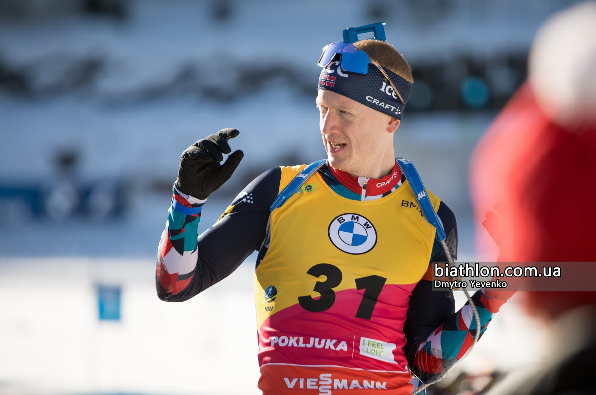
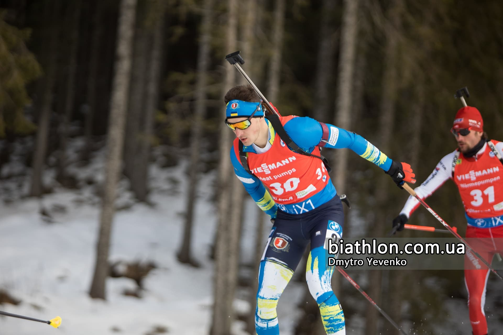

Русский
Русский
Сезон биатлона 2022/2023
Навигация
- Межсезонье
- Кубок мира сезона 2022/2023. Мужчины
- Чемпионат мира 2023. Мужчины
- Кубок IBU сезона 2022/2023. Мужчины
- Юниорский кубок IBU. Юниоры
- Юниорский чемпионат Европы. Юниоры
- Юниорский чемпионат мира. Юниоры
- Кубок мира сезона 2022/2023. Женщины
- Чемпионат мира 2023. Женщины
- Кубок IBU сезона 2022/2023. Женщины
- Юниорский кубок IBU. Юниорки
- Юниорский чемпионат Европы. Юниорки
- Юниорский чемпионат мира. Юниорки
- Итоги биатлонного сезона 2022/2023
Межсезонье
Важные события, которые произоши в межсезонье:
- Олле Далин был переизбран президентом IBU
- Макс Кобб избран новым генеральным секретарем IBU
- Конгресс IBU подтвердил отстранение россии и Беларуси
- Украина сохранит представительство в 5 спортсменов в Кубке мира 2022/23
- Дарья Блашко будет готовиться к биатлонному сезону с Юраем Санитрой
- Александр Кравченко - старший тренер женской сборной Украины
- Урош Велепец - помощник старшего тренера мужской сборной Германии
- Владимир Брынзак уходит с должности президента федерации
- Новим президентом Федерації біатлону України обрано Івана Крулька
В межсезонье завершили карьеру целый ряд известных биатлонистов и биатлонисток.
Мужчины:
- Эрик Лессер (34 года)
- Беньямин Вегер (32 года)
 Эрленн
Бьонтегор (32 года)
Эрленн
Бьонтегор (32 года) Доминик
Виндиш (32 года)
Доминик
Виндиш (32 года) Чен
Фаньмин (27 лет)
Чен
Фаньмин (27 лет)- Симон Деcтьё (30 лет)
 Скотт
Гоу (31 год)
Скотт
Гоу (31 год)
Женщины:
- Тириль
Экхофф (32 года)
- Селина Гаспарин (38 лет)
- Анаис Бескон (35 лет)
 Сюзан
Данкли (36 лет)
Сюзан
Данкли (36 лет)- Клэр
Игэн (34 года)
 Ева
Пускарчикова (31 год)
Ева
Пускарчикова (31 год)- Каролин Хорхлер (33 года)
- Марен Хаммершмидт (32 года)
 Магдалена
Гвиздонь (43 года)
Магдалена
Гвиздонь (43 года) Аманда Лайтфут (35 лет)
Аманда Лайтфут (35 лет) Элизабет
Хогберг (35 лет)
Элизабет
Хогберг (35 лет)
Кубок мира сезона 2022/2023. Мужчины

Высота над уровнем моря: 120 м
Навигация
- Межсезонье
- Кубок мира сезона 2022/2023. Мужчины
- Чемпионат мира 2023. Мужчины
- Кубок IBU сезона 2022/2023. Мужчины
- Юниорский кубок IBU. Юниоры
- Юниорский чемпионат Европы. Юниоры
- Юниорский чемпионат мира. Юниоры
- Кубок мира сезона 2022/2023. Женщины
- Чемпионат мира 2023. Женщины
- Кубок IBU сезона 2022/2023. Женщины
- Юниорский кубок IBU. Юниорки
- Юниорский чемпионат Европы. Юниорки
- Юниорский чемпионат мира. Юниорки
- Итоги биатлонного сезона 2022/2023
Кубок світу 2022/23 стартував! Зазвичай стартові гонки сповнені сюрпризів, особливо якщо сезон доводиться розпочинати з індивідуальних гонок, як відбулось цього разу в
 Контіолахті.
Контіолахті.Однак віце-лідер минулого сезону Стурла Легрейд мав усі шанс, як і торік, переможно розпочати сезон. Але, точно влучивши перші 18 мішеней, два останні постріли норвежець випустив «в молоко», і втратив вже майже здобуту перемогу! З двома хвилинами штрафу Легрейд втратив навіть місце на подіумі, і фінішував шостим.
Проте зі Скандинавії перемога нікуди не поділась: по-справжньому «вистрілив» Мартін Понсілуома, який до цього мав одну перемогу в кар’єрі – на позаминулорічному чемпіонаті світу. Але то був спринт, а зараз швед довів, що може бути конкурентним і в індивідуальних гонках! Лише однієї помилки припустився Мартін на чотирьох вогневих рубежах і виграв першу гонку Кубка світу нового сезону!
Але головним героєм гонки став, напевно, 22-річний Ніклас Хартвеґ! Швейцарець став одним з лише двох стовідсоткових снайперів гонки і створив історичний для своєї країни результат! Раніше найкращим досягненням для чоловічого біатлону Швейцарії було срібло Беньяміна Веґера у індивідуалці в Поклюці на початку сезону 2010/11. І ось 12 років по тому рекорд повторений! При цьому попередній персонал-бест самого Хартвега був лише 17-м - минулого сезону в Антхольці.
Перший подіум і в активі сьогоднішнього бронзового призера. Наприкінці гонки за третю позицію боролись два німці. Більш досвідчений Роман Рес на той момент був вже пасивним спостерігачем, і лише очікував на результат свого співвітчизника Давіда Цобеля. Спортсмен, який більше відомий за стартами в Кубку IBU, від початку фінішного кола почав втрачати свою й без того невелику перевагу над конкурентами по боротьбі за подіум. І, здавалося, мусить задовольнитись лише квітковою церемонією. Але на фінішній прямій Цобель додав і у підсумку випередив Романа Реса на півтори секунди!
Звичайно, чекали ми й приємних несподіванок від українських спортсменів. Сенсацій наші хлопці поки що не створили, але непоганими результатами порадували. Принаймні за відсутності двох найдосвідченіших спортсменів команди, троє у заліковій зоні – результат!
Найкращим в нашій команді став Антон Дудченко, який і швидкість показав найвищу серед українців. Маючи три хвилини штрафу, Антон завершив гонку потраплянням у топ-30.
Наступний рядок у фінішному протоколі – також за українцем: це Богдан Цимбал, відстрілявшись з двома промахами, показав 31-й час. Ще одним нашим представником у заліковій зоні став Тарас Лесюк, для якого це лише друге потрапляння у очки Кубка світу в кар’єрі.
Четвертим з українців сьогодні стартував Денис Насико, який вдруге розпочинає сезон в Кубку світу. Але якщо минулого спезону в такій самій індивідуалці в Естерсунді був 41-й результат, то сьогодні вийшло дещо гірше – 64-та підсумкова позиція. Однак, хочеться вірити, що після повноцінної підготовки до сезону разом з першою командою, у Дениса буде більше шансів проявити себе.
Індивідуальна гонка. Чоловіки
1.
Мартін Понсілуома (0+1+0+0) 49:36,52. Ніклас Хартвег (0+0+0+0) +37,2
3. Давід Цобель (0+0+0+0) +59,3
...
30.
 Антон
Дудченко (1+0+1+1) +4:17,8
Антон
Дудченко (1+0+1+1) +4:17,831.
Богдан Цимбал (1+0+0+1) +4:31,540.
Тарас
Лесюк (0+1+0+1) +5:02,264.
Денис Насико (0+2+0+1) +6:53,4Повні результати гонки тут
Аналіз гонки тут
Першої естафети нового сезону довелось чекати не довго! Вже у третій змагальний день першого етапу Кубку світу в
Контіолахті і
чоловіки, і жінки отримали змогу показати свою командну потужність.У чоловічій естафеті українські вболівальники нарешті побачили двох досвідчених наших спортсменів – Артема Приму та Дмитра Підручного, які два дні тому пропускали індивідуальну гонку.
Перше коло Артем провів досить обережно, вивчаючи свій стан. Він не став триматись у чільній групі, і вже до стрільбища погравав 10 секунд лідерам. А після того, як єдиний промах вдалось закрити додатковими патронами лише з третьої спроби, наша команда вже на старті опинилась на 17-й позиції.
А далі наш спортсмен увімкнув характер. Перед стійкою Прима кинувся наздоганяти, відіграючи і позиції, і секунди відставання. Та й другу стрільбу відпрацював набагато якісніше – лише з одним додатковим патроном. На останньому колі українець потримався у досить багатолюдній компанії, і передав естафету дев’ятим. 36 секунд відставання – не трагедія. А щодо рівня форми, то за чистим часом на лижні у Артема четвертий результат.
А ось для шведа Пепе Фемлінга стійка склалась катастрофічно. За умови майже повного штилю віз з вісьмох патронів спромігся закрити лише три мішені, і після двох кіл штрафу програвав вже більше хвилини групі лідерів!
Героєм з позначкою плюс на цьому етапі став молодий француз Ерік Перро, який влучно випустив усі десять пострілів, і лише на останній прямій пропустив вперед номінального фаворита – Ветле-С’ястада Крістіансена. Саме Норвегія номінально виграла перший відрізок, але разом з ним передав естафету Перро, а в шістьох секундах позаду – німець Юстус Штрелов.
Дмитро Підручний з перших метрів захопив ініціативу у своїй міні-групі і на дистанції швидко вийшов на шосту позицію. Але, на жаль, швидкість далася взнаки на стрільбищі, і свою першу стрільбу офіційного сезону капітан команди провів з семи пострілів.
Далі – більше: на стійці Дмитро взагалі «пограв у валідол» з вболівальниками, коли з перших п’яти пострілів влучив лише двічі. На щастя, концентрації та додаткових патронів вистачило: на трасу Підручний вирушив без штрафних кіл. Але там Дімі стало важко: звісно, пропуск через травму надважливого етапу передсезонної підготовки в листопаді не міг не позначитись. Тому на заключних 2,5 кілометрах капітан втратив більш ніж півхвилини, і свій етап завершив 13-м. Причому тепер гандикап нашої команди від лідерів вимірювався вже 100 секундами.
В групі ж лідерів зміни відбулись зовсім незначні. Трішки підвів команду Франції Фаб’єн Клод, який після п’яти запасних патронів не лише втратив контакт з суперниками Норвегії та Німеччини, але пропустив в трійку лідерів ще й Словенію в особі її лідера Якова Фака.
Попереду ж Йоханнес Кюн та Стурла Легрейд увесь етап пройшли поруч, і на фініші перевага німецького біатлоніста вимірювалась лише півсекундою! Дует Словенія-Франція програвав майже півхвилини.
У другій половині естафети у складі України у боротьбу вступила молодша частина команди. На третьому етапі Богдан Цимбал не форсував темп, зате стрільбу відпрацьовував дуже якісно: на двох вогневих рубежах Богданові знадобився лише один запасний патрон! Останнє коло, щоправда, довелось працювати на самоті і витрачати зайві сили, але у підсумку Цимбал повернув команду у топ-десятку! Так, з відставанням більше ніж у дві хвилини, але то до лідерів, а ось відстань до п’ятої позиції залишалась цілком прийнятною – 25 секунд.
Сюрпризом на цій стадії стало високе п’яте місце Литви, спортсмени якої мали навіть штрафне коло, яке Томас Каукенас заробив ще в стійці першого етапу. Зате на п’яти інших вогневих рубежах литовці не припустились жодної хиби!
Попереду ж знов сформувалась звична трійка претендентів на перемогу. Норвежці та німці перед останнім етапом прийшли абсолютно рівно – на передачі естафети Тар’єй Бьо та Бенедікт Долль показали абсолютно ідентичний час! Емільєн Жаклен чудово провів два кола, наблизився до цього дуету, але на останнє коло француза не вистачило, і він прийшов на стадіон через 24 секунди після Бьо та Долля.
На вирішальному етапі від самого початку ситуацію у свої руки взяв Йоханес Бьо! Норвежець вже й забув, коли востаннє бігав четвертий етап, поступившись функціцями фінішера на користь Крістіансена. Але навички нікуди не поділись! Вже до першого рубежу Бьо-молодший сформував десятисекундну перевагу, аби мати право на невеличку помилку. Цим правом він і скористався, а зважаючи на фірмову швидкострільність, а також промах у головного суперника Романа Реєса, перевага Норвегії продовжувала зростати.
У стійці Йоханнес взагалі провів черговий майстер-клас, перетворивши останнє коло у цілковиту формальність. Навпаки, після двох промахів Романа Реєса могла б зав’язатись боротьба за срібло, але лідер Франції Кантен Фійон Майє також припустився помилки, і перед останнім колом склад подіуму став остаточно зрозумілим: Норвегія-Німеччина-Франція.
У команді України ж вже звично тягар по вирішенню остаточних позицій було покладено на Антона Дудченка. І фінішний відрізок наш спортсмен провів гідно. Трішки не вистачило влучності: після одного запасного патрону в лежці і ще двох у стійці здавалося, що межею сподівань буде десята позиція, адже на останнє коло Антон вийшов слідом за потужним шведом Себастьяном Самуельссоном і в десятку секунд позаду ще групи команд.
Але, втримавшись за шведом на першій половині фінального кола, Дудченко прискорився, скинув Самуельссона, і на фінішній прямій ледь не наздогнав суперників зі Словенії та Литви! До сьомої позиції не вистачило лише півтори секунди, але й девְ’яте місце у хорошій боротьбі абсолютно не можна назвати провалом. А самого Антона привітаємо з набуттям гросмейтерського вміння вдало розподіляти сили по дистанції!
Загальне ж враження від виступу нашої команди – небезнадійність. Так, ще слід збалансувати швидкість та стрільбу: хоча наші хлопці обійшлись без штрафних кіл, але 13 запасних патронів – забагато для такої чудової біатлонної погоди, яку ми сьогодні побачили в Контіолахті. І якщо помріяти – ще мінус два промахи, і наша команда цілком могла сперечатись за четверту позицію. Але це вже завдання – на наступну естафету. А зараз – з почином, хлопці, і дякуємо!
Естафета. Чоловіки
1.
Норвегія (0+7) 1:19:26,22. Німеччина (0+8) +43,9
3. Франція (0+9) +1:05,9
4.
 Австрія (0+4) +2:31,2
Австрія (0+4) +2:31,25.
Чехія
(0+10) +2:33,96.
Фінляндія (1+12)
+2:34,1...
9.
Україна (0+13)
+2:48,8Повні результати гонки тут
Аналіз гонки тут
Після дня перепочинку, учасники першого етапу Кубка світу вийшли на старт спринту. Чоловіча гонка подарувала вболівальникам неймовірно цікаву боротьбу за подіум!
Перший орієнтир встановив Себастьян Самуельссон. Але оскільки швед високу швидкість не зміг підкріпити абсолютною влучністю, припустившись помилки у стійці, то і на першій позиції його результат протримався лише п’ять хвилин.
Обійти Самуельссона вдалось лише Стурлі Легрейду, який на дистанції програв шведу лише вісім секунд, проте стріляв і швидше, і безпомилково! Саме ця пара надовго окупувала два перші рядки проміжного протоколу.
Але звання головного «інтригана» сьогоднішньої гонки належить Йоханнесу Бьо, який стартував аж під 50-м номером. Однак пізній старт і траса, що почала розбиватись, аж ніяк не завадили норвежцю! На першому колі він ще вивчав свої можливості, не вмикаючи максимальної швидкості, проте після ідеальної стрільби лежачи почав додавати секунди переваги над Легрейдом. І навіть одне коло штрафу у стійці не завадили Йоханнесу вирушити лідером на останнє коло! Ну а далі вже було питання техніки: на фініш Бьо прийшов першим, маючи десять секунд запасу.
За півхвилини до норвежця лінію фінішу перетнув Роман Реєс, який також пройшов два рубежі без штрафу. І ця гонка стала для німця однією з найкращих в кар’єрі – він вдруге піднявся на особистий подіум Кубка світу! Причому Реєс дуже грамотно розклав сили по дистанції -саме на останньому кілометрі він остаточно довів свою перевагу над Самуельссоном, витиснувши шведа з п’єдесталу пошани.
Інший шведський біатлоністю. Мартін Понсілуома, який після перемоги у індивідуальній гонці вперше у житті вийшов на гонку у жовтому бібі лідера, свою більш профільну гонку провів невдало. Два кола штрафу стали надто великим тягарем для Мартіна, який у підсумку отримав лише 13-те місце і втратив лідерство у загальному заліку, поступившись одним очком Йоханнесу Бьо.
Українські біатлоністи продемонстрували непогану кучність результатів, втрьох потрапивши до залікової зони. На жаль, наша команда на цьому етапі (а, ймовірно, і в Хохфільцені) змушена буде обійтись без допомоги Дмитра Підручного, який не може виступати через біль у коліні: пошкоджені зв’язки під навантаженням не дозволяють виступати у змагальному режимі. Тому хлопцям доводиться відпрацьовувати за себе і ще трішки - за капітана.
Найкраще це сьогодні вдалось Артему Примі, який проводив перший особистий старт цього сезону. Як для «розгону», початок прийнятний – Артем з одним колом штрафу в стійці зміг потрапити до топ-тридцятки.
Другу гонку поспіль у заліковій зоні завершує Богдан Цимбал. Початок спринту вийшов для нього не надто вдалим – на першому рубежі наш спортсмен припустився хиби. Але далі Богдан почав відіграватись і у підсумку фінішував з 36-м результатом. Причому відзначимо, що на останньому колі Цимбал випередив п’ятьох суперників, що і дозволило врешті пробитись до заліку!
Найбільшу стабільність наразі в команді демонструє Тарас Лесюк ,який і в індивідуалці, і в спринті заробив один бал, фінішуючи 40-м. Він став єдиним серед українців, хто пройшов два рубежі без штрафу. Але для цього Тарас використав більше часу на стрільбищі, ніж партнери по команді. Міг би Лесюк позмагатись і за набагато кращий результат – на останнє коло він пішов з кращим графіком, ніж Прима. Але в середині фінального відрізку Тараса «прибило» на підйомі, і довелось відкласти більш амбітні плани принаймні на завтрашній перс’ют.
В гонку переслідування з 59-м часом пробився також Антон Дудченко, для якого, щоправда, це – не показник. На жаль, спринт для Антона варто назвати невдалим. Але щільність результатів досить висока – Тому ж Лесюку Дудченко програв менш ніж півхвилини, тому завтра буде можливість поборотись за очки. А ось п’ятий наш учасник такої можливості буде позбавлений – Денис Насико з двома промахами посів лише 84-ту позицію.
У загальному заліку кращим з українців після двох гонок йде Богдан Цимбал. Але ситуація після кожного старту може змінюватись. Для Кубку націй наша команді сьогодні набрала непогані очки, і етап в Контіолахті завершує дев’ятою.
Спринт. Чоловіки
1.
Йоханнес-Тінґнес Бьо
(0+1)
23:09,02.
Стурла
Легрейд
(0+0) +10,53. Роман Рес (0+0) 28,8
...
30.
Артем Прима (0+1) +1:46,936.
Богдан Цимбал (1+0) +1:59,540.
Тарас Лесюк (0+0)
+2:03,059.
Антон
Дудченко
(2+0) +2:30,684.
Денис
Насико (1+1) +3:14,6Повні результати гонки тут
Аналіз гонки тут
Для чоловіків змагальна програма першого етапу Кубка світу з біатлону в фінському
Контіолахті завершилася.
Останньою гонкою етапу став перс'ют.Українським біатлоністам важко було сподіватися на дуже високі результати, стартуючи в четвертому десятку з відставанням близько двох хвилин. А для Антона Дудченка з передостаннім стартовим номером це, скоріше, передбачалося додаткове тренування з підвищеною відповідальністю. Проте не все сталося, як гадалося.
Наші хлопці дружньо без хиб пройшли першу стрільбу лежачи, лише Тарас Лесюк помилився одним пострілом. А ось далі почалися "гойдалки". Артем Прима, який мав найкращу стартову позицію серед наших спортсменів, на другій лежці тричі помилився, одразу впавши набагато в проміжному протоколі. Лесюк на кожному рубежі, крім першої стійки, записував собі "1" в графу промахів. Богдан Цимбал завдяки чистій стрільбі лежачи піднявся на 16-ту позицію, але три помилки сумарно стоячи залишали шанси лише змагатися за збереження приблизно того місця, з якого стартував.
А ось хто просто вразив - так це Антон Дудченко. Влучна стрільба на трьох рубежах і єдина хиба останнім пострілом. Та попри цю прикру помилку, в підсумку Дудченко піднявся на 41 позицію (!!!), посівши 18 місце. Неймовірна гонка! Щирі вітання нашому біатлоністу!
Богдан Цимбал на фініші став 34-им, Тарас Лесюк втретє на цьому етапі замкнув залікову зону, а Артем Прима опинився на 2 позиції нижче - 42-им.
У цій гонці ми побачили також цікаву боротьбу лідерів поточного заліку КС, яка, зважаючи на нові правила нарахування залікових очок, стала ще більш гострою. Адже ціна кожної перемоги відчутно зросла. І тут Йоханнес-Тінґнес Бьо показав, що не збирається нікому віддавати майку лідера, принаймні, на даний момент. Упевнена стрільба в двох лежках, не зважаючи на настільки ж влучну стрільбу найближчих переслідувачів (окрім Романа Реса з однією хибою), дозволили навіть трішки наростити перевагу Йоханнеса.
На першій стійці лідери почали помилятися, тим часом як Емільєн Жаклен записав собі третій нуль. А ось заключна стрільба стала нервовою для всіх. По два промахи в Йоханнеса та Емільєна, по одному - в Стурли Легрейда, Себастьяна Самуельссона та Романа Реса. Але в підсумку - знов перемога Бьо та срібло Легрейда. Порівняно зі спринтом змінився лише володар бронзи, яким став Емільєн Жаклен.
Відмітимо за результатами переслідування також п'яту швидкострільність Антона Дудченка і восьму - Артема Прими. Щоправда, Антону набагато краще вдалося поєднати швидкість стрільби з її якістю.
Гонка переслідування. Чоловіки
1.
Йоханнес-Тінґнес Бьо (0+0+1+2) 32:44,42.
Стурла Легрейд (0+0+1+1)
+19,23. Емільєн Жаклен (0+0+0+2) +47,3
...
18.
Антон Дудченко (0+0+0+1) +2:45,834.
Богдан Цимбал (0+0+2+1)
+3:44,740.
Тарас Лесюк
(1+1+0+1)
+3:55,742.
Артем Прима
(0+3+1+1) +4:18,9Повні результати гонки тут
Аналіз гонки тут

Высота над уровнем моря: 959 м
Сьогодні другий етап Кубка світу в
Хохфільцені
продовжився спринтом у чоловіків. Шкода, але успішним для української команди його аж ніяк назвати не
можна.Перед стартом гонки організатори змушені були вдатись до зміни траси, адже за відсутності снігу не було змоги підготувати велике коло для чоловічого спринту. Тому перед другим рубежем спортсменам довелось подолати 5 кілометрів замість звичних 3,3, що на додачу до непростого підходу до стадіону робило стійку ще більш складною. І інший фактор – оскільки кіл в гонці стало не три, а чотири, то й розбивалась траса активніше, а тому спортсмени, що обрали для старту другу або третю групу, опинились у програшній ситуації.
Двоє зі спортсменів збірної України отримали вигідні з огляду на погодні умови місця у першій стартовій групі. Однак скористатись сприятливими умовами хлопці, на жаль, не змогли через неточність. І якраз стійка стала каменем спотикання для Антона Дудченка та Артема Прими.
Дудченко добре розпочав гонку, і перед другою стрільбою міг претендувати на дуже високий результат. Але стійку Антон пройшов з двома помилками і у підсумку фінішував 38-м. Тим не менш, саме цей результат став кращим сьогодні в українській команді і єдиним у заліковій зоні. Та й два промахи – це, на жаль, найменший показник невлучності для нашої команди у спринті.
У Прими ж гонка не вийшла зовсім. На додачу до одного штрафного кола на першому рубежі, Артем тричі схибив у стійці і на фініші не зміг зачепитись навіть за топ-60, що дають право взяти участь у перс’юті.
У гонці переслідування представництво України обмежиться двома спортсменами – другим з них стане Тарас Лесюк, який припустився по одній помилці на кожному рубежі, але зрештою втримав 53-ту позицію.
Богдан Цимбал, на жаль, неприємно здивував. За показником швидкості в нього найгірший результат у команді, а з трьома промахами його фінішний результат – лише 84-й.
Ще трішки нижчим у протоколі опинився Віталій Мандзин. Але для 19-річного спортсмена це був дебют у гонках Кубка світу, а тому жодних завдань, окрім набуття досвіду, перед ним Юрай Санітра не ставив. Саме браком досвіду можна пояснити квапливість на другому вогневому рубежі, в результаті якої Мандзин заробив три штрафних кола у стійці. Зважаючи на те, що в лежці також було коло штрафу, 89-те підсумкове місце виглядає цілком логічно. Але не є приводом опускати руки!
А ось для Йоханнеса Бьо ніби й не існувало ані складного підходу до стрільбища, ані суперників на трасі! Стартувавши 16-м, лідер Кубка світу вже після своєї другої стрільби вирішив питання про переможця гонки! Два ідеальних рубежі, надвисока швидкість по дистанції – і Йоханнес не лише виграв сьогодні, а й зробив суттєвий запас на перс’ют у неділю.
У спринті Бьо-молодший у найближчого суперника виграв 43 секунди! А срібним сьогодні став Емільєн Жаклен, який у напруженій боротьбі на останньому колі зміг на чотири секунди обійти Стурлу Легрейда. Саме ці двоє тепер складатимуть першу трійку загального заліку разом з лідером сезону – Йоханнесом Бьо.
Взагалі, норвезька команда сьогодні помітно домінувала, адже четверту позицію також посів представник цієї скандинавської команди – Філіп Ф’єльд Андерсен ,який зумів конвертувати у квіткову церемонію свої два нулі на стрільбищі.
А на п’ятому місці – велике повернення! Андрейс Расторґуєвс за той рік, що відбував дискваліфікацію, встиг скучити за гонками, і у першому після повернення старті на Кубку світу вибив два нулі, й також взяв участь у квітковій церемонії! Шостим фінішував кращий зі шведів на початку сезону – Мартін Понсілуома.
У загальному заліку перевага Йоханнеса Бьо над Стурлою Легрейдом виросла до 49 очок. За нинішньої системи підрахунку, це ще – не вирок боротьбі. Але вироком може стати налаштованість Йоханнеса виграти цей сезон після невдалого минулого.
Серед українців найкращий Антон Дудченко, який наразі перебуває на 32-й позиції. Для Кубку націй гонка у виконанні хлопців вийшла не надто вдалою, але команда зберегла дев’яте місце.
Завтра боротьба в Хохфільені продовжиться гонкою переслідування у жінок і естафетою у чоловіків.
Спринт. Чоловіки
1.
Йоханнес-Тінґнес Бьо
(0+0) 23:04,02. Емільєн Жаклен (0+1) +43,0
3.
Стурла Легрейд (0+1) +46,9...
38.
Антон Дудченко
(0+2)
+2:23,053.
Тарас
Лесюк
(1+1) +2:56,667.
Артем
Прима (1+3) +3:19,884.
Богдан Цимбал (0+3) +3:46,989.
Віталій Мандзин
(1+3) +3:59,2Повні результати гонки тут
Аналіз гонки тут
На тлі невдалих виступів української команди на другому етапі Кубка світу, на чоловічу естафету покладали особливі сподівання на злам ситуації. Нехай і частково з надією на диво.
Погода в
Хохфільцені піднесла
чоловікам неприємний сюрприз: перед стартом пішов дуже густий сніг, який ускладнив і без того непросту
роботу сервісменів. Але українські «чарівники змащення», здається, впорались майже ідеально – принаймні,
Артем Прима, який вже традиційно взяв на себе стартовий етап естафети, на
трасі тримався досить впевнено. Стрільбу лежачи наш найдосвідченіший спортсмен пройшов бездоганно, втримавшись в групі лідерів. А після другого рубежа з абсолютно некритичним одним додатковим патроном Артем вийшов на трасу у щільній групі з десяти команд, що могли претендувати на друге місце.
Перше за собою втримав Стурла Легрейд, який навіть з трьома додатковими патронами у стійці прийшов на передачу естафети з перевагою у 10 секунд над найближчими суперниками. Прима ж свій етап формально завершив шостим, але відстань до другого місця шведа Єспера Неліна була суто символічною – вісім секунд.
Серед розчарувань стартового етапу можна відзначити Фінляндію та Чехію, які виходили на старт, претендуючи на місце у шістці, але вже після першої зміни опинились в середині другого десятку. А також дивно було бачити дев’яту позицію та 25-секундне відставання німця Юстуса Штрелова, який при цьому використав лише один додатковий патрон.
На другому етапі Мартін Понсілуома та Зімон Едер потужно увімкнулись у гонитву за лідером, і вже до першого рубежу ліквідували відставання від норвежця Філіпа Ф’єльда Андерсона. Антон Дудченко, який вийшов другим у складі збірної України, темп не форсував, спокійно тримаючись в групі і готуючись до стрільби. Лежку Антон закрив з одним додатковим патроном, але зробив це повільніше за суперників. І проблема навіть не у дев’ятому місці, з якого Дудченко пішов на своє друге коло, а 10-секундна прірва до найближчого з суперників попереду.
І хоча перед стійкою довелось попрацювати більш напружено, саму стрільбу Антон пройшов лише з одним запасним патроном. На останньому колі українець сів за спину німця Йоханнеса Кюна, який перед тим відмотав коло штрафу. Але протриматись за цим локомотивом вдавалось не довго. На другій половині кола Дудченко знайшов більш посильну компанію, і на фініш етапу прийшов дев’ятим слідом за естонцем Крісто Сіімером.
А в лідери несподівано вийшла… збірна Італії! Томмазо Джакомел відмінно відпрацював на стрільбищі, та й на дистанції не дозволив себе наздогнати аж ніяк не тихохідним скандинавам Понсілуомі та Андерсену. Втім, збірні Швеції та Норвегії відставали лише на 5 секунд. Ще в десяти секундах позаду Фаб’єн Клод передав французьку естафету Емільєну Жаклену. Інші команди відставали на півхвилини і більше.
Зважаючи на те, що далі у Італії стартували відверто набагато слабші учасники, коло претендентів на нагороди можна було вважати визначеним. Та й головний фаворит також був зрозумілим: Йоханнес Бьо, який стартував третім за Норвегію, цього сезону домінує у чоловічому пелотоні. І вже після кулеметної лежки лідер Кубка світу відірвався від найближчого з суперників, Жаклена, на 15 секунд. А після такої ж стрімкої стійки і неймовірної швидкості на дистанції, долю перемоги фактично було вирішено – більш ніж хвилина переваги!
У контактній боротьбі за другу позицію Емільєн Жаклен вирізав фініш у Пепе Феммлінґа. За певних обставин помилками Франції та Швеції готова була скористатись Німеччина, адже Роман Реєс прийшов четвертим лише у двадцяти секундах позаду цієї пари.
На останньому етапі Ветле-С’ястад Крістіансен ані на секунду не дозволив зародитись сумніву у перемозі Норвегії. Навіть коло штрафу після стійки не допомогло суперникам наблизитись, аби хоча б позначити боротьбу. Надто багато переваги привіз своєму фінішерові Йоханнес )
А ось у боротьбі за інші місця на подіумі все ж стались зміни. Причому несподівано підвів команду Франції володар Великого кришталевого глобусу минулого сезону Кантен Фійон-Майє. На кожному з двох вогневих рубежів він двічі діставав додаткові патрони, в той час як Себастьян Самуельссон та Бенедікт Долль дозволили собі лише по одному промаху у стійці. Тому французи цього разу залишились без подіуму. А швед з німцем провели рівний етап, і Самуельссон фінішував другим завдяки стартовій перевазі над Доллем. Швеція після провалу в Контілолахті, другу естафету сезону завершує зі сріблом!
Не можна також не відзначити прогрес збірної Фінляндії. Минулого сезону ця команда жодного разу не потрапила навіть до вісімки кращих. А цієї зими вже двічі покращують результат – шосте місце в на домашньому першому етапі і п’яте – сьогодні.
Для української ж команди друга половина естафети вийшла дуже складною. Богдан Цимбал наразі перебуває далеко від своїх оптимальних кондицій, що підтвердилось і в цій естафеті: три додаткових патрони та невпевнений хід по дистанції дозволили нашому спортсмену прийти до передачі лише 12-м. Втім певна перспектива у боротьбі за вісімку зберігалась – дистанція до восьмого місця команди Словенії вимірювалась 16-ма секундами.
Однак Тарасу Лесюку підвищитись не судилось – надто багато поступався наш спортсмен на дистанції. Не допомогло навіть коло штрафу канадійця, який йшов безпосередньо перед Тарасом. У підсумку збірна України фінішувала 12-ю.
Цей результат похитнув позиції команди і в Кубку націй: Україна пропустила повз себе збірну Швейцарії і тепер йде десятою.
Завтра етап в Хохфільцені завершиться «дзеркальною» програмою: естафетою у жінок і перс’ютом чоловіків.
Естафета. Чоловіки
1.
Норвегія (1+7)
1:18:02,62.
Швеція (0+8)
+20,03. Німеччина (1+5) +28,6
4. Франція (0+9) +51,5
5.
Фінляндія (0+9) +2:00,76.
Австрія (0+4) +2:28,6...
12.
Україна (0+8)
+3:48,4Повні результати гонки тут
Аналіз гонки тут
Завершальною гонкою другого етапу Кубка світу в
Хохфільцені став чоловічий перс’ют. Право на участь у гонці за
результатами спринту здобули двоє українців, але Тарас Лесюк після
естафети відчув певні ознаки хвороби, і тренери вирішили не ризикувати здоровְ’ям спортсмена перед
третім етапом вже наступного тижня.Тому сподівання українських вболівальників були пов’язані лише з Антоном Дудченком. Але минулого тижня в Контіолахті Антон довів, що в переслідуванні вартий сподівань, коли зміг піднятись у топ-двадцятку, стартувавши 59-м. І цього разу Антон також не розчарував!
На чотирьох вогневих рубежах українець припустився лише двох помилок, і, що особливо приємно, на трасі виглядав дуже конкурентоздатно. За чистою швидкістю в гонці у Дудченка 18-й час – набагато краще, ніж раніше в цьому сезоні. Завдяки поєднанню двох факторів, наш спортсмен поступово піднімався у протоколі і зрештою досяг 23-го місця, відігравши за час перс’юту 15 позицій! Дякуємо за боротьбу, Антоне!
А загалом гонка розділилась на три частини. В першій був поодинокий Йоханнес Бьо, який усю дистанцію переслідував лише себе самого, намагаючись не надто багато настріляти штрафних кіл. Навіть після промаху у другій лежці, у перевазі лідера Кубка світу не виникало жодних сумнівів. На останню стрільбу Бьо-молодший прийшов, маючи вже хвилину переваги, спокійно ще з одним колом штрафу відпрацював стійку – і вирушив на фініш до своєї четвертої перемоги в сезоні! У зв’язках спринт-перс’ют норвежець в цьому сезоні не має рівних!
Друга група – ті, хто розігрував поміж собою срібло та бронзу. Протягом гонки Стурла Легрейд та Емільєн Жаклен не віддавали нікому з конкурентів друге та третє місця, і вирішували, хто з них двох є більш стабільним. Цю боротьбу виграв Легрейд, оформивши для Норвегії переможний дубль!
Ну а далі йшов пелотон, в якому переміщення носили калейдоскопічний характер! Аж до того, що на останню стрільбу фаворитом у боротьбі за четверте місце прийшов… Теро Сеппяля, який, стартувавши 18-м, мав три нулі на рубежах! Однак фінн у вирішальній стрільбі заробив три кола штрафу і відкотився знов у кінець другого десятку.
А четверту позицію втримав досвід. Кантен Фійон Майє, не маючи притаманної в минулому сезоні швидкості, зараз намагається набирати очки влучністю. У цій гонці він показав один з найкращих показників влучності, лише одного разу не закривши мішень. Четверте місце – поки що найкраще в цьому сезоні для минулорічного переможця загального заліку. І не можна не відзначити спортсменів, які прорвались у переслідуванні на 5-7 місця з середини залікової зони: відповідно, Ніклас Хартвег (з 22-го), Томмазо Джакомел (з 20-го) і Яков Фак (з 25-го).
У загальному заліку Кубка світу перевага Йоханнеса Бьо вже потрохи наближається до непристойної. Після двох етапів Кубка світу він випереджає Стурлу Легрейда на 64 очки. Емільєн Жаклен, що зберігає третю сходинку, відстає ще на 72 бали. Антон Дудченко завдяки набраним сьогодні очкам піднявся на 30-те місце.
Перерва у біатлонних стартах буде не тривалою. Вже в середу юніори розпочнуть другий етап на своєму Юніорському Кубку IBU в Обертілліасі, а в четвер до них доєднаються і дорослі біатлоністи – на Кубку світу та Кубку IBU в Ріднау. Еліта ж розпочне змагання в Ансі з чоловічого спринту.
Переслідування. Чоловіки
1.
Йоханнес-Тінґнес Бьо (0+1+0+1) 33:50,72.
Стурла Легрейд
(0+0+1+1) +47,93. Емільєн Жаклен (0+1+1+1) +1:13,9
...
23.
Антон Дудченко (0+1+0+1)
+2:54,2DNS.
Тарас
Лесюк Повні результати гонки тут
Аналіз гонки тут

Высота над уровнем моря: 928 м
Сьогодні французький Ансі вітав учасників третього етапу Кубка світу, який стартував чоловічим спринтом. Попри очікування не надто сприятливої для біатлону погоди, перший старт пройшов майже за ідеальних умов. Принаймні на стрільбищі вітер взагалі не заважав спортсменам, а траса зберігала прийнятний стан навіть для останньої стартової групи.
Такі умови зазвичай не надто сприяють несподіванкам, і якщо говорити про боротьбу за перемогу, все стало зрозуміло після другої стрільби Йоханнеса Бьо. Норвежець на старті цього сезону перебуває в якійсь позапланетній формі, фактично позбавляючи чоловічий біатлон інтриги. Трішки дав слабинку Йоханнес під час стійки, на якій затримався на зайві 7-8 секунд. Але що ці миттєвості у порівнянні з неймовірною перевагою на трасі! Два нулі на вогневих рубежах – і вже п’ята перемога в поточному сезоні!
Принаймні видимість боротьби для Бьо зміг створити лише його партнер по збірній і водночас найближчий переслідувач у загальному заліку Стурла Легрейд. Він також уникнув штрафних кіл і на фініші поступився лідерському графіку 17 секунд.
А далі – прірва: бронзовий призер гонки, яким досить несподівано став німець Бенедікт Долль, програв 39 секунд. І такі інтервали не надто тішать у перспективі субьтньої гонки переслідування. А якщо говорити про сенсації, то найменш очікувано було бачити у квітковій церемонії представника Південної Кореї Тимофія Лапшина, який фінішував п’ятим, показавши свій найкращий результат за останні сім років.
Навпаки, дещо розчарували своїх вболівальників господарі траси, від яких очікували боротьби за подіум. Однак цьогорічний лідер команди Емільєн Жаклен додав аж 450 штрафних метрів за три промахи й фінішував лише 13-м. А Кантену Фійону Майє не пощастило з першим стартовим номером, і, виконуючи роль орієнтира для усіх суперників, переможець Кубка світу минулого сезону з одним колом штрафу став восьмим.
Нарешті здолали проблеми зі стрільбою лідери української команди! Сьогодні двоє з чотирьох українців, що стартували у спринті, завершили гонку з нулями у графі промахів. А найкращий результат в команді продемонстрував Артем Прима. Після гонок в Хохфільцені найдосвідченіший наш спортсмен спрогнозував, що в наступних гонках буде «розбігатись» і зможе конкурувати за більш високі місця. Слова не розійшлись зі справою: сьогодні на дистанції Артем був найшвидшим в українській команді і загалом вперше в сезоні зміг потрапити до двадцятки кращих!
На 14 секунд від Прими відстав Антон Дудченко, який наразі є найстабільнішим спортсменом збірної. Черговий виступ у заліковій зоні з 28-м результатом. Ну і чекаємо переслідування в суботу, адже цього сезону Антон вже привчив вболівальників до непоганих за якістю контактних гонок.
Якраз стовідсоткової влучності не вистачило для потрапляння у заліковій зоні Богдану Цимбалу. З одним колом штрафу наш спортсмен фінішував 44-м. Відзначимо п’ятий в гонці показник за швидкострільністю у виконанні Богдана. Ну і продовжує набувати досвіду гонок Кубка світу юний Віталій Мандзин, принагідно покращуючи власні рекорди. Сьогодні у Віталія два промахи і 78-й підсумковий результат – прогрес у порівнянні з 89-м місцем тиждень тому.
У загальному заліку Йоханнес Бьо все далі тікає від Стурли Легрейда, який в свою чергу проводить дуже якісний сезон. Зараз між двома норвежцями вже 79 балів. Найкращий з українців Антон Дудченко утримав 30-те місце тоталу і післязавтра поведе боротьбу за потрапляння до першого мас-старту сезону.
Що до Кубку націй, то в командному заліку збірна України отримала наразі найкращий результат в сезоні, набравши 33 очки. Завдяки цьому на новорічну паузу наша команда піде десятою, збільшивши відрив від основних конкурентів з Італії.
Завтра в Ансі у боротьбу вступають жінки, які також змагатимуться у спринті.
Спринт. Чоловіки
1.
Йоханнес-Тінґнес Бьо (0+0) 22:52,22.
Стурла Легрейд (0+0)
+17,63. Бенедікт Долль (0+0) +38,8
...
18.
Артем
Прима
(0+0) +1:35,428.
Антон
Дудченко (0+0) +1:49,644.
Богдан Цимбал (1+0) +2:31,778.
Віталій Мандзин (0+2) +3:26,2DNS
Тарас Лесюк Повні результати гонки тут
Аналіз гонки тут
«Шоу імені Йоханнеса Бьо» очікувалось сьогодні у чоловічому перс’юті в Ансі. Саме так можна називати гонки Кубка світу першої третини цього сезону. У грудні лідер Кубка світу змагається в першу чергу не з суперниками, а з самим собою. І в переслідуванні сталось диво: Йоханнес сам собі програв.
Перед стартом організатори третього етапу Кубка світу, не бажаючи того, зробили подарунок тим
спортсменам, які в гонці роблять ставку на стрільбу. Через погодні умови не вдалось підготувати
повноцінну 2,5-кілометрову трасу, тому у бігунків відстань для перегони була меншою на 250 метрів на
кожному колі.
Хоча й без зміни дистанції Бьо-молодший сьогодні не спромігся б на перемогу. Адже в цій гонці
Йоханнесу було надважко. І на дистанції він був зовсім не схожий на того домінатора, який «розривав»
пелотон у попередніх стартах. На вогневих рубежах Бьо працював швидко, але небезгрішно: два штрафних
кола, які заробив норвежець, вартували йому перемоги.
Можливістю скоротити відставання у Кубку світу скористався Стурла
Легрейд! Віце-чемпіон минулого сезону провів неймовірно якісний старт! Навіть одна хиба на
третьому рубежі не зіпсувала загальне враження, тому перша в сезоні перемога для Стурли цілком
заслужена!
Хоча як знати – чи святкував би сьогодні Легрейд, якщо б не два промахи на вирішальній стрільбі
Ветле-С’ястада Крістіансена. Норвежець, стартувавши аж десятим, після третього рубежу вийшов у лідери,
і на трасі був швидшим і за Легрейда, і за Бьо. Але близкість перемоги зіграла злий жарт з
Крістіансеном: дві помилки відправили його на третю позицію, і лише поганий стан Йоханнеса дозволив
Ветле прийти до фінішу другим.
А позаду цих норвезьких розбірок у нас був свій герой! Найкращий результат в українській команді в
цьогорічному Кубку світу показав Артем Прима! Стартувавши 18-м, наш
спортсмен завдяки чистій стрільбі на трьох рубежах зміг піднятись на п’яте місце! До квіткової
церемонії було вже рукою подати, однак прикрий промах в останній стійці змусив боротись на останньому
колі за місця в десятці. І саме десятим у підсумку фінішував наш досвідчений спортсмен! Тим самим
Прима не просто додав чимало очок до свого кубкового доробку, а й забезпечив собі місце у першому в
сезоні мас-старті! Браво, Артем!
Дуже непогане враження залишили й два інші представники України у цій гонці. Антон Дудченко, попри втрачені три позиції у порівнянні зі спринтом,
потішив непоганим ходом і чудовою швидкострільністю. Однак на заваді стала неточність, не характерна
для Антона: одразу п’ять кіл штрафу. Звісно, не можна щоразу творити дива у переслідуваннях, тому
сьогоднішнє 31-е місце вважатимемо відпочинком для Антона.
А ось Богдану Цимбалу відігратись вдалось. І знов-таки завдяки в першу чергу вдалій стрільбі – на
чотирьох рубежах Богдан помилився лише раз. Стартувавши 44-м, Цимбал відіграв дев’ять позицій і вже
вчетверте в сезоні завершив гонку у заліковій зоні!
У загальному заліку перевага Йоханнеса Бьо над основним суперником дещо скоротилась: тепер Стурла Легрейд відстає від титулованого партнера по команді на 49 балів.
І хто зна, кому доведеться йти на різдвяні канікули у жовтому бібі, зважаючи на сьогоднішній стан
поточного лідера?.. А ось вже третій в тоталі Емільєн Жаклен відстає
від Стурли на 198 очок!
Найкращим з українців наразі залишається Антон Дудченко, але завтра
й у внутрішньоукраїнському суперництві може відбутись зміна лідера, адже Артем Прима відстає від Дудченка лише на 13 очок.
Переслідування. Чоловіки
1.
Стурла Легрейд (0+0+1+0) 29:44,12.
Ветле-С'ястад
Крістіансен (0+0+0+2) +24,63.
Йоханнес-Тінґнес Бьо (1+0+1+0) +35,8...
10.
Артем Прима
(0+0+0+1)
+1:21,231.
Антон
Дудченко (1+1+1+2) +3:22,335.
Богдан Цимбал (0+0+0+1) +3:52,5Повні результати гонки тут
Аналіз гонки тут
Перший мас-старт сезону безумовно вдався! Попри складнощі з погодою на третьому етапі Кубка світу в Ансі, спортсмени забезпечили дуже цікаве видовище.
Від початку ініціативу захопили Йоханнес Бьо та Емільєн Жаклен. Перший був налаштований реабілітуватись за невиразну гонку переслідування, яку він програв через те, що його лижі не підходили для надто жорсткої траси, підготованої організаторами в Ансі. Ну а французу взагалі цього тижня є що доводити рідним вболівальникам – попередні результати цього тижня аж ніяк не влаштовували.
Вже на початку другого кола склалась група з чотирьох спортсменів, які почали відбігати від переслідувачів. Склад її був на рідкість одноманітним: усі представляли Норвегію! Йоханнес Бьо, Стурла Легрейд, Ветле-С’ястад Крістіансен і Йоханнес Дале обидві лежки провели безпомилково. І хоча в пелотоні лишалось ще десяток суперників з двома нулями, перевага цієї групи над усіма іншими перед третьою стрільбою складала вже чверть хвилини.
Однак відомо, що мас-старт починається зі стійки. Третій рубіж пройти чисто серед першої половини пелотону змогли лише двоє – норвежець Філіп Ф’елььд Андерсен та швейцарець Себастьян Сталдер. Але влитись у першу групу їм не вдалось – надто великим було відставання перед рубежем. Тому на виході зі стадіону ми бачили ті самі обличчя: Бьо, Легрейд, Крістіанен. Відвалився лише Йоханнес Дале, який, на відміну від партнерів по лідируючій групі, схибив не один раз, а двічі.
На вирішальну перестрілку тріо норвежців прийшли одночасно. І тут в умовах неймовірної напруги відбулось справжнє стрілецьке шоу!
Першим стрільбу розпочав Стурла, і працював настільки впевнено, що, здавалось, стане фаворитом. Проте змазав останнім патроном! Та його напарники також не відзначались влучністю: Крістіансен та Бьо пішли на два кола штрафу! Хто зможе цим скористатись?
Йоханнес Дале! Саме він серед переслідувачів найшвидше розібрався з п’ятьма мішенями! Щоправда, перехопити лідерство Дале не зміг – на дистанцію він вирушив через 10 секунд після Легрейда, який встиг відмотати штрафне коло.
Але вже на середині фінішного кола двоє норвежців йшли поруч! Йоханнес неймовірно прискорився і наздогнав Стурлу, який, у свою чергу, аж ніяк не прохолоджувався на трасі. Здавалося, що на фінальне прискорення у Дале вже не вистачить «батарейок». Але ні – саме Йоханнес вийшов уперед і на фінішній прямій на кілька метрів відірвався від Легрейда! Йоханнес навіть трішки зарано почав святкувати перемогу, вітаючи трибуни, і «підступний» Стурла спробував скористатись цим, виклавши залишок сил в останні десять метрів. Але все ж три десятих секунди йому не вистачило. Йоханнес Дале здобуває свою другу в кар’єрі перемогу на Кубку світу! Перша була два роки тому – в спринті Хохфільцену.
Третім досить спокійно до фінішу прийшов Йоханнес Бьо, сформувавши таким чином другий поспіль виключно норвезький подіум. Цікаво, що минулого сезону в жодній гонці Кубка світу «монопольного» подіуму не було. Ну а потішити місцеву публіку зміг Фаб’єн Клод, який попри три кола штрафу фінішував четвертим. А ось лідери команди господарів знов розчарували. Кантен Фійон Майє розпочав гонку з падіння на першому колі, після чого увесь мас-старт пішов шкереберть – 11-й з трьома промахами. А Емільєн Жаклен настріляв п’ять кіл штрафу, які вже ніякою швидкістю компенсувати було неможливо: 14-й.
Лише одному біатлоністу вдалось сьогодні закрити усі 20 мішеней на вогневих рубежах. Це – вже згадуваний Себастьян Сталдер, який завдяки влучності вперше в кар’єрі потрапив до топ-десятки гонки Кубка світу, фінішувавши сьогодні восьмим.
Єдиним представником України у сьогоднішніх гонках Кубка світу став Артем Прима. Який напередодні показав дуже обнадійливу гонку переслідування. Але двічі поспіль дивувати нашим спортсменам на цій стадії сезону поки важкувато. Артем провів гонку, скажімо так, без блиску: на перших трьох рубежах заробляв по одному штрафному колу і постійно перебував у середині третього десятку.
В загальному заліку Кубка світу Йоханнесу Бьо все ж вдалось зберегти першу позицію, хоча його перевага над Стурлою Легрейдом скоротилась до 34 очок. Фактично лише ці двоє вже після першого триместру залишаються у боротьбі за Великий хрустальний глобус. Адже Жаклен, що йде третім, відстає від лідера вже на 280 балів! В українській команді зміни лідера також не сталось: Артему Примі не вдалось наздогнати Антона Дудченка, який наразі посідає 31-шу позицію в тоталі.
Мас-старт. Чоловіки
1.
Йоханнес Дале
(0+0+2+0)
35:02,22.
Стурла
Легрейд
(0+0+1+1) +0,33.
Йоханнес-Тінґнес Бьо (0+0+1+2) +10,6...
29.
Артем Прима (1+1+1+3)
+3:12,2Повні результати гонки тут
Аналіз гонки тут

Высота над уровнем моря: 1347 м
Сьогодні вся увага біатлонних вболівальників була прикута до чоловічого спринту на четвертому етапі Кубка світу в
 Поклюці. Погодні
умови майже не відрізнялись від тих, за яких напередодні змагались дівчата: не надто жорстка траса,
але яскраве сонце і майже штиль на стрільбищі. А отже, у біатлоністів були всі можливості показати
себе з найкращого боку. Однак, на диво, на вогневих рубежах спортсмени припускались багатьох
помилок: серед 92-х учасників, що вийшли на старт, пройти чисто два рубежі змогли лише 12-ть
біатлоністів.
Поклюці. Погодні
умови майже не відрізнялись від тих, за яких напередодні змагались дівчата: не надто жорстка траса,
але яскраве сонце і майже штиль на стрільбищі. А отже, у біатлоністів були всі можливості показати
себе з найкращого боку. Однак, на диво, на вогневих рубежах спортсмени припускались багатьох
помилок: серед 92-х учасників, що вийшли на старт, пройти чисто два рубежі змогли лише 12-ть
біатлоністів. В першому триместрі усі три спринти виграв Йоханнес Бьо. І ті, хто сподівався на різномаїття в 2023-му році, мають бути жорстоко розчаровані. Лідер Кубку світу не лише знов виграв, а зробив це у настільки домінуючій манері, що й завтрашню гонку переслідування перетворив майже на формальність з точки зору визначення переможця!
На фініші Йоханнес випередив найближчого з суперників на 48 секунд – найбільша перевага в чоловічих спринтах за останні сім років! Більше було лише в грудні 2015-го, коли в такому ж стилі гонку в Естерсунді на старті сезону виграв Мартен Фуркад.

Ну і ми вже починаємо звикати до тотального домінування норвезької збірної загалом. Вже втретє в сезоні увесь подіум – норвезький! Компанію Йоханнесу Бьо склали його старший брат Тар’єй, а також основний (чи краще сказати - єдиний) суперник в загальному заліку Стурла Легрейд. Після сьогоднішньої гонки розрив між двома лідерами сезону виріс до 64 балів, але з огладу на нову систему підрахунку очок – абсолютно не критично.
Якщо говорити про третього у тоталі – Емільєна Жаклена, то він вже відстає на 370 балів, і завтра втратить статус «кращого з решти». А все тому, що спринт француз завалив, з п’ятьма (!) промахами не потрапивши навіть у гонку переслідування!
Якщо ж говорити про приємні сюрпризи, то відзначимо повторення власного рекорду з шостим місцем Томмазо Джакомеля, хоча загалом 22-річний італієць цього сезону здійснив величезний крок уперед, підхопивши прапор команди з рук Лукаса Хофера. Разом з Джакомелем на квіткову церемонію вийшли також Бенедікт Долль та Міхал Крчмарж.
Українська команда, на жаль, виявилась значно ослабленою: на цю гонку не змогли вийти одразу три лідери збірної. До Дмитра Підручного, який продовжує тривале післяопераційне відновлення, а також Артема Прими, який напередодні етапу був замінений на Артема Тищенка, додався і Антон Дудченко, який не зміг допомогти команді через хворобу.
За таких умов номінальним лідером команди досить несподівано для себе став Богдан Цимбал. Однак молодий спортсмен наразі не в тому стані, аби тягнути за собою команду: Богдан і на трасі програвав досить багато, та й на стрільбищі на кожному рубежі припускався по одній помилці, що у підсумку не дозволило претендувати на залікову зону – 59-й результат.
А кращим в команді став саме «джокер» Юрая Санітри – Артем Тищенко! В нашій команді лише Артем зміг уникнути додаткових штрафних метрів. І хоча швидкості Тищенку традиційно бракувало, два нулі дозволили в першій для себе гонці сезону на Кубку світу заробити кубкові очки з 30-м часом! До того ж відзначимо, що десять точних пострілів Артем виконав з третім часом швидкострільності з усіх учасників!
Тарас Лесюк, як для себе надто багато накрутив штрафних кіл – три. І хоча номінально він став найшвидшим серед українців (за чистим часом на лижні показав однаковий час з Тищенком), загальний результат важко назвати навіть задовільним – 68-й і повз гонку переслідування.
Ну і зовсім не вдалась гонка ще одному дебютанту Кубка світу цього сезону – Руслану Ткаленко. Чотири промахи – найгірша стрільба серед українців, найповільніший хід, невисока швидкість роботи на рубежі – і 80-те місце на фініші.
Через не надто вдалий спринт, похитнулись і позиції команди в Кубку націй: Україна, як і раніше, десята, але перевага над збірною Італії скоротилась до небезпечних 52 очок. І вже в змішаних естафетах в неділю потрібно буде дуже постаратись, аби не втратити позицію.
Але це буде згодом. А завтра в Поклюці очікуємо дві гонки переслідування.
Спринт. Чоловіки
1.
Йоханнес-Тінґнес Бьо
(1+0) 23:55,92.
Тар'єй
Бьо (0+0) +48,13.
Стурла Легрейд (1+0) +55,6...
30.
Артем Тищенко (0+0)
+2:18,959.
Богдан
Цимбал
(1+1) +3:16,568.
Тарас
Лесюк (1+2) +3:35,480.
Руслан Ткаленко (2+2) +4:15,5DNS
Антон Дудченко
Повні результати гонки тут
Аналіз гонки тут
Щойно в
Поклюці завершилось шоу одного актора, яке за часом співпало з
проведенням
чоловічої гонки переслідування четвертого етапу Кубка світу. Хоча, якщо говорити про статистику, то в історії світового чоловічого біатлону вісім разів переможець спринту йшов у гонці переслідування зі стартовим гандикапом 48 і більше секунд. І лише тричі перший стартовий номер перетворювався на перемогу у перс’юті! Ще двічі такий мега-лідер зберігав за собою місце на подіумі, двічі – фінішував восьмим. А італієць Рене Катарінуссі в Антхольці 1999 року свої 52 секунди переваги після спринту трансформував лише у 11-ту позицію в перс’юті!
Проте Йоханнес Бьо напевно не вивчав цю статистику ) Тому що перевага лідера Кубка світу у сьогоднішній гонці була просто шаленою! Після того, як Йоханнес стартував, наступного разу суперники побачили його лише на подіумі ) Не допомогли навіть два промахи норвежця – суперники були також небезгрішні. У підсумку, пройшовши останнє коло дистанції в режимі легкої прогулянки, Бьо-молодший все одно перетнув фінішну лінію більш ніж на хвилину раніше найближчого з суперників!
А за спиною Йоханнеса було дуже цікаво! Хоча одразі після старту могло здатись, що відбудеться повтор цілковито норвезького подіуму, але принаймні у двох конкурентів на це була особлива думка. І після того як на третьому рубежі Стурла Легрейд зробив подарунок у вигляді двох кіл штрафу, а Тар’єй Бьо стріляв хоч і влучно, але надто повільно, на друге та третє місця вискочили Кантен Фійон-Майє та Томмазо Джакомел!
І якщо італійцю у напруженій боротьбі не вистачило досвіду та холоднокровності, то минулорічний володар Великого кришталевого глобусу довів справу до першого в сезоні подіуму! Більше того, на фінішній прямій Фійон-Майє не залишив шансів у контактній боротьбі Тар’єю, відібравши у норвежця срібло.
Втім, за втрачене місце на подіумі скандинави сповна відігрались загальнокомандним результатом: всі шестеро норвежців фінішували у першій вісімці! Причому Ветле-С’ястад Крістіансен, Філіп Ф’єльд Андерсен та Йоханнес Дале пробились туди з другого десятку на старті! Розбавити це норвезьке свято, крім Кантена, зміг той самий Джакомел, який оновив власний персонал-бест, фінішувавши п’ятим.
Серед проривів перс’юту варто також відзначити німці Йоханнеса Кюна та француза Фаб’єна Клода, які завершили гонку на 12-13 місцях, стартувавши відповідно 44-м та 37-м.
Щодо виступу українців, то сьогодні був відверто не наш день. Артем Тищенко, стартувавши 30-м, в першій половині гонки впевнено зберігав місце у заліковій зоні, але в першій стійці дозволив собі невластиву розслабленість – два останні постріли пішли повз ціль. Після цього Артем потрапив у щільну групу в боротьбі за мінімальні очки, де основним аргументом була швидкість. А цього компоненту Артемові, на жаль, традиційно не вистачає, і підсумковий результат Тищенка – 42-й.

Ще один українець Богдан Цимбал всю гонку провів у ар’єргарді пелотону і на фініш прийшов 57-м з відставанням у 7:40. Зважаючи на лише два промахи, залишається здогадуватись – чи то Богдан «спіймав» кризовий день в горах, чи то заздалегідь виходив на старт у тренувальному режимі.
Сподіваємось, хлопці залишили сили на завтра, хоча змішані естафети будуть вже третім стартом за три дні.
Переслідування. Чоловіки
1.
Йоханнес-Тінґнес Бьо (0+1+1+0) 31:43,22. Кантен Фійон-Майє (0+0+0+1) +1:04,9
3.
Тар'єй Бьо (0+0+0+1) +1:06,6...
42.
Артем Тищенко
(0+0+2+0) +5:01,457.
Богдан Цимбал (0+1+0+1) +7:40,4Повні результати гонки тут
Аналіз гонки тут
Остання біатлонна гонка цього тижня, змішана естафета в
Поклюці, мала
б стати найбільш цікавою з точки зору боротьби за перемогу. «Спонсором» таких очікувань стали тренери
збірної Норвегії, які вирішили дати відпочинок одразу трьом лідерам команди – братам Бьо та Легрейду,
а четвертого, Крістіансена, делегували до одиночного міксту.
Українська команда також не могла розраховувати на кращих: у чоловічій частині команди троє
лідерів через різні проблеми пропускали четвертий етап Кубка світу, а в жіночій тренери не
наважились скористатись допомогою Олени Білосюк, яка також цього тижня мала проблеми зі
здоров’ям.
На стартовому колі здивував Богдан Цимбал, який за один
кілометр спромігся «проштовхнутись» з 18-го стартового місця на четверте! Стратегічно дуже грамотно,
адже команди наприкінці другого десятку вже до першого рубежу програвали під два десятки секунд. І
важливо, що цей ривок Богдан здійснив на початку кола, адже до лежки був час перевести подих, і
перший рубіж він провів лише з одним запасним патроном.
Але вже на другому колі знов проявились проблеми зі швидкістю, які вже спостерігались у Богдана
напередодні в гонці переслідування. До стійки він втратив вісім позицій і півхвилини часу, та ще й
скористався двома запасними патронами. Ще одне непросте коло до фінішу – і естафету наша команда
передала 18-ю майже у двох хвилинах за лідерами.
А попереду ми побачили дуже цікаву ситуацію, яку вкрай рідко можна спостерігати у естафетних
гонках. В чільній групі перший етап завершували двоє братів, що виступали… за різні збірні ) Виграв
перший етап француз Фаб’єн Клод, який забезпечив партнерам по естафеті майже півхвилини переваги. А
ось у групі переслідувачів йшов Флоран Клод, що представляє Бельгію.
Також боротьбу за першу трійку вели Норвегія, Німеччина, Швейцарія, Італія та Швеція.
На другому етапі ситуація в гонці встигла кілька разів розвернутись на 180 градусів! Спочатку Кантен Фійон-Майє здивував у лежці, вирушивши на штрафне коло і
відкотившись на п’яту позицію. Потім у стійці новий лідер гонки Йоханнес
Дале також не зміг закрити всі мішені навіть з запасними патронами. І зрештою лідерами на
екватор гонки прийшли італійці, у яких чудово проявив себе Томмазо
Джакомел!
За збірною Італії через п’ять секунд йшли Франція та Німеччина, а ще в десятку секунд позаду –
Швейцарія. Скоріш за все, цим переліком можна біло б обмежити список претендентів на перемогу, адже
далі Норвегія відставала вже на 40 секунд, і на жіночих етапах у скандинавської команди йшли не
найсильніші представниці.
В українській команді другий етап викликав найбільше занепокоєнь – надто слабко показав себе Руслан Ткаленко у спринті. Але за команду наш спортсмен зміг
зібратись, перш за все на вогневих рубежах. Як і Цимбал, Ткаленко тричі тягнувся за додатковими
патронами, та й на дистанції показував цілком прийнятні секунди. У підсумку чоловічу частину міксту
наша команда завершила 15-ю.
На третьому етапі відсів у групі лідерів продовжився. Не питимуть сьогодні шампанське тренери
німецької збірної, які ризикнули поставити в естафету Софію Шнайдер. Два кола штрафу в лежці, і хоча
стійку вона відпрацювала ідеально, та й на трасі показувала непоганий хід, на фініш свого етапу
німкеня прийшла п’ятою, маючи півтори хвилини відставання – без шансів на подіум.
І саме на цьому етапі виокремилась команда-фаворит. Нею стала збірна Франції зусиллями Анаїс Шевальє-Буше, яка за свій відрізок спромоглась на 32 секунди
відірватись від Доротеї Вірер і на 46 секунд від Аїти Гаспарін. Слідом за Швейцарією естафету
передала Швеція, і зневажати цей факт також було не можна, адже там на останньому етапі була Ельвіра
Еберґ.
Позиції української збірної на третьому етапі суттєво не змінились. Дар’я Блашко як прийняла
естафету 15-ю, так на тій самій позиції відправила у гонку Юлію Джиму. Але ж, маючи дуже пристойну
стрільбу з двома додатковими патронами, Даша дуже багато програвала на дистанції, а останнє коло
вийшло взагалі катастрофічним. Красномовний факт: на початку етапу Блашко програвала лідерам 2:15,
на фініші – вже чотири хвилини…
Все, що залишалось Юлі – спробувати поборотись зі збірними Бельгії, Словаччини та Молдови за 12-ту позицію – розраховувати на більше об’єктивно було неможливо. Але навіть для виконання цього завдання потрібно було стріляти ідеально, зважаючи на неідеальний нинішній стан Джими. Проте Юлі вдалось перевиконати завдання, навіть використавши п’ять додаткових патронів!
Все, що залишалось Юлі – спробувати поборотись зі збірними Бельгії, Словаччини та Молдови за 12-ту позицію – розраховувати на більше об’єктивно було неможливо. Але навіть для виконання цього завдання потрібно було стріляти ідеально, зважаючи на неідеальний нинішній стан Джими. Проте Юлі вдалось перевиконати завдання, навіть використавши п’ять додаткових патронів!
Втрачаючи час на вогневих рубежах, Джима відігравала позиції на трасі. І останнє коло вийшло
феєричним – трьох спортсменок українці вдалось випередити, а на фінішній прямій не дозволила
випередити себе «турбодвигуну» Анамарії Лампіч! Таким чином, фінішну лінію Юля перетнула 11-ю, і,
зважаючи на хід гонки, такому результату ми маємо радіти. Як не прикро визнавати, це те, на що ми
зараз готові…
Ну а фінішер збірної Франції Жюлья Сімон готова була виграти гонку
для своєї команди. Насправді, боротьби на фінальному етапі не вийшло: Сімон і італійка Ліза Віттоцці пройшли дистанцію досить рівно, використали по одному
запасному патрону, і в результаті фінішували у 24 секундах одна від одної. Єдина, цілком
передбачувана, зміна у подіум них місцях – це підйом у трійку команди Швеції, де Ельвіра Еберґ легко
пройшла Лєну Хеккі Гросс. Швейцарка могла втратити й четверте місце, але у фінішному створі
виявилась спритнішою за німкеню Деніз Херрманн-Вік.
За підсумками гонки обидві українські команди втратили по одній позицій у Кубку націй. На жаль,
чоловічу збірну за рахунок сьогоднішнього срібла випередили італійці, а жіноча команда поступилась
Польщі, яка стала справжньою сенсацією естафети з фінішем на восьмому місці. Проте до топ-десятки
нашим чоловікам лише вісім балів, жінкам – 36.
А продовжаться змагання Кубка світу вже найближчої середи, коли п’ятий етап традиційно прийме
німецький Рупольдинг.
Змішана естафета
1. Франція (1+7) 1:19:48,9
2.
Італія (0+7) +24,6
3.
Швеція
(1+5) +47,2
4. Швейцарія (0+13) +1:09,3
5. Німеччина (2+11) +1:09,9
6. Норвегія (1+12)
+1:41,2
...
11. Україна
(0+13) +5:02,7
Повні результати гонки тут
Аналіз гонки тут
Змішана естафета
1. Франція (1+7) 1:19:48,9
2.
Італія (0+7) +24,63.
Швеція
(1+5) +47,24. Швейцарія (0+13) +1:09,3
5. Німеччина (2+11) +1:09,9
6.
Норвегія (1+12)
+1:41,2...
11.
Україна
(0+13) +5:02,7Повні результати гонки тут
Аналіз гонки тут

В Мецці німецького біатлону – Рупольдінгу – чоловічою індивідуалкою розпочався п’ятий етап Кубка світу. Напередодні організатори зіткнулись з чималими проблемами щодо підготовки траси, і зуміли забезпечили можливість проведення гонки лише завдяки снігу, збереженому з минулого року у спеціальних сховищах.
Календар змагань зазвичай складають так, що індивідуальні гонки проходять в Рупольдінгу вкрай рідко, хоча стрільбище на Chiemgau-Arena сприяє якісній стрільбі. Однак сьогодні гонка вийшла не типовою. На стадіоні гуляв вітерець, тому з чотирма нулями всі рубежі пройшли лише два спортсмени.
І один з них, Яков Фак, завдяки стовідсотковій влучності досяг подіуму! Звісно, словенський ветеран поступався суперникам швидкістю, але за рахунок вдалого розподілу сил по дистанції та помилок суперників зміг фінішувати у призовій трійці – вперше за два останні сезони!
Загалом гонка знов пройшла під ознакою домінування збірної Норвегії, попри те, що індивідуалки часто радують несподіванками. Але сьогодні п’ятеро норвезьких біатлоністів фінішували в межах топ-12. Ну і традиційно для цього сезону за скандинавами – переможний дубль. Лише сьогодні головним суперником Йоханнеса Бьо став не Стурла Легрейд, а Ветле-С’ястад Крістіансен.
Однак восьма за ліком перемога в сезоні все ж лишилась за лідером Кубка світу, навіть попри те, що Йоханнес заробив дві хвилини штрафу, та ще й, стартувавши третім, був орієнтиром для усіх суперників! Але і Крістіансен, і Легрейд, які переважали графік Бьо, на четвертому рубежі також припустились по одній помилці. І в підсумку Ветле, який став другим, відстав від переможця на 10 секунд, а Стурла мав дефіцит у 43 секунди і дотягнувся лише до четвертої сходинки.
Відзначимо дуже непогану гонку у виконанні українських біатлоністів, особливо враховуючи те, що наша команда знов виступала без трьох своїх лідерів, які, як і Олена Білосюк, готуються до естафет в Рупольдінгу.
Але сьогодні заміна вийшла дуже гідною! Одразу четверо наших хлопців фінішували у заліковій зоні! Троє зробили це, маючи лише один промах на чотирьох вогневих рубежах! Найкращим в команді став Денис Насико, якого Юрай Санітра в останній момент залучив до складу команди для участі в індивідуалці. Завдяки швидкості на останньому колі, Денис випередив Артема Тищенка і фінішував 26-м! Перші очки Насика в кар’єрі на Кубку світу – вітаємо, Денис!!! Цікаво, що на другому етапі поспіль кращим стає «джокер» - спортсмен, який потрапляє в першу команду напередодні етапу.
Зовсім поруч з Насико фінішували також Артем Тищенко та Тарас Лесюк, як також мали по одній хвилині штрафу, але на останнє коло залишили менше сил, ніж Денис. Тищенко фінішував з 28-м часом, Лесюк – з 29-м. Причому для Тараса це – найкращий результат в кар’єрі!
Ще одним нашим представником у заліковій зоні став Богдан Цимбал, який, здається, зміг подолати кризовий стан форми і навіть попри два промахи фінішував 34-м. Нарешті, Руслан Ткаленко показав кращу в команді швидкість на дистанції, але водночас отримав три хвилини штрафу, які не дозволили боротись за очки. Але за останні три роки сьогоднішній 46-й результат – кращий показник для Руслана.
Загалом, ця гонка має додати впевненості команді і оптимізму вболівальникам. Дякуємо, хлопці!
В загальному заліку Кубка світу Йоханнес Бьо продовжує збільшувати свою перевагу. Після цієї гонки його відрив від Стурли Легрейда сягнув 144 балів! На третє місце вийшов Ветле-С’ястад Крістіансен, який випередив Кантена Фійона-Майє і сформував тотально норвезьку трійку лідерів Кубку світу! Кращим серед українців залишається Антон Дудченко.
В Кубку націй, природньо, перевага Норвегії також величезна – вже 452 очки над Францією. Збірна України завдяки дуже якісній гонці випередила італійців і повернула собі місце в топ-десятці! Перевага над переслідувачами наразі лише 16 очок, але її можна збільшити у естафеті – наразі наша команда виглядає більш рівною, ніж Італія. До команди Фінляндії, що йде восьмою, наразі дистанція у 129 балів.
Завтра в Рупольдінгу у боротьбу вступають жінки, які також змагатимуться у індивідуальній гонці.
Фото - IBU
Індивідуальна гонка. Чоловіки
1.
Йоханнес-Тінґнес Бьо (1+0+0+1) 48:48,42.
Ветле-С'ястад
Крістіансен (0+0+0+1) +9,93.
Яков Фак (0+0+0+0) +29,3...
26.
Денис Насико (0+1+0+0)
+3:32,128.
Артем
Тищенко (0+1+0+0)
+3:45,129.
Тарас Лесюк
(0+0+0+1) +3:51,534.
Богдан Цимбал (0+0+0+2) +4:08,846.
Руслан Ткаленко
(0+2+0+1) +5:11,2Повні результати гонки тут
Аналіз гонки тут
Чоловіча естафета на п’ятому етапі Кубка світу в Рупольдінгу стала певною мірою експериментальною. Тренери одразу кількох команд вдались до змін у своїх звичних складах, і навіть робили незвичні розташування своїх лідерів по етапах.
Не виняток – і збірна України, хоча заміна Юрая Санітри була вимушеною, через відсутність капітана Дмитра Підручного. Зрештою, наставник української збірної вчинив логічно, надавши можливість стартувати найкращому зі спортсменів команди в індивідуальній гонці Денису Насико, для якого це був дебют в естафетних гонках на рівні Кубка світу. Водночас після паузи свій перший старт в новому році провели Артем Прима та Антон Дудченко.
Саме найдосвідченіший з наших біатлоністів обійняв звичну першу позицію в старті, долаючи штовханину дебюту гонки. В цілому етап Артема можна назвати непоганим, особливо зважаючи на брак змагальної практики. На вогневих рубежах Прима використав лише два запасних патрони, та й на дистанції тримався цілком пристойно. Проте суперники також не стояли на місці, і свій відрізок українець завершив 12-м.
На цьому етапі не минулось і без серйозної несподіванки. Збірна Норвегії, безумовний фаворит гонки, мала оптимальний склад, і стартером – віце-лідер сезону Стурла Легрейд. Однак, чисто відпрацювавши лежку, норвежець неприємно здивував колом штрафу у стійці і передав естафету лише десятим! Втім, відставання від одноосібного лідера, француза Еріка Перро, складало цілком робочі 40 секунд.
Другий етап – і найбільш хвилюючий відрізок для українських вболівальників. Денис Насико перше коло пройшов у непоганому темпі, і відстрілявся дуже вдало – досить швидко навіть з одним запасним патроном. Але найголовніше – те, що після жвавого другого кола Денис так само впевнено, з одним промахом пройшов і стійку, яка раніше часто ставала для нашого спортсмена каменем спотикання! І навіть кілька втрачених на останньому колі секунд жодним чином не заважають оцінити дебют Насика більш ніж позитивно. На передачу естафети наш спортсмен прийшов так само 12-м, але що більш важливо – відстань лише у 20 секунд до першої шістки.
Лідером протягом усього етапу йшла збірна Франції, яку представляв переможець минулого сезону Кантен Фійон-Майє. На екваторі гонки французи на 14 секунд випереджали групу з трьох команд Фінляндія-Німеччина-Австрія. Але важливіше те, що до лідерів почали наближатись норвежці: Тар’єй Бьо зміг підняти команду на п’яту позицію і при цьому скоротив відстань до лідерів до 34 секунд.
Цікаво, що на відміну від попередніх естафет, жодна з команд-претендентів на призи за два етапи не відпала дуже далеко. Навіть збірна Швеції, в якій Пепе Феммлінґ зайшов на своє традиційне штрафне коло, мала в пасиві лише 50 секунд і йшла восьмою.
На третьому етапі боротьба за перемогу поновилася з більшою напругою. Слабким місцем команди Франції виявився Антонін Ґіґонна. Мало того, що він на трасі був набагато повільнішим за основних конкурентів, так ще й на стрільбищі не просто впорався гірше, а фактично поховав шанси своєї команди на перемогу, коли пішов на штрафне коло у стійці!
Таким королівським подарунком не могли не скористатись Ветле-С’ястад Крістіансен та Бенедікт Долль, які відмінно, лише з одним запасним у стійці, відпрацювли стрільбу. На трасі швидшого вони визначити не змогли – німець лише формально передав естафету першим, але Норвегія була лише у двох десятих позаду. Франція?.. Так, Ґіґонна перетнув лінію третім, але вже майже в 40 секундах від омріяної перемоги.
А ось в українській команді третій етап сьогодні аж ніяк не можна назвати слабким! Здається, Богдан Цимбал протягом двох етапів акумулював сили саме для цього естафетному етапу! Усіх суперників, що йшли поруч з ним, українець з легкістю обійшов, і на останній етап відправив Антона Дудченка вже сьомим! І при цьому можна було помріяти й про більше: від команд Фінляндії та США, що йшли четвертою та п’ятою, Україні відділяло лише 25 секунд.
І Антон не підвів! Ну справді, не можемо ж ми закидати нашому спортсмену, що на початку року мав проблеми зі здоров’ям, того, що він не здолав Томмазо Джакомеля, який на старті цього сезону перебуває на підйомі. Але з рештою опонентів українецб впорався. На кожному з вогневих рубежів Дудченко використав по одному запасному патрону і на останнє коло пішов шостим, відбиваючись від атак американця Максіма Жермена. Цю боротьбу Антон завершив перемогою. Шосте місце – найкраще в цьому сезоні для українського біатлону в гонках Кубка світу!
Ну а перемога… Якщо в вас є Йоханнес Бьо зразка поточного сезону, питання про перемогу можна не ставити на порядок денний. Лідер Кубка світу з якоюсь позапланетною легкістю вже на першому колі розібрався з Романом Ресом, не залишивши німцю ані найменших шансів на боротьбу! Навіть розслабленість Йоханнеса на стійці, де він дозволив собі використати два запасні патрони, жодним чином не додала інтриги: Норвегія – переможець третьої з трьох проведених в сезоні естафет!
Боротьби за срібло і бонзу також не було. Роман Рес, після того як його залишив Йоханнес, йшов на самоті. Але ця самотність – зі срібним відливом, на радість численним вболівальникам на трасі та трибунах! Франція ж, маючи перевагу після двох етапів, фінішувала лише третьою у хвилині позаду.
Парадокс сьогоднішньої естафети в тому, що навіть за чудового результату, українська команда втратила позицію в Кубку націй. Італійці не лише випередили нас в естафеті, але й обійшли у командному заліку. Проте чотири очки відставання – ніщо, і можна «помститись» аппенінцям вже наступного тижня у них на Батьківщині )
А завтра чекаємо на приємний сюрприз і від наших дівчат: субота в Рупольдінгу – день жіночої естафети.
Естафета. Чоловіки
1.
Норвегія (1+7) 1:10:51,42. Німеччина (0+4) +20,1
3. Франція (1+7) +55,6
4.
Швеція (1+15)
+1:49,35.
Італія (0+10)
+1:56,86.
Україна (0+7)
+2:06,8Повні результати гонки тут
Аналіз гонки тут
Чоловічий мас-старт на п’ятому етапі Кубка світу в Рупольдінгу українські вболівальники дивились з переважно нейтральними почуттями, адже вдруге в сезоні гонка пройшла без нашого представництва.
Однак чи може залишити байдужою в цьому сезоні гонка, в якій бодай хтось спроможний кинути
виклик цьогорічному домінатору Йоханнесу Бьо? А сьогодні таких біатлоністів виявилось одразу
четверо! Саме стільки суперників прийшли в компанії з лідером Кубка світу на четвертий вогневий
рубіж.
Хоча, заради справедливості, Йоханнес самотужки організував цю інтригу. Спочатку він
припустився помилки вже на першому рубежі, але вже до другої лежки не лише наздогнав лідируючу
групу, але й взагалі вмостився на перший килимок. А потім і на третьому рубежі заробив коло
штрафу, підібравши собі на передостаннє коло компанію з брата Тар’єя, співвітчизника
Ветле-С’ястада Крістіансена, сусіда по Скандинавії Себастьяна Самуельссона, а також невідомо
яким чином доєднавшогося до елітної когорти литовця Вітаутаса Стролю!
Щоправда, перед вирішальною стійкою Йоханнес вирішив-таки відірватись від супутників,
роблячи запас у 10 секунд, на випадок ще одного кола щтрафу. Скористатись наданим шансом зміг
лише Крістіансен – решта з першої п’ятірки також пішли на штрафні 150 метрів. Прикра новина
для Бьо-молодшого полягала в тому, що саме Ветле – єдина людина з цієї компанії, яка спроможна
бодай приблизно конкурувати з Йоханнесом у швидкості. Та ще й у деяких норвезьких естафетах
саме Крістіансен відбирав у Бьо останній етап, що є підтвердженням непоганого фінішного ривку
у Ветле.
Розумів цей розклад і сам Йоханнес, тому, до середини кола наздогнавши втікача, на
невеличкому підйомі спробував скинути того з плечей! Перевага триразового володаря Кубка світу
зараз настільки гнітюча, що Крістіансен навіть не спробував втриматись за Бьо. Двох десятків
метрів підйому вистачило Йоханнесу, аби створити вирішальну різницю! А Ветле виявився геть
деморалізованим тим епізодом, що на останньому кілометрі програв ще два десятки секунд.
Отже, попри інтригу під час мас-старту, підсумок гонки виявився трівіальним для поточного
сезону: Йоханнес Бьо здобув вже дев’яту перемогу в поточному Кубку світу! Крістіансен спокійно
фінішував другим, а третю позицію на подіумі на фінішній прямій розіграли Стурла Легрейд та Тар’єй Бьо – результат дуелі на користь
молодшого та потужнішого Стурли. Чотири норвежці першими вийшли на квіткову церемонію
нагородження!


Ще два володарі «квіткових» місць можуть також бути задоволеними гонкою. Еммануель Жаклен,
пропустивши дві перші гонки в Рупольдінгу, перервав смугу з невдалих стартів, фінішувавши
п’ятим. А Вітаутас Строля взагалі показав один з кращих
кар’єрних результатів, лише вчетверте фінішувавши у топ-шістці.
В загальному заліку Йоханнес Бьо продовжує відриватись – у прямому і переносному значеннях
) Після цього етапу його перевага над Стурлою Легрейдом сягнула вже 174 очок! І це при тому,
що сам Легрейд проводить дуже якісний та потужний сезон. Але ж Бьо цієї зими просто
неперевершений…
Почекаємо, чи збережеться така сама велетенська перевага Йоханнеса у гірському Антхольці?..
Мас-старт. Чоловіки
1.
Йоханнес-Тінґнес Бьо (1+0+1+1) 36:12,02.
Ветле-С'ястад
Крістіансен (1+0+1+0)
+19,33.
Стурла
Легрейд (1+0+1+0) +35,3Повні результати гонки тут
Аналіз гонки тут
Фото - IBU
Чемпионат мира 2023. Мужчины
Высота над уровнем моря: 814 м
Навигация
- Межсезонье
- Кубок мира сезона 2022/2023. Мужчины
- Чемпионат мира 2023. Мужчины
- Кубок IBU сезона 2022/2023. Мужчины
- Юниорский кубок IBU. Юниоры
- Юниорский чемпионат Европы. Юниоры
- Юниорский чемпионат мира. Юниоры
- Кубок мира сезона 2022/2023. Женщины
- Чемпионат мира 2023. Женщины
- Кубок IBU сезона 2022/2023. Женщины
- Юниорский кубок IBU. Юниорки
- Юниорский чемпионат Европы. Юниорки
- Юниорский чемпионат мира. Юниорки
- Итоги биатлонного сезона 2022/2023
Дочекались! Величезне свято для вболівальників і найбільший іспит для спортсменів та тренерів стартували сьогодні у Обергофі! Протягом багатьох років біатлонні вболівальники звикали до того, що гонки на цьому стадіоні проходять за дуже примхливої погоди. Але забудьте про туман і дощ – старт чемпіонату світу відбувся за майже ідеальних біатлонних умов!
Протягом останніх 12-ти років стало вже традицією, що головний старт сезону розпочинається зі змішаної естафети. Отже, сьогодні наші сподівання були пов’язані з четвіркою кращих на сьогодні біатлоністів. Причому усі четверо наприкінці січня – на початку лютого встигли побувати на подіумах міжнародних змагань: Анастасія Меркушина, Юлія Джима та Антон Дудченко з медалями приїхали з Чемпіонату Європи, а Дмитро Підручний вражаюче повернувся після травми на етапі Кубка IBU.
Стартовий етап цілком очікувано було віддано Анастасії Меркушиній. Стартовим колом Настя трішки спантеличила: на перший рубіж вона прийшла у третьому десятку. Дуже швидка і точна стрільба виправила ситуацію лише частково, адже за ідеальної погоди суперниці помилялись неохоче. Обидва вогневі рубежі Меркушина відпрацювала бездоганно, однак за рахунок швидкості поступалась досить багато, і на передачу естафети прийшла 15-ю більш ніж у хвилині позаду лідерів.
Правда, порівнювати Настю довелось з лідером Кубка світу – Жюлья Сімон взяла на себе незвичну роль стартера у команді Франції, і впоралась з нею на відмінно! Сімон з одним запасним патроном випередила визнаного майстра перших етапів Лізу Віттоцці, привізши італійці 10 секунд за етап. Несподіванкою у квартеті лідерів можна назвати команди Канади та Словаччини, за яких стартували відповідно Емма Ландер та Пауліна Батовска Фіалкова.
Подією зі знаком мінус стало штрафне коло Інґрід Тандреволд, яке відкинуло головних фаворитів гонки на відстань у майже хвилину. Також невпевненим виявився етап у виконанні німкені Ванесси Фогт, яка, хоча й обмежилась двома запасними патронами, але на трасі виглядала невпевнено – починаючи від зіткнення з суперницею на першому колі і продовжуючи програшем на дистанції. На першу передачу команда господарів прийшла 11-ю.
На другому етапі Юлія Джима з перших метрів почала виправляти ситуацію, відіграючи не позиції, але секунди відставання. На щастя, на влучності у лежці це не позначилось: Юля стріляла з помірною швидкострільністю, але без запасних патронів. А ось на стійці, на жаль, стався перший промах української команди. Втім, лише один, який Джима відпрацювала запасним патроном. На трасі ж Юля була цілком конкурентною, і до завершення жіночої частини міксту підняла команду на десяте місце. Щоправда, навіть до восьмого місця вже було півхвилини…
Дует лідерів лишився без змін. Доротея Вірер та Анаїс Шевальє-Буше, підганяючи одна одну, майже усю дистанцію пройшли разом, розлучившись ненадовго після запасного патрону італійки у стійці. Але на трасі Доро швидко наздогнала суперницю і свій етап завершила лідером із шести секундною перевагою! Франція – друга.
А серед переслідувачів відбулись суттєві зміни. Шикарний етап провела Деніз Херрманн-Вік, яка не лише підняла Німеччину у трійку, але й відіграла 35 секунд від лідерів за етап! Разом з нею естафету передали шведки, за яких виступав потужний дует сестер Еберґ. Обидві збірні прийшли на екватор в межах півхвилини від Вірер. На п’яте місце піднялась Норвегія, але за часом Марте Олсбю Ройселанд суттєво відіграти не вдалось – своїм непереможним чоловікам норвезькі дівчата лишили 50 секунд дефіциту.
І вже перший з грізних скандинавів зробив боротьбу за медалі гранично щільною! Стурла Легрейд ідеально відпрацював на двох вогневих рубежах і скористався похибками суперників! Норвежець на останнє коло пішов у компанії з Емільєном Жакленом та Дідьє Бьона, але по дистанції Стурла та Емільєн скинули італійця і відправили своїх фінішерів майже одночасно. Італія лишилась у попередній трійці і лише у вісьмох секундах позаду.
Збірна Швеції відставала не критично – лише на 15 секунд. А ось Бенедікт Долль неприємно здивував рідних вболівальників, заробивши коло штрафу у лежці! Як підсумок – Німеччина фактично втратила шанси на медалі, відстаючи вже майже на хвилину перед останнім етапом.
Але ці проблеми – ніщо з тим жахом, який на останньому етапі створив Себастьян Самуельссон для збірної Швеції! Три (!!!) штрафних кола у лежці миттєво відкинули жовто-синю команду далеко від призів!
Заради справедливості, захоплені боротьбою, чимало команд на лежці мали значні проблеми у стрільбі. Навіть Йоханнес Бьо, який до вогневого рубежа створив собі запас принаймні на один запасний патрон, зміг закрити мішені лише з восьми пострілі! Так само як і його найближчий суперник Кантен Фійон Майє! І на першу позицію вискочив Томмазо Джакомел, який дивом впорався без запасних!
До стійки лідер Кубка світу відіграв невелике відставання, і остання стрільба стала по-справжньому золотою! Джакомел розпочав стрільбу швидше, і у перших чотирьох пострілах був безпомилковим, в той час як Бьо дав шанс однією хибою. Але п’ята мішень у Томмазо не закрилась, в той час як Йоханнес був точним. Обидва конкуренти обмежились одним запасним патроном, і на трасу пішли поруч. І вже там норвежець вкотре в сезоні довів свою перевагу, вигравши у італійця 11 секунд на фініші.
Перше золото чемпіонату світу за Норвегією! Однак і італійці не мусять засмучуватись – команда провела дуже рівну гонку, створивши першу якщо не сенсацію, то несподіванку чемпіонату! Бронза – у Франції: Кантен Фійон Майє після трьох промахів у лежці опинився наодинці, далеко від пари лідерів, і значно випереджаючи переслідувачів. І після чистої стійки спокійно подолав останнє коло до бронзового фінішу. Три секунди, які відділяють французів від четвертого місця Австрії, не мають вводити в оману – шансів на боротьбу в цьому протистоянні не було.
А ось українські чоловіки, попри незмінність своєї десятої позиції. Свої етапи провели у боротьбі. Потішив готовністю Дмитро Підручний. Стан капітана перед чемпіонатом викликав занепокоєння, попри виграний подіум в Обертілліаху. Але естафетний етап показав, що Дмитро в порядку. Трішки засмутив міні-застріл у стійці, де довелось використовувати повний запас додаткових патронів, але минулось без штрафного кола, а на трасі Підручний випередив фінна Туомаса Хар’юлу, повернувши собі десяте місце.
Антон Дудченко протягом останнього етапу переважно боровся також с фінном, Оллі Хііденсало, за збереження місця у топ-10, і, використавши по одному запасному патрону на кожній стрільбі, з цим завданням впорався. Трішки щастя – і можна б було спробувати наздогнати ще й бідолагу Самуельссона, який після трьох кіл штрафу на лежці ще тричі змазав на другому рубежі. Але підсумок для нашої команди – десяте місце в першій гонці голосного старту сезону.
В Кубку націй наша жіноча команда впевнено зберігає десяту позицію, а чоловіча йде 11-ю, відігравши за цю гонку десять очок у збірної Словенії. Тепер відстань наших хлопців від топ-десятки вимірюється 63 очками.
Завтра у програмі чемпіонату пауза для роботи над помилками, після чого у п’ятницю – жіночий спринт.
Змішана естафета
1.
Норвегія (1+9) 1:04:41,92.
Італія (0+6) +11,63. Франція (0+9) +55,9
4.
Австрія
(0+3) +59,25.
Чехія
(0+7)
+1:09,46. Німеччина (1+9) +1:26,5
...
10.
Україна
(0+7)
+2:45,3Повні результати гонки тут
Аналіз гонки тут
Кубок IBU сезона 2022/2023. Мужчины

Высота над уровнем моря: 1800 м
Навигация
- Межсезонье
- Кубок мира сезона 2022/2023. Мужчины
- Чемпионат мира 2023. Мужчины
- Кубок IBU сезона 2022/2023. Мужчины
- Юниорский кубок IBU. Юниоры
- Юниорский чемпионат Европы. Юниоры
- Юниорский чемпионат мира. Юниоры
- Кубок мира сезона 2022/2023. Женщины
- Чемпионат мира 2023. Женщины
- Кубок IBU сезона 2022/2023. Женщины
- Юниорский кубок IBU. Юниорки
- Юниорский чемпионат Европы. Юниорки
- Юниорский чемпионат мира. Юниорки
- Итоги биатлонного сезона 2022/2023
Насичений подіями змагальний тиждень завершився чоловічим спринтом на етапі Кубка IBU в
Ідре.
Пропонуємо вам ознайомитися з результатами гонки.Найвищу сходинку подіуму в спринті зайняв Ендре Стремсгейм, який з одним колом штрафу оформив сьогодні третю
перемогу в Ідре. Другим став німець Філіпп Хорн, відстрілявшись
чисто, він так і не зміг достати норвежця. На третю сходинку подіуму з одним промахом буквально
увірвався латвієць Андрейс Расторґуєвс, випередивши на секунду
швидконогого Андерсена з Норвегії, який до того ж пройшов вогневі рубежі з нулем.
Першим з українських біатлоністів у гонку пішов Руслан Ткаленко, який учора, в індивідуальній гонці показав поки що свій
кращий в сезоні результат: з двома промахами він увійшов у топ-10. Та сьогодні стрільба не підкорилася
нашому біатлоністу – по 2 промахи на кожному вогневому рубежі. У підсумку - 60-е місце.
Віталій Мандзин не біг
індивідуалку, тож на старт сьогодні виходив після 3-х днів відпочинку із свіжими силами. У особистому
заліку до цього спринту Віталій був 33-й та встиг вже положити у свою скарбничку 24 очки. Перша
стрільба у спортсмена не була чистою, Віталій вимушений був піти на штрафне коло. Нажаль, і друга
закінчилася незакритими мішенями. У підсумку, з трьома промахами українець закінчив гонку
51-м.
Дмитро Грущак у першій же гонці
нового сезону встиг заробити 4 очки, що досить непогано для молодого спортсмена. Перший вогневий рубіж
біатлоніст пройшов з двома штрафними колами. А от другий вогневий відпрацював без помилок. На фініші
Дмитро був 52-м.
Артем Тищенко поки вище всіх
українських спортсменів в особистому заліку Кубку IBU: 21-й, і заробив вже непогані кубкові очки: 61.
Сьогодні він стартував 76-м і повністю виправдав репутацію влучного стрільця. Обидва вогневих він
пройшов чисто і швидко. Та от зі швидкістю на трасі у нашого спортсмена сьогодні були проблеми, вона
потроху падала з кожним колом. У підсумку Артем Тищенко посів
21-е місце.
Ще один наш вчорашній юніор Роман
Боровик вийшов на старт останнім з команди. Це другий його старт в Ідре. Звісно, що після
вчорашньої, досить виснажливої індивідуальної гонки, виступати було складно. Відстрілявшись чисто на
першому вогневому рубежі, на другий круг Роман пішов з 39-м часом і відставанням від досвідчених
лідерів гонки у 45 секунд. Та от стійку так же чисто пройти йому не вдалося – два промахи. У підсумку
63-е місце на фініші.
Чоловічим спринтом завершилася програма першого етапу Кубку IBU.
Кілька днів спортсмени мають для відпочинку та корекції деяких помилок, і вже 15 грудня знов вийдуть
на старт спринту у італійському Ріднау, місці, яке вражає своїми прекрасними краєвидами. Тож і ми
чекатимемо від наших хлопців прекрасних результатів.
Спринт. Чоловіки
1.
Ендре Стремсгейм (1+0) 24:44,52. Філіпп Хорн (0+0) +13,1
3.
 Андрейс
Расторґуєвс (0+1) +22,2
Андрейс
Расторґуєвс (0+1) +22,2...
21.
Артем Тищенко (0+0) +1:37,151.
Віталій Мандзин
(1+2) +2:47,952.
Дмитро Грущак (2+0)
+2:51,560.
Руслан
Ткаленко (2+2) +3:19,263.
Роман Боровик (0+2) +3:30,2Повні результати гонки тут
Аналіз гонки тут
Чемпионат Европы 2023. Мужчины
Высота над уровнем моря: 1476 м
Збірна України продовжує збирати медальний врожай Чемпіонату Європи! В чоловічій індивідуальній гонці Антон Дудченко повторив успіх Юлії Джими та приніс команді друге срібло дня в Ленцерхайде!
Слід сказати, що рівень чоловічого турніру чемпіонату навіть вищий за жіночий – майже половина зі 116-ти учасників гонки мали досвід виступу на етапах Кубка світу. Але ж і усі шестеро наших спортсменів мають такий досвід, і саме завдяки досвіду Дудченко зміг провести майже ідеальну гонку! Антон чудово розподілив сили на дистанції, і коли потрібно було на останньому колі поборотись за медальну позицію, не дав жодного шансу словенцю Ловро Планко, який сперечався з українцем за позицію.
Тим більше, позаду Дудченка йшло ще кілька претендентів на топ-трійку, і на момент фінішу Антона ще було не ясно – чи це медаль, і якого гатунку. Однак ті, хто міг посунути нашого спортсмена, заробили хвилини штрафу, і у підсумку Дудченко здобув свій перший дорослий подіум на міжнародних офіційних змаганнях! І коли – на чемпіонаті Європи! Вітаємо, Антоне!
Перемогу ж за явною перевагою виборов… ну звісно, норвежець. Лідер цьогорічного Кубка IBU Ендре Стрьомсгейм став одним з лише двох стовідсоткових снайперів гонки, і до того ж зібрав чудову колекцію з п’ятого часу за чистим ходом і найкращою серед усіх конкурентів швидкострільністю! Дудченко, який розташувався у фінішному протоколі найближче від Стрьомсгейма, програв переможцю більше ніж дві хвилини.
Окрім Антона, ще п’ятеро наших хлопців сьогодні змагались у гонці. Чудово проявив себе у своїй профільній дисципліні Артем Тищенко! Так, проблеми зі швидкістю залишились, але залишилась і надійна стрільба – на чотирьох вогневих рубежах Артем припустився лише однієї хиби – відмінний показник для цієї гонки! І на фініші наш спортсмен показав 12-й результат.
Третім серед наших хлопців очки у командний залік додав Богдан Цимбал, який попри дві хвилини штрафу потрапив до топ-двадцятки! І ще одним нашим представником у заліковій зоні став Артем Прима: змагатись за медалі можна було б лише за умов чистої стрільби, але з чотирма хвилинами штрафу Артем фінішував 36-м.
Також не вдалась гонка Тарасу Лесюку, який розпочав дуже потужно – після чистої першої лежки був кращим з українців. Але потім чотири промахи і падіння швидкості на дистанції відкинули Тараса на 47-те місце. Ну і розчарованим має бути Денис Насико, якому, здавалося, вдалось перемогти проблеми зі стрільбою, адже в гонках Кубка світу Денис був досить надійним на рубежах. Але сьогодні йому жодного рубежу не вдалось провести на нуль, і з загальними шістьма хвилинами штрафу Насико фінішував 64-м.
У загальному заліку Кубка IBU Ендре Стрьомсгейм зробив ще один впевнений крок до здобуття Великого кришталевого глобусу, одночасно вигравший Малий глобус за індивідуальні гонки. А в тоталі він тепер випереджає найближчого з переслідувачів, Матса Евербю, на 157 очок. Найкращим з українців знов став Артем Тищенко, який перемістився на 30-у позицію.
Після такого емоційного для нашої команди початку чемпіонату, дуже доречним буде день відпочинку. Аби починаючи з п’ятниці увімкнутись в триденний марафон зі спринту, перс’юту та змішаних естафет.
А завтра знов вболіваємо за наших юних спортсменів на Європейському юнацькому олімпійському фестивалі у Фріулі – Венеції-Джулії.
Індивідуальна гонка. Чоловіки
1. Ендре Стрьомсгейм (0+0+0+0) 51:05,9
2. Антон Дудченко
(0+1+0+0)
+2:04,7
3. Ловро
Планко
(1+0+0+0) +2:16,5
...
12. Артем Тищенко (0+0+1+0) +3:58,7
19. Богдан Цимбал
(1+0+0+1) +4:45,9
36. Артем Прима (1+0+1+2)
+6:31,9
47. Тарас
Лесюк
(0+2+1+1) +7:25,2
64. Денис Насико (1+2+1+2) +8:56,8
1.
Ендре Стрьомсгейм (0+0+0+0) 51:05,92.
Антон Дудченко
(0+1+0+0)
+2:04,73.
Ловро
Планко
(1+0+0+0) +2:16,5...
12.
Артем Тищенко (0+0+1+0) +3:58,719.
Богдан Цимбал
(1+0+0+1) +4:45,936.
Артем Прима (1+0+1+2)
+6:31,947.
Тарас
Лесюк
(0+2+1+1) +7:25,264.
Денис Насико (1+2+1+2) +8:56,8
Юниорский кубок IBU. Юниоры

Высота над уровнем моря: 1700 м
Навигация
- Межсезонье
- Кубок мира сезона 2022/2023. Мужчины
- Чемпионат мира 2023. Мужчины
- Кубок IBU сезона 2022/2023. Мужчины
- Юниорский кубок IBU. Юниоры
- Юниорский чемпионат Европы. Юниоры
- Юниорский чемпионат мира. Юниоры
- Кубок мира сезона 2022/2023. Женщины
- Чемпионат мира 2023. Женщины
- Кубок IBU сезона 2022/2023. Женщины
- Юниорский кубок IBU. Юниорки
- Юниорский чемпионат Европы. Юниорки
- Юниорский чемпионат мира. Юниорки
- Итоги биатлонного сезона 2022/2023
В італійському
Мартел-валь-Мартелло відбулася спринтерська гонка у
юніорів в рамках
першого етапу Юніорського кубка IBU. Пропонуємо вам ознайомитися з результатами гонки.На стартову гонку сьогодні було заявлено 139 спортсменів, п’ять з яких представляли Україну.
Конрад Бадач з Польщі стартував у цьому сезоні вперше, у минулому тут же, в Мартелі, поляк вже показував достойні результати. Сьогодні ж с однією помилкою він завоював золото у спринті.
Для австрійця Лукаса Хаслінґера сьогодні також був перший старт сезону, гонка біатлоністові вдалася, він, як і поляк, пройшов її з одним промахом і став другим.
Елія Дзені з Італії, для якого стадіон в Мартелі є практично домашнім, у минулому сезоні показував тут непогані результати, а в індивідуальній гонці зійшов на третю сходинку подіуму. На цій же сходинці він був і сьогодні. Із двома промахами італієць обійшов швидконогого Матія Леговича з Хорватії, який вже встиг стартувати в Ідре на Кубку IBU серед чоловіків. Сьогодні хорват провів непогану гонку, на другому вогневому рубежі спортсмен не закрив дві мішені, та біг по трасі швидко, зайнявши у підсумку четверте місце.
Першим з представників нашої команди на старт вийшов Владислав Чихарь. Тут, в Мартелі, у минулому році спортсмен не зміг показати гарний результат. Нагадаємо, що кращим для нього стало 46 місце у спринті. Першу стрільбу біатлоніст пройшов без помилок, на другій зробив одну помилку. Владислав був швидшим сьогодні серед наших хлопців. У підсумку 9-е місце.
18-річний Богдан Борковський досить впевнено виступив на Літньому чемпіонаті світу у Рупольдингу, непогано він виглядав і на чемпіонаті України серед чоловіків. Тож вболівальникам цікаво було подивитися на форму спортсмена зараз. Цей старт - зимовий дебют біатлоніста на юніорському Кубку IBU. На першому вогневому рубежі Богдан не закрив одну мішень, на другому промахнувся двічі. У підсумку з трьома хибами українець фінішував 35 -м.
Найдосвідченіший біатлоніст у цій компанії, Степан Кінаш, стартував в екваторі гонки. Звісно ж, що ми пов’язували саме з ним надії на високий результат. Адже у Мартелі в минулому сезоні Степан показав дуже гарні результати в особистих гонках. В індивідуалці тоді він став другим, а в спринті з одним промахом – четвертим, поступившись тоді нашому ж Роману Боровику 12 секундами. Сьогодні стрільба підкорилася українцю, та швидкість не дозволила зайняти високе місце, у підсумку він 40-й.
Під номером 84 у гонку вирушив Сергій Супрун. Спортсмен - дебютант на юніорському Кубку IBU. На першому вогневому спортсмен не закрив одну мішень а от другий пройшов чисто та швидко. І з цілком пристойною швидкістю зайняв 36-е місце.
Останнім серед українців на старт вийшов 18-річний Євген Макаренко, який досить впевнено виступав серед чоловіків на цьогорічному чемпіонаті України. Вогневі рубіжі він пройшов з двома промахами, фінішувавши 68-м.
Після спринту юніори матимуть день відпочинку, після чого вийдуть на старт суперспринту.
Спринт. Юніори
1.
Конрад
Бадач (0+1) 27:16,52.
Лукас Хаслінґер (1+0) +26,63.
Елія Дзені (2+0)
+27:5...
9.
Владислав
Чихарь (0+1) +1:08,035.
Богдан Борковський (1+2) +2:48,236.
Сергій Супрун
(1+0)
+2:49,940.
Степан
Кінаш (0+0) +3:17,668.
Єгор Макаренко (1+1) +5:09,0Повні результати гонки тут
Аналіз гонки тут
Юниорский чемпионат Европы. Юниоры
Высота над уровнем моря: 138 м
Навигация
- Межсезонье
- Кубок мира сезона 2022/2023. Мужчины
- Чемпионат мира 2023. Мужчины
- Кубок IBU сезона 2022/2023. Мужчины
- Юниорский кубок IBU. Юниоры
- Юниорский чемпионат Европы. Юниоры
- Юниорский чемпионат мира. Юниоры
- Кубок мира сезона 2022/2023. Женщины
- Чемпионат мира 2023. Женщины
- Кубок IBU сезона 2022/2023. Женщины
- Юниорский кубок IBU. Юниорки
- Юниорский чемпионат Европы. Юниорки
- Юниорский чемпионат мира. Юниорки
- Итоги биатлонного сезона 2022/2023
Юніорський чемпіонат Європи, який розпочався сьогодні в латвійській
Мадоні, вже у першій гонці вразив
кількістю
учасників: на
старт іиндивідуалки у юніорів зареєструвалось 133 спортсмени! Серед стартуючи одразу сім українців, і
головні надії нашої команди були заявлені до першої стартової групи.
Для Степана Кінаша індивідуальна гонка – можна сказати, профільна дисципліна: саме в ній
харків’янин показує свої кращі результати. Проте сьогоднішній старт розпочався для нього не надто
приємно – з промаху у першій лежці. Дивно, але потім після чистої стійки, на стрільбі лежачи Степан
припустився ще однієї хиби. Зважаючи на те, що навіть серед перших десяти стартувавших були спортсмени
з нулями, а Кінаш – поки що не Йоханнес Бьо, розраховувати на боротьбу за медаль вже було складно. Тим
більше, на останньому рубежі Степан додав ще дві хвилини штрафу і у підсумку фінішував 27-м.
Значно краще склалась гонка для Віталія Мандзина, який лише на перших двох рубежах припускався по
одній хибі, а третю і четверту стрільбу виконав безпомилково. До того, ж на дистанції тернополянин був
кращим з українців, що дозволило йому увійти до вісімки найсильніших! Непоганий початок, Віталій!
Приємне враження залишив також Владислав Чихарь, який аж до
останнього пострілу йшов лиш з однією хибою. Але ще одна хвилина штрафу в стійці завадила поборотись
за топ-двадцятку. Але відзначимо, що досить якісної стрільби Владу вдалось досягти з другою у гонці
швидкострільністю! На фініші у Чихаря 24-й час.
До залікової зони вдалось потрапити також Богдану Борковському та Сергію Супруну. Богдан за своїми
мірками, можна сказати, непогано впорався зі стрільбою, пройшовши чотири рубежі з чотирма хвилинами
штрафу. У фінішному протоколі у Борковського 33-й результат, що стало для 18-річного спортсмена новим
особистим досягненням на рівні Юніорського кубка IBU! Супрун стріляв вдвічі точніше, але швидкості
Сергію дуже бракувало, особливо на останньому колі. Тим не менш, залікове 36-те місце.
А ось ще двом нашим хлопцям гонка зовсім не далась. Єгор Макаренко,
який напередодні відзначив свій 19-й день народження, настріляв вісім хвилин штрафу, з якими замкнув
дев’ятий десяток. А Михайло Хміль на другому рубежі не закрив жодної
мішені, після чого зійшов. Можемо припустити, що мало місце пошкодження зброї, яке завадило
продовжувати гонку.
Перше ж золото Чемпіонату Європи в активі німця Ханса Кьолльнера, який завдяки цьому успіху
закріпився на першій сходинці загального заліку Юніорського кубка IBU. Запорукою перемоги стала
стовідсоткова стрільба німецького біатлоніста.
Загалом лише два спортсмени змогли пройти усі рубежі без штрафу! Другий – це італієць Фабіо Піллер Коттрер, який фінішував з бронзою, незважаючи на невигідну
пізню стартову групу. Поміж двома снайперами розташувався болгарин Благой
Тодєв, який увесь сезон провів на Кубку світу, і ще минулого тижня представляв країну у змішаній
естафеті в Обергофі! Але в Латвію Тодєв приїхав захищати чемпіонський титул минулорічного чемпіонату
Європи, однак через одну хвилину штрафу змушений був задовільнитись сріблом.
Оновлення. На церемонію нагородження срібний призер гонки Благой Тодєв вийшов з прапором України. Дякуємо за підтримку!
Оновлення 2.
 Благой Тодєв прокоментував свій вчинок в коментарі
IBU:
Благой Тодєв прокоментував свій вчинок в коментарі
IBU:- Українці кілька разів допомагали мені протягом сезону. В мене було запалення підколінного суглобу, і якби не українська команда, я б не зміг повернутись на цей рівень. А сьогодні вони допомагали мені з підготовкою лиж та надавали інформацію протягом гонки.

Фото: Twitter IBU Junior Cup
Індивідуальна гонка. Юніори
1. Ханс
Кьолльнер
(0+0+0+0) 40:57,6
2. Благой
Тодєв (0+0+0+1) +33,3
3. Фабіо Піллер Коттрер (0+0+0+0) +53,5
...
8. Віталій Мандзин (1+1+0+0)
+2:29,8
24. Владислав
Чихарь (1+0+0+1) +4:50,4
27. Степан Кінаш (1+0+1+2) +5:00,4
2.
Благой
Тодєв (0+0+0+1) +33,33.
Фабіо Піллер Коттрер (0+0+0+0) +53,5...
8.
Віталій Мандзин (1+1+0+0)
+2:29,824.
Владислав
Чихарь (1+0+0+1) +4:50,427.
Степан Кінаш (1+0+1+2) +5:00,490. Єгор Макаренко
(1+3+3+1) +13:06,6
Єгор Макаренко
(1+3+3+1) +13:06,6DNF. Михайло Хміль
(1+5...)
Михайло Хміль
(1+5...)
Юниорский чемпионат мира. Юниоры
Высота над уровнем моря: 400 м
Навигация
- Межсезонье
- Кубок мира сезона 2022/2023. Мужчины
- Чемпионат мира 2023. Мужчины
- Кубок IBU сезона 2022/2023. Мужчины
- Юниорский кубок IBU. Юниоры
- Юниорский чемпионат Европы. Юниоры
- Юниорский чемпионат мира. Юниоры
- Кубок мира сезона 2022/2023. Женщины
- Чемпионат мира 2023. Женщины
- Кубок IBU сезона 2022/2023. Женщины
- Юниорский кубок IBU. Юниорки
- Юниорский чемпионат Европы. Юниорки
- Юниорский чемпионат мира. Юниорки
- Итоги биатлонного сезона 2022/2023
Казахстан вперше проводить захід під егідою IBU, та ще й такого рівня, як Юніорський чемпіонат світу. Тож організатори дуже стараються, щоб все вийшло добре, а змагання пройшли б на високому рівні.
Якщо взяти до уваги клімат Щучинська, у якому проходить ЮЧС, то Казахстан може цілком претендувати на появу в біатлонному календарі. А стадіон стати прийнятною альтернативою російським площадкам, надто у такі місяці, коли в Європі вже досить тепло і немає снігу. Наразі тут ще холодно, зима не відступає, а температура повітря -6.
Стартував Чемпіонат змішаними естафетами, серед дівчат та юнаків, які так полюбляють вболівальники. У стартовому протоколі для участі у змаганнях була заявлена 21 команда. Напередодні організатори проводили тестове відкриття, тестували також роботу системи SIWIDATA, тож цікаво, що на тестуванні церемонії нагородження лунав саме гімн України. Так би хотілося, щоб наш гімн пролунав би над стадіоном і на честь справжніх переможців.
Першою на старт в нашій команді вийшла Олена Городна. Вона провела повноцінний сезон, беручи участь у всіх Юніорських кубках IBU, Юніорському чемпіонаті Європи, де, в одиночному міксті разом з Чихарем, стали п’ятими. Тож сьогодні Олена мала змогу покращити разом з товаришами по команді свій результат, тим більше, що цього разу спортсменка бігла зі своїми однолітками. Незважаючи на 18-й стартовий номер, Олені вдалося не загубитися і вона досить швидко зайняла досить непогане місце в пелотоні, що дозволило їй одній з перших розпочати стрільбу. Українка двічі промахнулась, але закрила всі мішені. Втім, зважаючи на вітер, це мабуть нормально, адже без додаткових патронів відпрацювали тільки чотири команди. З вогневого рубежу Олена вийшла сьомою. А лідерство захопила австрійка Алессія Лаагер.
На другому рубежі нашій спортсменці повезло з вітром менше, вона тричі тягнулась за додатковими патронами і все ж пішла на штрафне коло. А лідерство на цей раз перехопила італійка Астрід Плош. Городна ж у гонку, незважаючи на коло штрафу, пішла четвертою. До передачі естафети їй вдалося обійти чешку, тож колегу по команді Олена відправила у гонку вже третьою.
На стрільбу лежачи другого етапу німкеня Юлія Таннхаймер прийшла першою, практично одразу ж обігнавши італійку, яка першою прийняла естафету. У такому ж порядку лідери вийшли з вогневого рубежу. На стійці представниця Німеччини відпрацювала досить швидко. А, головне, всього з одним додатковим, і знову лідером пішла на передачу естафети.
Олександра Меркушина передала естафету другою Богдану Борковському.
До третього етапу команда Німеччини відірвалась від інших майже на хвилину, тож з досить комфортною перевагою Тім Нехватал прийшов на першу стрільбу. І цієї переваги йому вистачило, щоб навіть з колом штрафу знову лідером вийти на друге коло.
А наш Богдан одразу ж кинувся у бій, вирвавши до вогневого рубежу у італійця, що йшов третім, 12 секунд. Та зі стрільбою у нашого атлета вийшло не так добре – 2 кола штрафу на лежці.
Стрільба стоячи і для німця, і для італійця вийшла драматичною: три у Тіма та одне коло штрафу у представника Італії. А от Богдану на цей раз вдалося відпрацювати набагато краще, з двома додатковими патронами він третім вийшов на останнє коло. Та це коло досить важко далося Богдану, і естафету він передав вже четвертим, але всього у 14,2 секундах від лідера. Тож інтрига на останній етап залишалася.
Михайло Хміль кинувся відігравати дорогоцінний час, і вже до першої відсічки часу скоротив відставання до трьох секунд. Та головне було попереду – стрільба. Першими відпрацювали на лежці норвежець та німець, обидва з одним додатковим і у такому ж порядку вони і вирушили на друге коло. Михайло достав два додаткових і з вогневого рубежу пішов третім. А от італієць «настріляв» два кола штрафу.
І от, нарешті, остання стрільба, на якій і вирішувалась доля золота. Першим відстрілявся норвежець Герхардсен. Другим вирушив на фінішне коло німець Зайдль. Михайло Хміль дістав все таки три додаткових патрони і вирушив зі стадіону третім.
У такому ж порядку спортсмени й фінішували. Золото у Норвегії, срібло поїде до Німеччини. А от бронза у команди України. Вітаємо! Вдалий початок Юніорського чемпіонату світу!
Програма змагань на сьогодні не закінчилась, о 12 годині за київським часом на старт змішаної естафети вийдуть юніори. Не стримуйте емоцій!
Змішана естафета. Юнаки та дівчата
1.
Норвегія
(3+17)
1:11:51,12. Німеччина (5+16) +35,5
3.
Україна (3+16)
+1:30,64.
Італія (3+18)
+1:49,75.
Чехія
(0+10) +2:08,06.
Фінляндія
(0+13)
+2:28,0Повні результати гонки тут
Аналіз гонки тут
Кубок мира сезона 2022/2023. Женщины
Высота над уровнем моря: 120 м
Навигация
- Межсезонье
- Кубок мира сезона 2022/2023. Мужчины
- Чемпионат мира 2023. Мужчины
- Кубок IBU сезона 2022/2023. Мужчины
- Юниорский кубок IBU. Юниоры
- Юниорский чемпионат Европы. Юниоры
- Юниорский чемпионат мира. Юниоры
- Кубок мира сезона 2022/2023. Женщины
- Чемпионат мира 2023. Женщины
- Кубок IBU сезона 2022/2023. Женщины
- Юниорский кубок IBU. Юниорки
- Юниорский чемпионат Европы. Юниорки
- Юниорский чемпионат мира. Юниорки
- Итоги биатлонного сезона 2022/2023
Індивідуальна гонка у жінок на першому етапі Кубка світу в
Контіолахті ще до початку стала дуже
складною для української
команди. Через хворобу не змогли взяти в ній участь одразу дві наші спортсменки – Юлія Джима та Ірина Петренко. У Юлі, на
жаль, виявився позитивний тест на ковід, через який вона змушена буде пропустити етап в Контіолахті в
цілому. А Іра напередодні відчула біль у горлі, і тренери не стали ризикувати здоров’ям спортсменки,
дозволивши їй краще підготуватись до естафети. І тому на дистанцію довелось виходити навіть Олені
Білосюк, для якої цей старт заздалегідь не планувався. За такого стану справ у жіночій команді, вимагати чогось у дівчат складно. Але гонка показала, що рівень готовності українок на даний момент далекий від задовільного. В цих умовах досягти принаймні якогось прийнятного результату можна було б лише при бездоганній стрільбі, але й цього у наших дівчат не вийшло. І у підсумку гонка стала найменш обнадійливою серед тих, що відбулись у перші два дні офіційного сезону.
Кращий результат в команді показала Дар’я Блашко, яка з двома хвилинами штрафу посіла 51-те місце. Ще двоє українок заробили по чотири штрафних хвилини, а отже й результати були ще нижчими: Анна Кривонос фінішувала 74-ю, Олена Білосюк – 80-ю. Втім для Анни, яка проводила лише другу гонку Кубка світу в кар’єрі, навіть цей показник – новий особистий рекорд. Сподіваємось, його Аня оновить вже в наступному старті.
А першою переможницею сезону у жінок стала Ханна Еберґ, яка виграла з величезною перевагою: навіть маючи хвилину штрафу, шведка більш ніж на півхвилини випередила Інґрід Тандреволд, яка усі 20 пострілів виконала влучно.
Приємно бачити на подіумі Лізу Віттоцці, для якої увесь минулий сезон вийшов надто невиразним. А сьогодні італійка могла б претендувати навіть на перемогу, якщо б не прикрий промах вже у першій лежці.
Серед претенденток на високі місця у загальному заліку сезону відзначимо дев’яту позицію Ельвіри Еберґ – молодша зі шведських сестер була найшвидшою на дистанції, але забракло влучності: три промахи. Олімпійська чемпіонка у цій дисципліні Деніз Херрманн стала шостою, а володарка минулорічного Малого кришталевого глобусу в індивідуалках Маркета Давідова фінішувала сьомою. Ну і, як і українки, засмутила своїх вболівальників Доротея Вірер, завершивши гонку ледь в межах залікової зони.
Сезон в біатлоні набирає обертів, і вже завтра ми побачимо дві естафетні гонки. Побажаємо дівчатам перегорнути сьогоднішню сторінку і «другий млинець» сезону приготувати набагато кращим )
Індивідуальна гонка. Жінки
1.
Ганна Еберґ (0+0+0+1) 43:53,82.
Інґрід-Ландмарк Тандреволд
(0+0+0+0) +36,53.
Ліза Віттоцці
(1+0+0+0)
+39,7...
51.
Дар'я
Блашко
(1+0+0+1) +5:56,374.
Анна
Кривонос (1+1+2+0) +8:08,280.
Олена Білосюк (0+2+0+2) +9:20,7Повні результати гонки тут
Аналіз гонки тут
Жіночу естафету на першому етапі Кубку світу в
Контіолахті українські
вболівальники
чекали з
настороженням. З огляду на результати індивідуальної гонки, і особливо зважаючи на швидкість, яку там
показали наші дівчата, сподіватись на великі звершення від нашої четвірки було складно. На жаль,
реальність підтвердила ці не найоптимістичніші очікування.Стартовий етап у складі нашої команди тренери довірили Дар’ї Блашко – автору кращого результату в команді у вчорашній гонці. І на першій половині дистанції здавалося, що Даші вдалось непогано відновитись після індивідуалки: на першому колі вона спокійно йшла в комфортному темпі, а після вдалої стрільби вийшла на трасі п’ятою.
Але далі справи пішли гірше. Перед стійкою Блашко втрачала час і позиції, та й на рубежі довелось використати сім патронів. Останній двокілометровий відрізок змін на краще не приніс – і на передачі естафети Даша була лише 14-ю з відставанням у майже півтори хвилини…
На другому етапі в гонку пішла Анна Кривонос, для якої це була перша в кар’єрі естафета на рівні Кубка світу. Як для дебюту та на загальному фоні готовності команди, виступила Аня цілком гідно: лише по одному додатковому патрону на кожному рубежі. Швидкості прогнозовано не вистачило, і до стадіону Кривонос дісталась 16-ю. Але про цю проблему, здається, доведеться ще певний час згадувати у кожному жіночому старті.
Відверто кажучи, після такого початку перед Оленою Білосюк та Іриною Петренко стояло лише одне турнірне завдання: не стати круговими. Ну а похідно дівчата використали цей старт, аби попрацювати над стрільбою у змагальних умовах, а також спробувати все ж трішки розігнатись перед наступними стартами.
Будемо вважати, з цими завданнями наші спортсменки впорались. Лише один промах на чотири вогневі рубежі, що загалом дозволило нашій команді показати другий стрілковий результат серед усіх команд. Шкода лише, що при цьому у фінішному протоколі – аж 15-й рядок…
На іншому полюсі гонки на першому етапі сформувалась лідерська група Норвегія-Швеція-Німеччина, яка й мала ще до гонки найбільше шансів на перемогу в естафеті. Трішки несподівано на 40 секунд відпала команда Франції, в якій найслабша ланка – Лу Жанмонно припустилась надто багато помилок в стрільбі. Натомість Каролін Кноттен, Лінн Перссон та Анна Вайдель на передачу естафети прийшли у інтервалі двох з половиною секунд.
Та й взагалі гонка на цій стадії була дуже щільною: на екваторі естафети сьома команда відставала від першої лише на 13 секунд! Говорити тут про якихось фаворитів марно. Формально першою лінію передачі естафети перетнула француженка Анаїс Шевальє-Буше, але одразу за нею прийшли німкеня Софія Шнайдер, італійка Ліза Віттоцці та шведка Анна Магнуссон.
А далі почалось соло сестер Еберґ. Переможниця вчорашньої індивідуалки Ханна не надто вдало працювала сьогодні на стрільбищі, маючи сумарно чотири запасних патрони. Але ж скільки вона везла суперницям на дистанції! Захопивши лідерство вже з перших метрів, старша з сестер лише нарощувала перевагу, яка до фінішу склала вже більше 20 секунд над найближчими переслідувачками. Щоправда, ними були не надто імениті німкеня Ванесса Фогт та норвежка Раґнільд Фемштейневік, які зберігали для своїх команд принаймні теоретичні шанси на перемогу. Інші конкурентки відставали вже на 50 секунд і більше.
Але для боротьби за перемогу потрібно було сподіватись на «подарунок» від віце-лідера минулого сезону Ельвіри Еберґ. Проте шведка на щедрість сьогодні була не налаштована: десять ідеальних пострілів від Ельвіри – і жодних питань з приводу переможців першої жіночої естафети!
Набагато більш цікавою була боротьба за срібло між Деніз Херрманн-Вік та Інґрід Тандреволд. До стійки німкеня та норвежка йшли поруч, і мала вирішити лише перестрілка на восьмому рубежі естафети. Мала, але не вирішила ) Адже на відміну від одного промаху Тандреволд, у Херрманн-Вік виявилось два промахи, але більш висока швидкість на дистанції.
На останнє коло німкеня пішла, відстаючи на сім секунд від суперниці, але за півкілометра до фінішу обійшла Інґрід і свою другу сходинку подіуму вже не віддала! Швеція-Німеччина-Норвегія!
Що ж, початок сезону виявився непростим, але сповненим адреналіну. Тому дуже доречним буде зараз день відпочинку, який календар етапу надає спортсменам перед зв’язкою спринт-перс’ют. Сподіваємось, що цього тижня наші спортсмени ще встигнуть потішити вболівальників приємними результатами.
Естафета. Жінки
1.
Швеція (0+6) 1:14:59,82. Німеччина (0+6) +28,1
3.
Норвегія
(0+3)
+31,54. Франція (0+7) +1:30,0
5. Швейцарія (0+8) +1:48,5
6.
Чехія
(0+9) +3:13,1...
15.
Україна
(0+4)
+7:53,1Повні результати гонки тут
Аналіз гонки тут Жіночі біатлонні гонки на початку цього сезону дивитись досить непросто. На жаль, і спринт на першому етапі Кубка світу в
Контіолахті не став переламним. Хоча на фоні того рівня готовності, який продемонстрували
наші дівчата в
індивідуалці та естафеті, очікувати дива було марно. На сьогоднішню гонку українки знов вийшли втрьох – фактично, без права на помилку з точки зору заліку Кубку націй. Ірина Петренко, яка навіть попри проблеми з горлом вийшла допомогти команді в естафеті, спринтерську гонку, як і індивідуалку, пропустила.
За таких умов потрібно принаймні мінімізувати втрати за рахунок влучності. З цим завданням наші спортсменки більш-менш впорались: кожна з українок заробила по одному колу штрафу. Найбільші шанси на те, аби порадувати вболівальників, мала Анна Кривонос. Спортсменка, яка проводила лише третій особистий старт в кар’ֹєрі Кубка світу, непогано пройшла перші два кола, а свого єдиного промаху припустилась останнім десятим пострілом. У підсумку Аня фінішувала з новим особистим рекордом, але поза заліковою зоною – 54-ю. Але завтра в перс’юті вона матиме чудовий шанс випробувати себе у контактній боротьбі з куди більш досвідченими суперницями.
Поруч у фінішному протоколі розташувались і дві інших представниці України. Дар’я Блашко та Олена Білосюк припустились по промаху в стрільбі лежачи і усю дистанцію йшли за графіком в межах 15 секунд одна від одної на користь Даші. Але останній кілометр краще вдався Олені, і на фініші між ним – лише секунда. Проте – також на користь Блашко: 60-61 місця відповідно.
Перемогу ж сьогодні святкувала Ліза-Тереза Хаузер! Австрійка традиційно виклала свій головний козир – стовідсоткову стрільбу, завдяки чому на 17 секунд випередила італійку Лізу Віттоцці, в якої було одне коло штрафу. Для Хаузер це вже третя перемога в кар’єрі.
А на третій сходинці подіуму ледь не сталась сенсація. Емма Ландер з Канади, стартувавши рано в першій групі, також пройшла дві стрільби з двома нулями і претендувала на те, щоби вперше потрапити у трійку гонки Кубка світу. Але свої думки на цей рахунок були в Лінн Перссон, яка також не надто звикла до подіумів, маючи до сьогодні лише один п’єдестал пошани в кар’єрі Кубка світу. На останньому колі шведка відіграла п’ять секунд відставання від Ландер і випередила її лише на секунду! І ще на секунду відстала німкеня Анна Вайдель, яка з двома нулями в графі промахів вперше взяла участь у квітковій церемонії нагородження.
Як і в чоловічому спринті, у жінок володарка жовтого бібу не змогла втримати лідерство в Кубку світу. Ханна Еберґ знов була серед лідерів у швидкості, але три кола штрафу не дозволили їй піднятись вище 18-ї позиції. До речі, такої самої помилки припустилась і її сестра Ельвіра, яка з тими ж трьома промахами фінішувала змогла фінішувати трішки вище – 12-ю.
Завдяки провалу шведських сестричок, лідерство у Кубку світу захопила Ліза Віттоцці, яка й вийде на гонку переслідування у жовтому бібі. Ханна Еберґ відстає на 22 очки, але за нинішніх умов нової системи підрахунку очок це – далеко не катастрофа. Українки наразі заліку у Кубку світу не мають, а в Кубку націй наша команда залишається 15-ю.
Завтра перший етап Кубка світу в Контіолахті завершиться гонками переслідування.
Спринт. Жінки
1.
Ліза-Тереза Хаузер (0+0) 20:39,52.
Ліза Віттоцці (1+0)
+17,33.
Лінн
Перссон
(0+0) +24,2...
54.
Анна
Кривонос (0+1) +1:54,060.
Дар'я Блашко (1+0) +2:07,161.
Олена Білосюк
(1+0) +2:08,3DNS.
Ірина Петренко Повні результати гонки тут
Аналіз гонки тут
Після не надто гострої інтриги у боротьбі за призові місця у чоловічому перс’юті, дівчата у своєму переслідуванні влаштували справжнє шоу, яким завершувався перший етап Кубка світу в
Контіолахті.Стартові розриви після спринту заздалегідь передбачали умови для гострої боротьбі. Інтрига збільшилась після того як вже на першому рубежі лідер гонки Ліза-Тереза Хаузер припустилась помилки і втратила ту 15-секундну перевагу, яку мала по завершенні першого кола. Більше того – австрійку обійшла Ліза Віттоцці, яка швидко і влучно закрила мішені. Але гонка стала відкритою – в межах 15 секунд тепер опинились шість спортсменок, останньою з яких стала Жюлья Сімон, яка за одне коло здійснила стрибок на десять позицій.
Ця ж компанія рівно пройшла усю дистанцію, втративши по дорозі до четвертої стрільби лише ту саму Хаузер, яка в першій стійці змазала двічі і втратила шанси боротись за подіум. Таким чином, на вирішальний рубіж квартет Ліза Віттоцці, Доротея Вірер, Жюлья Сімон та Емма Ландер прийшов в межах двох секунд! Трішки далі мчала Ельвіра Еберґ, але, знаючи неймовірну швидкість шведки, її не можна було скидати з рахунку, навіть попри 20 секунд відставання.
Останню стрільбу швидше за всіх розпочала Сімон, і виконала її бездоганно! Вірер також закрила усі п’ять мішеней і вирушила на дистанцію другою, програючи лише три секунди. Віттоцці та Ландер пішли на коло щтрафу і на виході на дистанцію склали компанію Еберґ у боротьбі за бронзу.
Але вже на фінальному колі стало очевидно, що боротьби на фінішній прямій не буде. Сімон вже наприкінці знаменитої «контіолахтінської стіни» збільшила перевагу до 12-ти секунд, і далі спокійно довела справу до перемоги. Цей стадіон – справді щасливий для Жюлья: свою першу перемогу в кар’єрі вона також здобула саме в Контіолахті, і також у гонці переслідування, коли зуміла прорватись з 11-ї стартової позиції. Сьогоднішнє досягнення ще крутіше – перемога після 16-го місця в спринті!
До речі, дві інші призерки також у вчорашній гонці не те що не були на подіумі, а навіть не брали участі у квітковій церемонії. Доротея Вірер стартувала дев’ятою і завдяки абсолютній стрільбі піднялась до срібної сходинки п’єдесталу пошани. Ну а у боротьбі за бронзу Ельвіра Еберґ не залишила жодних шансів опоненткам, легко позбувшись їх на дистанції і взявши бронзу з 12-го стартового місця.
Володарка жовтого бібу Ліза Віттоцці єдиним промахом на останньому рубежі позбавила себе шансів боротись за перемогу, а подіумне місце втратила за рахунок супершвидкості Ельвіри. Але четверта позиція у перс’юті дозволила італійці зберегти лідерство у загальному заліку, і навіть збільшити свою перевагу над переслідувачками. Тепер Віттоцці випереджає на 25 балів Жюлью Сімон.
Гонка для двох українок, що вийшли на старт, проходила далеко від чільних позицій. Хоча на середині дистанції здавалося, що Анна Кривонос, принаймні, зможе поборотись за очки – перші в цьому сезоні для жіночої команди. Але, чисто пройшовши обидві лежки, у двох стійках Аня припустилась трьох хиб, і у підсумку фінішувала 49-ю. Втім, для неї це – нове особисте досягнення у гонках Кубка світу!
Для Дар’ї Блашко перс’ют склався ще складніше. Стартувала українка 60-ю, тобто заздалегідь не мала чого втрачати. Але по ходу гонки найбільше, чого їй вдалось досягти – 51-ша позиція після двох рубежів. Однак вже перша стійка з трьома промахами відкинула Блашко знов у хвіст пелотону, і у підсумку з п’ятьма загальними колами штрафу Даша фінішувала 59-ю.
Отже, перший етап завершено, і для нашої жіночої збірної він взагалі вийшов таким, який з багатьох причин хочеться пошвидше забути. Сподіваємось, що Хохфільцен стане для українок набагато більш приязним, ніж нещасливий Контіолахті. Старт другого етапу Кубка світу – у четвер, 8 грудня, коли жінки змагатимуться у спринті.
Гонка переслідування. Жінки
1. Жюлья Сімон (0+0+0+0) 31:13,0
2.
Доротея Вірер
(0+0+0+0) +11,93.
Ельвіра
Карін Еберґ (0+1+0+0) +21,7...
49.
Анна Кривонос (0+0+1+2) +5:04,259.
Дар'я Блашко
(1+0+3+1)
+6:34,9Повні результати гонки тут
Аналіз гонки тут
Высота над уровнем моря: 959 м
Сьогодні жіночим спринтом стартував другий етап Кубка світу сезону 2022/23.
Гонки в
Хохфільцені
зазвичай
відрізняються
високою щільністю результатів, оскільки траса тут не надто вимоглива, за виключенням неприємного підходу
в тягунок до стрільбища. Але саме цей підступний підхід сплутав чимало карт провідним біатлоністкам:
навіть за майже повного штилю, на штрафному колі сьогоднішньої гонки було багатолюдно.Першою дорогу на додаткові 150 метрів показала Ханна Еберґ, яка стартувала другою і розпочала гонку колом штрафу у лежці. Якщо б цей промах у шведки залишився єдиним, зі своєю швидкістю вона могла б претендувати навіть на подіум. Але у стійці одна з фавориток гонки не закрила ще одну мішень – і з двома колами штрафу фінішувала шостою. Тієї ж самої подвійної помилки припустилась її сестра Ельвіра, але краще відпрацювала на останньому колі і у підсумку стала четвертою.
Обидві шведки стартували дуже рано, тому стали орієнтирами для решти претенденток на подіум. Спочатку цим орієнтиром скористалась Маркета Давідова, яка з одним промахом захопила проміжне лідерство, а згодом і Деніз Херрманн-Вік – німкеня стала однією з небагатьох, хто закрив усі мішені і на 18 секунд випередила Давідову, а на 20 – француженку Жюлья Сімон, що посіла третє місце.
На той момент могло здаватись, що подіум вже сформовано. Але одна сенсаційна спортсменка мало не змахнула всі фігури з дошки! Словенська лижниці Анамарія Лампіч, яка лише цього сезону прийшла у біатлон з лижних гонок і встигла провести лише етап Кубка IBU, вибухнула чистою стрільбою лежачи і стала лідером з 11-секундною перевагою!
До стійки Лампіч збільшила перевагу настільки, що легко могла дозволити собі коло штрафу. Але словенка у своїй першій гонці Кубка світу… дозволила собі три – перші три постріли в стійці пішли в молоко. Проте жага до боротьби була настільки сильною, що Анамарія увімкнулась на останньому колі, і з місця в середині другого десятку змогла добігти до п’ятого місця! Перша гонка – одразу у квітковій церемонії!!! За останні 30 років це другий за якістю дебют у Кубку світу – краще свій перший старт провела лише Дар’я Віролайнен, яка в Поклюці сезону 2013/14 свою першу гонку завершила зі сріблом.
Володарка жовтого бібу Ліза Віттоцці вже на першій стрільбі зробила все, аби лідерство у загальному заліку для неї було не тривалим: два кола штрафу, які італійка повноцінно не змогла компенсувати навіть точною стрільбою у стійці. В підсумку Віттоцці дійсно втратила перше місце тоталу, пропустивши туди Жюлья Сімон.
Що ж до українок, то, на жаль, швидкісного дива з нашими дівчатами за один тиждень не сталось – на трасі представниці команди все ще програвали досить багато, і запорукою більш-менш гідного результату могла бути лише стовідсоткова влучність. Це вдалось Анастасії Меркушиній, яка після короткострокового відрядження на кубок IBU повернулась до першої команди, і в четвертій особистій гонці сезону розірвала зачароване безочкове коло для біатлоністок України – 35-й результат.
Інші наші спортсменки, на жаль, без помилок на стрільбищі не обійшлись. Дар’я Блашко та Олена Білосюк, як і в Контіолахті, фінішували поряд, але трішки вище, і обидві пробились до гонки переслідування з 56-м та 57-м часом. А ось Анні Кривонос дотягтись до топ-60 завадили і невлучність, і невисока швидкисть: 73-те місце з двома колами штрафу.
Ну а наприкінці гонки більшість вболівальників з України, звісно, очікували на дебют 17-річної Олександри Меркушиної. І своїм першим колом Саша ледь не спричинила фурор – після чистої лежки вона вийшла зі стадіону з 39-м результатом! Проте далі боротись з трасою стало складніше – відсутність досвіду та, банально, сил, змусило дівчину ризикувати на стрільбі, аби просто триматись за результат. Стійку Меркушина пройшла неймовірно швидко – за 19 секунд! Але цього разу остання мішень Саші не підкорилась. На фінальному колі Меркушина прогнозовано поступалась на дистанції і фінішувала 72-ю. Але відзначимо третій (!) час швидкострільності з усіх учасниць, та просто привітаємо нашу молоду спортсменку з дебютом! Все ще попереду!
Ну а в загальному заліку у нас нарешті з’явилась перша спортсменка – Анастасія Меркушина посідає 53-тє місце, яке, сподіваємось, зможе покращити після гонки пеерслідування. В Кубку націй наша команда залишається 15-ю, і тут можливість піднятись доведеться пов’язувати з естафетою, яка відбудеться в неділю.
Ну а до того, вже завтра, на нас чекає ще один спринт в Хохфільцені, тепер у виконанні чоловіків.
Спринт. Жінки
1. Деніз Херрманн-Вік (0+0) 20:07,1
2.
Маркета Давідова
(0+1)
+18,13. Жюлья Сімон (0+1) +20,1
...
35.
Анастасія Меркушина (0+0) +1:34,856.
Дар'я Блашко
(0+1)
+2:00,057.
Олена
Білосюк (0+1) +2:02,672.
Олександра Меркушина (0+1) +2:47,273.
Анна Кривонос
(1+1)
+2:47:4Повні результати гонки тут
Аналіз гонки тут
Жіночий перс’ют на другому етапі Кубка світу в
Хохфільцені став наразі найменш представницьким стартом для
української команди в поточному сезоні. Тренери вирішили дати можливість Олені Білосюк та Дар’ї Блашко
краще підготуватись до недільної естафети, і на старт гонки вийшла лише Анастасія Меркушина, яка, зважаючи на результат спринту мала змогу реально
боротись за очки.На трасі Насті було працювати дуже непросто – давались взнаки наслідки хвороби, через яку виявилась змазаною завершальна стадія підготовки до сезону. Взяти своє Меркушина спробувала за рахунок влучності і швидкострільності. І хоча й припустилась по одному промаху на кожній зі стійок, два промахи стали одним з найкращих показників у стрільбі у цій гонці. До того ж, Настя добре потрималась на останньому колі і в підсумку зуміла повторити свій спринтерський результат, фінішувавши 35-ю.
А справжнім майстром гонок переслідування цього сезону показує себе Жюлья Сімон! Цього разу на шляху до перемоги не довелось прориватись з глибин другого десятку – француженка, стартувавши третьою, просто спокійно та надійно відпрацювала на вогневих рубежах, після яких подолала лише одне штрафне коло. Натомість основні конкурентки припускались помилок, якими Сімон і скористалась, спокійно фінішувавши першою з 20-секундною перевагою.
Але прорив на подіум був і сьогодні. Авторкою його стала Інґрід Тандреволд, яка також пройшла чотири рубежі лише з одним промахом і стала другою, стартувавши з 13-ї позиції після спринту! На останньому колі норвежка за рахунок швидкості випередила Маркету Давідову, якій довелось задовольнитись третьою сходинкою подіуму.
А ось переможниця сприинту Деніз Херрманн-Вік сьогодні не вразила ані влучністю (три промахи), ані швидкістю (лише 11-й показник). Тому й проміняла свій перший стартовий номер на п’ятий рядок фінішного протоколу.
У загальному заліку Жюлья Сімон лише зміцнила свою перевагу, тепер випереджаючи найближчу з переслідувачок на 65 очок. А в калейдоскопі змін у тоталі Інґрід Тандреволд вискочила на другу сходинку, обійшовши на три очки Лізу Віттоцці та на п’ять – Деніз Херрманн-Вік. Єдина з представниць України у заліку Анастасія Меркушина зберігає за собою 53-й рядок тоталу.
Переслідування. Жінки
1. Жюлья Сімон (0+0+1+0) 29:56,7
2.
Інґрід-Ландмарк
Тандреволд (0+0+1+0) +19,63.
Маркета Давідова (0+0+2+0) +28,1...
35.
Анастасія Меркушина
(0+0+1+1) +3:32,4DNS.
Дар'я БлашкоDNS.
Олена БілосюкПовні результати гонки тут
Аналіз гонки тут
Жіночий перс’ют на другому етапі Кубка світу в
Хохфільцені став наразі найменш представницьким стартом для
української команди в поточному сезоні. Тренери вирішили дати можливість Олені Білосюк та Дар’ї Блашко
краще підготуватись до недільної естафети, і на старт гонки вийшла лише Анастасія Меркушина, яка, зважаючи на результат спринту мала змогу реально
боротись за очки.На трасі Насті було працювати дуже непросто – давались взнаки наслідки хвороби, через яку виявилась змазаною завершальна стадія підготовки до сезону. Взяти своє Меркушина спробувала за рахунок влучності і швидкострільності. І хоча й припустилась по одному промаху на кожній зі стійок, два промахи стали одним з найкращих показників у стрільбі у цій гонці. До того ж, Настя добре потрималась на останньому колі і в підсумку зуміла повторити свій спринтерський результат, фінішувавши 35-ю.
А справжнім майстром гонок переслідування цього сезону показує себе Жюлья Сімон! Цього разу на шляху до перемоги не довелось прориватись з глибин другого десятку – француженка, стартувавши третьою, просто спокійно та надійно відпрацювала на вогневих рубежах, після яких подолала лише одне штрафне коло. Натомість основні конкурентки припускались помилок, якими Сімон і скористалась, спокійно фінішувавши першою з 20-секундною перевагою.
Але прорив на подіум був і сьогодні. Авторкою його стала Інґрід Тандреволд, яка також пройшла чотири рубежі лише з одним промахом і стала другою, стартувавши з 13-ї позиції після спринту! На останньому колі норвежка за рахунок швидкості випередила Маркету Давідову, якій довелось задовольнитись третьою сходинкою подіуму.
А ось переможниця сприинту Деніз Херрманн-Вік сьогодні не вразила ані влучністю (три промахи), ані швидкістю (лише 11-й показник). Тому й проміняла свій перший стартовий номер на п’ятий рядок фінішного протоколу.
У загальному заліку Жюлья Сімон лише зміцнила свою перевагу, тепер випереджаючи найближчу з переслідувачок на 65 очок. А в калейдоскопі змін у тоталі Інґрід Тандреволд вискочила на другу сходинку, обійшовши на три очки Лізу Віттоцці та на п’ять – Деніз Херрманн-Вік. Єдина з представниць України у заліку Анастасія Меркушина зберігає за собою 53-й рядок тоталу.
Переслідування. Жінки
1. Жюлья Сімон (0+0+1+0) 29:56,7
2.
Інґрід-Ландмарк
Тандреволд (0+0+1+0) +19,63.
Маркета Давідова (0+0+2+0) +28,1...
35.
Анастасія Меркушина
(0+0+1+1) +3:32,4DNS.
Дар'я БлашкоDNS.
Олена БілосюкПовні результати гонки тут
Аналіз гонки тут
Высота над уровнем моря: 928 м
У французькому Ансі-Ле-Гран-Борнан закінчилася жіноча спринтерська гонка в рамках другого змагального дня третього етапу Кубка світу з біатлону.
Третину гонки турнірну таблицю на фініші очолювала Деніз Херрманн. Аж поки її не обійшла Анна Магнуссон, яка, на відміну від німкені, не допустила жодної помилки на рубежах. А слідом за Анною ще одна шведка потіснила Деніз на третю вже позицію - Лінн Перссон вдалося з одним промахом виграти в неї 2,5 секунди.
Дві попередні лідерки Кубка світу, Жюлья Сімон та Інгрід Тандреволд, сьогодні поза межами десятки. Проте Сімон вдалося зберегти лідерство в тоталі.
Щодо українок, то три наші біатлоністки сьогодні порадували стрільбою. Олена Білосюк, Дар'я Блашко та Анастасія Меркушина обійшлися без жодної хиби. При цьому Олені вдалося також дещо додати ходом, порівняно з початком сезону. У підсумку вона програла першому місцю трішки більше хвилини й заробила перші очки в цьому сезоні - за 29 місце. Дар'я та Настя відстали на дві хвилини від лідера та розташувалися неподалік у фінішному протоколі, з різницею в 5 секунд. Вони також пробилися в гонку переслідування, щоправда, лише в шостому десятку. Відмітимо також швидкострільність Блашко та Меркушиної - четверта та шоста відповідно серед всіх спортсменок.
Юлії Джимі, яка нарешті повернулася після хвороби, не вдалося добре відстрілятися - одна помилка на лежці та ще дві на стійці. А ось ходом по дистанції з наших біатлоністок Юля поступилася лише Олені. Анна Кривонос схибила лише одного разу, на стійці, проте на лижні виглядала важкувато, і лише на одну сходинку обійшла Юлю, посівши 73 місце.
У Кубку націй українки піднялися трішки вгору й тепер 14-ті. А Білосюк та Меркушина мають нині однакову кількість очок в загальному заліку - по 12.
Завтра на Кубку світу відбудуться гонки переслідування, як у жінок, так і в чоловіків.
Спринт. Жінки
1.
Анна Маґнуссон (0+0) 21:04,72.
Лінн Перссон (0+1)
+12,83. Деніз Херрманн-Вік (1+0) +15,2
...
29.
Олена Білосюк (0+0) +1:10,154.
Дар'я Блашко (0+0) +1:56,457.
Анастасія Меркушина
(0+0)
+2:01,973.
Анна
Кривонос
(0+1) +2:52,574.
Юлія
Джима (1+2) +2:55,2Повні результати гонки тут
Аналіз гонки тут
Останніми серед шістьох сьогоднішніх гонок на старт вийшли учасниці перс’юту на третьому етапі кубка світу в Ансі. Вчора спринт подарував сенсаційні результати, а отже, відсутність яскравих фаворитів на чолі пелотону обіцяла дуже цікаве переслідування.
Лідер після спринту Анна Магнуссон не намагалась відірватись від пелотону за рахунок швидкості, і вже на перший рубіж сім спортсменок прийшли в межах п’яти секунд! Перс’ют перетворився на мас-старт!
Однак такий відкритий характер гонка мала лише протягом половини дистанції. Вже після двох рубежів у лежці визначилась пара конкуренток, яким судилося сьогодні у очній боротьбі визначити долю перемоги. Ельвіра Еберґ та Жюлья Сімон після двох чистих вогневих рубежів змогли відірватись від суперниць. Причому лідерка Кубка світу перед стійкою очолила гонку, стартувавши 15-ю!
Сімон була швидшою на трасі, але на третьому рубежі вирішила ще закріпити свою перевагу, відстрілявшись за 18,7 секунди! Однак така квапливість мала свою ціну: француженка схибила одного разу, в той час як шведка відстрілялась чисто, і на виході зі стадіону дистанція між ними складала 15 секунд на користь Еберґ.
Проте Жюлья не склала руки, методично скорочувала відставання, і на останній рубіж вони з Ельвірою знов прийшли поруч! Але на цю гонитву француженка витратила надто багато сил. Концентрації на останній рубіж Сімон вже не вистачило, дві кулі пішли повз мішень, і мова про боротьбу за золото вже не йшла.
А чому? Тому що Еберґ, витративши на стрільбу на сім секунд більше, компенсувала це ідеальною влучністю! 20 з 20-ти для Ельвіри – ви таке бачили?! Останні два кілометри вже перетворились на коло пошани для шведки. Маючи півхвилини переваги, вона могла дозволити собі дещо розслабитись – перша перемога в сезоні!
А помилками Сімон змогла скористатись ще й Ліза Віттоцці: італійка свої два кола штрафу пробігла ще після другого рубежу, а у вирішальний момент відпрацювала бездоганно! Перед останнім колом вона випереджала Жюлья на 14 секунд – здавалося б, не так багато, але лідер Кубка світу надто потужно виклалась на попередніх колах, і нав’язати боротьбу за срібло не змогла. Але й підйом з 15-го місця на третє вчергове підтвердив статус майстра контактних гонок для француженки!
Слід відзначити також потрапляння у квіткову церемонію з другого стартового десятку Інґрід Тандреволд та Доротеї Вірер. Причому норвежка могла претендувати навіть на срібло, але зіпсувала собі подіум двома промахами на останньому рубежі. І знов приємно здивувала молода француженка Софі Шово, яка після четвертого місця у спринті спромоглась і перс’ют завершити у вісімці кращих! На відміну, до речі, від сенсаційної вчорашньої переможниці Анни Магнуссон, яка попри лише один промах до фінішу дісталась лише 13-ю.
Для українських біатлоністок гонка вийшла не дуже вдалою. З більш-менш серйозними претензіями на очки стартувала лише Олена Білосюк, яка у спринті посіла 29-те місце. Для Дар’ї Блашко та Анастасії Меркушиної, зважаючи на поточну швидкість, потрапляння у залік могло відбутись лише за сприятливих обставин. Однак для досвідченого капітана команди друга гонка поспіль – непросте випробування, і Білосюк, досить пристойно відстрілявшись, фінішувала лише 55-ю.
А ось для Анастасії Меркушиної сприятливі обставини все-таки склались, причому «склала» їх Настя власними руками! Меркушина стала однією з лише чотирьох учасниць переслідування, хто пройшов усі рубежі без штрафу! Завдяки влучності, українка вже після третього рубежу вперше увійшла до залікової зони, і, добре потримавшись на останньому колі дистанції, фінішувала 36-ю.
Був шанс поборотись за очки і в Блашко, яка за чистою швидкістю сьогодні була найкращою з українок. Але Даша забагато настріляла на рубежах – по одному колу штрафу після кожного. Тому наразі може тішитись лише невеликим прогресом з 54-го місця на 48-е.
На жаль, завтра вперше гонка пройде без нашого представництва – жодна з представниць збірної України не змогла потрапити до мас-старту. Тому будемо спостерігати за суперечкою лідерів світового біатлону: чи зможе Жюлья Сімон піти на різдвяні канікули лідером Кубка світу? Здається, перевага у 39 очок над Лізою Віттоцці та 51 пункт – над Ельвірою Еберґ виглядає значною. Але система підрахунку нинішнього сезону залишає варіанти…
Оновлення. Як стало відомо вже після гонок, всі спортсмени, що виступали сьогодні на лижах марки FISCHER, дуже скаржились на недостатнє зчеплення з трасою. Сталось це з двох причин. По-перше, при підготовці траси організатори щільно обробили її хімічним розчином, який після підморожування фактично перетворився на "бетон". По-друге, через структурні особливості самих лиж FISCHER, в яких кантовка набагато м’якша за аналоги інших виробників, і лижі не чіплялись за надто жорстку трасу. В чоловічій гонці найбільш яскраво ці проблеми проявились у Йоханнеса Бьо, в жіночій - у Ханни Еберґ та Деніз Херрманн-Вік. В збірній України на лижах FISCHER на гонку переслідування вийшли Богдан Цимбал та Олена Білосюк.
Переслідування. Жінки
1. Ельвіра Карін Еберґ
(0+0+0+0) 29:42,4
2. Ліза
Віттоцці (0+2+0+0) +20,4
3. Жюлья Сімон (0+0+1+2) +46,9
...
36. Анастасія Меркушина
(0+0+0+0) +4:25,0
48. Дар'я Блашко (1+1+1+1) +5:24,5
55. Олена Білосюк
(1+0+2+0) +6:46,4
Повні результати гонки тут
Аналіз гонки тут
Ельвіра Карін Еберґ
(0+0+0+0) 29:42,42.
Ліза
Віттоцці (0+2+0+0) +20,43. Жюлья Сімон (0+0+1+2) +46,9
...
36.
Анастасія Меркушина
(0+0+0+0) +4:25,048.
Дар'я Блашко (1+1+1+1) +5:24,555.
Олена Білосюк
(1+0+2+0) +6:46,4Повні результати гонки тут
Аналіз гонки тут
Останньою офіційною міжнародною гонкою 2022 року став жіночий мас-старт третього етапу Кубка світу в Ансі. На жаль, вперше в сезоні гонка пройшла без українського представництва, але для справжніх поціновувачів біатлону це була чергова родзинка цієї зими! А шалені вболівальники на трибунах нарешті дочекались подвійного подіуму своєї команди! І не просто подіуму – а майже тотальної домінації збірної Франції!
На відміну від чоловічої гонки, жінки не стали підвищувати темп на стартовому колі, і на першу стрільбу прийшли щільною групою. Та попри це, без втрат серед претенденток на високі місця не минулось: Ханна Еберґ та Деніз Херрманн-вік припустились одного промаху, а Ліза Віттоцці та Лінн Перссон – намотали на старті по два кола штрафу! Однак загального характеру гонки це не змінило: група тих, хто відстрілялись чисто, на другому колі нікуди особливо не поспішали.
Але вже друга лежка більш суттєво вплинула на пелотон. Головна подія – промах основної фаворитки цього мас-старту Жюлья Сімон. Француженка, щоправда, при виході на дистанцію відставала не далеко – лише на 19 секунд. Але сама можливість «відчепити» лідера Кубка світу спонукала суперниць вмикатись у роботу активніше. Темп тут стала диктувати Ельвіра Еберґ яка потягнула за собою першу групу з дев’яти спортсменок.
Справжній відсів відбувся на першій стійці, і видавив нагору трійку біатлоністок, яких мало хто очікував бачити у боротьбі за подіум мас-старту! Три рубежі без штрафу змогли подолати дві француженки Анаїс Шевальє-Буше і Хло Шевальє, а також сенсація цього етапу Анна Маґнуссен! Анаїс при виході на трасу мала 10-секундну перевагу і спробувала на дистанції увімкнутись «на всі гроші» - і почала збільшувати перевагу! Та гра ва-банк не могла не датись взнаки на рубежі. Шевальє-Буше схибила одного разу і дала шанс суперницям!
І найкраще цією можливістю скористалась Ліза Тереза Хаузер! Австрійка усю гонку провела у чільній групі, хоча й не виходячи на перші ролі. Але у найпотрібніший момент вона показала дива концентрації і впевненості в собі! П’ять ідеальних пострілів – і на трасу Хаузер йде лідером!
Хоча святкувати було зарано – лише у семи секундах позаду в атаку на позиції австрійки вилетіли дві стрімкі француженки: Анаїс Шевальє-Буше та Жюлья Сімон! Згадуючи ті дива, які раніше показувала володарка жовтого бібу на трасі, можна було припустити напружену боротьбу за золото аж до фінішної прямої. Але Хаузер не дозволила навіть натяку на сумніви щодо свого першого в сезоні золота! Останнє коло Ліза Тереза провела дуже впевнено, дозволивши суперницям сподіватись лише на срібло.
Фото - IBU
І дуель за другу позицію була також дуже цікавою! До двох представниць Франції на останньому кілометрі приєдналась Ельвіра Еберґ! Щоправда, у підсумку сили, витрачені на гонитву, не дозволили шведці зійти на подіум. А в боротьбі двох подруг по збірній Сімон виявилась спритнішою за Шевальє-Буше.
Та й взагалі збірна Франції у цій гонці вибухнула неймовірним результатом! П’ять біатлоністок у першій вісімці!!! Софі Шово та Лу Жанмонно стали учасницями квіткової церемонії, а Хло Шевальє повторила особистий рекорд в гонках Кубка світу, фінішувавши восьмою. Раніше таке домінування дозволяли собі лише норвежці ))
Радість Жюлья Сімон на фінішній прямій була зрозумілою: вона не лише виграла мікродуель за срібло, але ще й збільшила свою перевагу у загальному заліку Кубка світу. Друга у тоталі перед цією гонкою Ліза Віттоцці провела мас-старт у своїх найгірших традиціях минулого сезону: чотири кола штрафу вже в лежках і потім невиразна боротьба за повернення, яка завершилась 23-м місцем. Тому на другу позицію в заліку слідом за Сімон вийшла Ельвіра Еберґ, але шведка поступається лідеру вже 76 очками.
Після таких захоплюючих мас-стартів спортсмени беруть паузу на відпочинок, і змагання у Кубку світу продовжаться вже після Нового року – 5 січна в Поклюці. А українських вболівальників ще чекає чемпіонат країни, який розпочнеться наступного четверга в Сянках.
Мас-старт. Жінки
1.
Ліза-Тереза
Хаузер (0+0+1+0) 33:54,1 2. Жюлья Сімон (0+1+1+0) +12,3
3. Анаїс Шевальє-Буше (0+0+0+1) +14,3
4.
Ельвіра Карін Еберґ
(0+0+1+1)
+15,85. Софі Шово (1+0+1+0) +22,6
6. Лу Жанмонно (0+1+1+0) +27,2
Повні результати гонки тут
Аналіз гонки тут
Высота над уровнем моря: 1347 м
Четвертий етап Кубка світу в
 Поклюці
розпочався з
жіночого спринту. На відміну від більш рівнинних стадіонів, на словенському комплексі принаймні всюди є
сніг. Але якість траси все одно залишала бажати кращого – покриття під час гонки було не надто жорстким,
тому до старту спортсменів з пізніми номерами траса вже нагадувала суцільну кашу. Зате на вогневих
рубежах був повний штиль.
Поклюці
розпочався з
жіночого спринту. На відміну від більш рівнинних стадіонів, на словенському комплексі принаймні всюди є
сніг. Але якість траси все одно залишала бажати кращого – покриття під час гонки було не надто жорстким,
тому до старту спортсменів з пізніми номерами траса вже нагадувала суцільну кашу. Зате на вогневих
рубежах був повний штиль.Однак все ж важкість траси разом з розрідженим гірським повітрям виявились більш вагомим чинником для деяких спортсменів. Скажімо, третя у загальному заліку Ліза Віттоцці, стартувавши першою, вже в лежці настріляла чотири (!) кола штрафу. Однак це все ж було скоріше виключенням з правил – переважна більшість претенденток на високі місця проходила рубежі чисто чи з одним промахом.
За таких умов на перший план виходила швидкість на дистанції, а це в поточному сезоні, поки що, на жаль, не є характерною чеснотою наших дівчат. Новорічна пауза з гірським збором кардинально ситуацію не змінила. Але два нулі – є два нулі! Юлія Джима блискуче відпрацювала на вогневих рубежах – не лише безпомилково, але й з непоганою швидкострільністю і у підсумку показала найкращий результат в сезоні для жіночої збірної України – 19-те місце.

Так само ідеальною стрільбою сьогодні може похизуватись і Дар’я Блашко. Але Даші досі не вдається вирішити в цьому сезоні колосальну проблему з витривалістю: дуже оптимістична перша половина дистанції змінилась провалом у швидкості, починаючи з середини другого кола, і у підсумку Блашко опинилась навіть поза заліковою зоною – 46-та.
Вище за Дашу фінішувала Анастасія Меркушина, яка змогла заробити кубкові очки навіть попри штрафне коло. Допомогла фірмова швидкострільність Насті – шостий результат серед усіх спортсменок. На трасі, щоправда, було складніше, і підсумкове відставання від лідерського графіку наблизилось до двох хвилин. Однак такий результат дозволив Меркушиній посісти 38-ту позицію.
Ще одна наша спортсменка, Анна Кривонос продовжує освоюватись на рівні Кубка світу. Поки що відбувається це з перемінним успіхом: на дистанції Аня програвала по хвилині на кожному колі, додавши до цього по одному промаху на кожному вогневому рубежі. Як підсумок – 78-те місце і не потрапляння до гонки переслідування. Певним виправданням може слугувати не ідеальне самопочуття Ані перед стартом, але за відсутності Олени Білосюк, яка також захворіла і не змогла взяти участь у гонці, потрібна було підстрахувати команду у заліку Кубку націй.
А для потрапляння на подіум, як виявилось, сьогодні потрібно було стріляти безпомилково. І у боротьбі за перемогу у гонці ми побачили захоплююче протистояння двох лідерів Кубка світу! Ельвіра Еберґ стартувала раніше за основну конкурентку Жюлья Сімон, і розпочала гонку не надто квапливо, зосередившись на якості стрільби. А після того, як шведка закрила усі десять мішеней, вона увімкнула повну потужність і не залишила шансів конкуренткам мріяти сьогодні про перемогу!
Найближчою до Ельвіри виявилась як раз Сімон – француженка також акуратно відпрацювала у стрільбі, але на трасі дещо поступилась шведці: фінішний протокол зафіксував між ними сім секунд. За рахунок відіграних сьогодні очок, Еберґ-молодша наблизилась до лідера у тоталі, і тепер програє Сімон 61 бал.
А бронзу спринту досить несподівано завоювала Доротея Вірер, для якої це вже другий подіум в сезоні. Італійка навіть могла претендувати й на вищу позицію, але прогнозовано поступилася лідерам у швидкості на останньому колі.
Серед інших учасниць здивувала Пауліна Батовська-Фіалкова, яка першу половину гонки провела лідером, але після промаху на другому рубежі змушена задовольнитись четвертим місцем. Ну а з негативної точки зору, окрім згаданої Віттоцці, запам’яталась Анамарія Лампіч – надія місцевих вболівальників на цьому етапі. Але такої ж феєрії, як у Хохфільцені, в словенки не вийшло: сьогодні вона настріляла аж шість кіл штрафу і не навіть потрапила до гонки переслідування. А вантаж у зайвих 900 метрів не дозволив їй і стати найшвидшою лижницею гонки.
Щодо здобутків українок, то Юлія Джима одним лише сьогоднішнім результатом стала найкращою з наших дівчат у загальному заліку – зараз вона йде 55-ю, і, будемо сподіватись, в суботу у гонці переслідування покращить позицію. В кубку націй наша команда теж продовжує просуватись уперед, піднявшись на 13-те місце. І до заповітної топ-десятки – лише 36 очок. Можливо, вдасться відігратись вже в неділю, у змішаних естафетах?..
Ну а завтра в біатлонному календарі лише один старт – свою першу гонку в Поклюці проведуть чоловіки, які визначатимуть найсильніших у спринті.
Спринт. Жінки
1.
Ельвіра Карін Еберґ
(0+0)
20:25,22. Жюлья Сімон (0+0) +6,9
3.
Доротея
Вірер (0+0) +18,7...
19.
Юлія Джима (0+0) +1:04,838.
Анастасія Меркушина (0+1) +1:51,646.
Дар'я Блашко (0+0)
+2:01,978.
Анна
Кривонос
(1+1) +3:51,0DNS
Олена
Білосюк Повні результати гонки тут
Аналіз гонки тут
Гонка переслідування у жінок на четвертому етапі Кубка світу в
Поклюці
прогнозувалась дуже конкурентною. Однак, попри переміщення протягом перс’юту, склад призерів залишився
тим самим, що і в спринті, лише з рокіровкою володарів срібла та бронзи.
Першою на трасу вирушила Ельвіра Еберґ. І хоча шведка мала досить незначну перевагу, і до того ж
грізну переслідувачку в особі лідера Кубка світу, протягом гонки поточний лідер жодного разу не
змінився! Ельвіра продемонструвала фантастичну зосередженість і зрілість – всі чотири рубежі вона
провела максимально сконцентровано, не припустилась жодної помилки. І хоча на дистанції Еберґ не мала
звичної легкості, фінішну лінію шведка впевнено перетнула першою!
Друге місце – за італійкою Доротеєю Вірер, яка також досить рівно, і постійно у першій трійці,
провела увесь перс’ют. Доро лише одного разу дозволила собі похибку – на третьому рубежі, але
фатальною вона не стала. Хіба що не дозволила нав’язати боротьбу за перемогу.
А ось Жюлья Сімон сьогодні довелось добряче попрацювати, щоби
відвоювати своє місце на подіумі. Спочатку на другому, а потім і на третьому рубежах француженка
заробляла коло штрафу, в результаті чого опинилась п’ятою. Довелось вмикати максимальну швидкість і
влучність у вирішальній стійці, завдяки чому лідер Кубка світу повернулась на подіум і зберегла хоча б
31-очкову перевагу в тоталі над Еберґ.
Та й взагалі гонка переслідування виявилась максимально скупою на переміщення і прориви: перші сім
спортсменок за підсумками спринту так само посіли чільні сім позицій у перс’юті. Відзначимо хіба що
підйом на восьме місце Марте Олсбю Ройселанд, яка у своїй другій гонці
сезону вдвічі покращила 16-й спринтерський результат.
Тренери української команди не стали економити сили у розрахунку на змішані естафети, і всі троє
наших дівчат вийшли на старт – певно, допоміг день відпочинку напередодні. Однак на фоні суперниць
наші біатлоністки не виглядали аж надто свіжими.
Юлія Джима протягом трьох з чотирьох рубежів трималась приблизно на
межі потрапляння у другий десяток – там, де завершила спринт. Однак вирішальна стійка стала
катастрофою – три штрафних кола. На фініш Юля все ж прийшла першою з українок, але зробила кілька
відчутних кроків назад – 35-те місце.
Єдиною з наших дівчат, кому вдалось досягти прогресу у перс’юті, стала Дар’я Блашко. У Даші
найкраща з українок стрільба з одним штрафним колом, але знов проявилась проблема з останнім колом:
після четвертого рубежу Блашко вийшла на дистанцію у заліковій зоні, маючи 12 секунд запасу перед
найближчою переслідувачкою, але на фініші залишилась лише 43-ю.
Ще трішки далі, 45-ю, фінішувала Анастасія Меркушина, яка на трасі
сьогодні виглядала найважче, а два кола штрафу змусили опуститись з 38-го стартового місця.
Отже, тепер перед Олександром Кравченком і його помічниками стоїть непросте завдання – як
розподілити найкращі наявні сили на два міксти.
Переслідування. Жінки
1. Ельвіра Карін Еберґ
(0+0+0+0) 29:41,6
2. Доротея Вірер (0+0+1+0) +17,6
3. Жюлья Сімон (0+1+1+0) +22,4
...
35. Юлія
Джима (1+0+0+3)
+3:30,6
43. Дар'я
Блашко (1+0+0+0) +4:00,5
45. Анастасія Меркушина (0+1+1+0) +4:35,5
Повні результати гонки тут
Переслідування. Жінки
1.
Ельвіра Карін Еберґ
(0+0+0+0) 29:41,62.
Доротея Вірер (0+0+1+0) +17,63. Жюлья Сімон (0+1+1+0) +22,4
...
35.
Юлія
Джима (1+0+0+3)
+3:30,643.
Дар'я
Блашко (1+0+0+0) +4:00,545.
Анастасія Меркушина (0+1+1+0) +4:35,5Повні результати гонки тут
Аналіз гонки тут
Остання біатлонна гонка цього тижня, змішана естафета в
Поклюці, мала
б стати найбільш цікавою з точки зору боротьби за перемогу. «Спонсором» таких очікувань стали тренери
збірної Норвегії, які вирішили дати відпочинок одразу трьом лідерам команди – братам Бьо та Легрейду,
а четвертого, Крістіансена, делегували до одиночного міксту.
Українська команда також не могла розраховувати на кращих: у чоловічій частині команди троє
лідерів через різні проблеми пропускали четвертий етап Кубка світу, а в жіночій тренери не
наважились скористатись допомогою Олени Білосюк, яка також цього тижня мала проблеми зі
здоров’ям.
На стартовому колі здивував Богдан Цимбал, який за один
кілометр спромігся «проштовхнутись» з 18-го стартового місця на четверте! Стратегічно дуже грамотно,
адже команди наприкінці другого десятку вже до першого рубежу програвали під два десятки секунд. І
важливо, що цей ривок Богдан здійснив на початку кола, адже до лежки був час перевести подих, і
перший рубіж він провів лише з одним запасним патроном.
Але вже на другому колі знов проявились проблеми зі швидкістю, які вже спостерігались у Богдана
напередодні в гонці переслідування. До стійки він втратив вісім позицій і півхвилини часу, та ще й
скористався двома запасними патронами. Ще одне непросте коло до фінішу – і естафету наша команда
передала 18-ю майже у двох хвилинах за лідерами.
А попереду ми побачили дуже цікаву ситуацію, яку вкрай рідко можна спостерігати у естафетних
гонках. В чільній групі перший етап завершували двоє братів, що виступали… за різні збірні ) Виграв
перший етап француз Фаб’єн Клод, який забезпечив партнерам по естафеті майже півхвилини переваги. А
ось у групі переслідувачів йшов Флоран Клод, що представляє Бельгію.
Також боротьбу за першу трійку вели Норвегія, Німеччина, Швейцарія, Італія та Швеція.
На другому етапі ситуація в гонці встигла кілька разів розвернутись на 180 градусів! Спочатку Кантен Фійон-Майє здивував у лежці, вирушивши на штрафне коло і
відкотившись на п’яту позицію. Потім у стійці новий лідер гонки Йоханнес
Дале також не зміг закрити всі мішені навіть з запасними патронами. І зрештою лідерами на
екватор гонки прийшли італійці, у яких чудово проявив себе Томмазо
Джакомел!
За збірною Італії через п’ять секунд йшли Франція та Німеччина, а ще в десятку секунд позаду –
Швейцарія. Скоріш за все, цим переліком можна біло б обмежити список претендентів на перемогу, адже
далі Норвегія відставала вже на 40 секунд, і на жіночих етапах у скандинавської команди йшли не
найсильніші представниці.
В українській команді другий етап викликав найбільше занепокоєнь – надто слабко показав себе Руслан Ткаленко у спринті. Але за команду наш спортсмен зміг
зібратись, перш за все на вогневих рубежах. Як і Цимбал, Ткаленко тричі тягнувся за додатковими
патронами, та й на дистанції показував цілком прийнятні секунди. У підсумку чоловічу частину міксту
наша команда завершила 15-ю.
На третьому етапі відсів у групі лідерів продовжився. Не питимуть сьогодні шампанське тренери
німецької збірної, які ризикнули поставити в естафету Софію Шнайдер. Два кола штрафу в лежці, і хоча
стійку вона відпрацювала ідеально, та й на трасі показувала непоганий хід, на фініш свого етапу
німкеня прийшла п’ятою, маючи півтори хвилини відставання – без шансів на подіум.
І саме на цьому етапі виокремилась команда-фаворит. Нею стала збірна Франції зусиллями Анаїс Шевальє-Буше, яка за свій відрізок спромоглась на 32 секунди
відірватись від Доротеї Вірер і на 46 секунд від Аїти Гаспарін. Слідом за Швейцарією естафету
передала Швеція, і зневажати цей факт також було не можна, адже там на останньому етапі була Ельвіра
Еберґ.
Позиції української збірної на третьому етапі суттєво не змінились. Дар’я Блашко як прийняла
естафету 15-ю, так на тій самій позиції відправила у гонку Юлію Джиму. Але ж, маючи дуже пристойну
стрільбу з двома додатковими патронами, Даша дуже багато програвала на дистанції, а останнє коло
вийшло взагалі катастрофічним. Красномовний факт: на початку етапу Блашко програвала лідерам 2:15,
на фініші – вже чотири хвилини…
Все, що залишалось Юлі – спробувати поборотись зі збірними Бельгії, Словаччини та Молдови за 12-ту позицію – розраховувати на більше об’єктивно було неможливо. Але навіть для виконання цього завдання потрібно було стріляти ідеально, зважаючи на неідеальний нинішній стан Джими. Проте Юлі вдалось перевиконати завдання, навіть використавши п’ять додаткових патронів!
Все, що залишалось Юлі – спробувати поборотись зі збірними Бельгії, Словаччини та Молдови за 12-ту позицію – розраховувати на більше об’єктивно було неможливо. Але навіть для виконання цього завдання потрібно було стріляти ідеально, зважаючи на неідеальний нинішній стан Джими. Проте Юлі вдалось перевиконати завдання, навіть використавши п’ять додаткових патронів!
Втрачаючи час на вогневих рубежах, Джима відігравала позиції на трасі. І останнє коло вийшло
феєричним – трьох спортсменок українці вдалось випередити, а на фінішній прямій не дозволила
випередити себе «турбодвигуну» Анамарії Лампіч! Таким чином, фінішну лінію Юля перетнула 11-ю, і,
зважаючи на хід гонки, такому результату ми маємо радіти. Як не прикро визнавати, це те, на що ми
зараз готові…
Ну а фінішер збірної Франції Жюлья Сімон готова була виграти гонку
для своєї команди. Насправді, боротьби на фінальному етапі не вийшло: Сімон і італійка Ліза Віттоцці пройшли дистанцію досить рівно, використали по одному
запасному патрону, і в результаті фінішували у 24 секундах одна від одної. Єдина, цілком
передбачувана, зміна у подіум них місцях – це підйом у трійку команди Швеції, де Ельвіра Еберґ легко
пройшла Лєну Хеккі Гросс. Швейцарка могла втратити й четверте місце, але у фінішному створі
виявилась спритнішою за німкеню Деніз Херрманн-Вік.
За підсумками гонки обидві українські команди втратили по одній позицій у Кубку націй. На жаль,
чоловічу збірну за рахунок сьогоднішнього срібла випередили італійці, а жіноча команда поступилась
Польщі, яка стала справжньою сенсацією естафети з фінішем на восьмому місці. Проте до топ-десятки
нашим чоловікам лише вісім балів, жінкам – 36.
А продовжаться змагання Кубка світу вже найближчої середи, коли п’ятий етап традиційно прийме
німецький Рупольдинг.
Змішана естафета
1. Франція (1+7) 1:19:48,9
2.
Італія (0+7) +24,6
3.
Швеція
(1+5) +47,2
4. Швейцарія (0+13) +1:09,3
5. Німеччина (2+11) +1:09,9
6. Норвегія (1+12)
+1:41,2
...
11. Україна
(0+13) +5:02,7
Повні результати гонки тут
Аналіз гонки тут
Змішана естафета
1. Франція (1+7) 1:19:48,9
2.
Італія (0+7) +24,63.
Швеція
(1+5) +47,24. Швейцарія (0+13) +1:09,3
5. Німеччина (2+11) +1:09,9
6.
Норвегія (1+12)
+1:41,2...
11.
Україна
(0+13) +5:02,7Повні результати гонки тут
Аналіз гонки тут
На жіночу індивідуальну гонку п’ятого етапу Кубка світу в Рупольдінгу збірна України знов, на жаль,
вийшла у ослабленому складі. До відсутньої Олені Білосюк, яка готується до суботньої естафети,
додалась і Дар’я Блашко, яка не змогла вийти сьогодні на старт через хворобу.
Першою з українок стартувала Анастасія Меркушина, і задала не
найгірший початковий імпульс виступу команди. Щоправда, Настя на дистанції поступалась групі лідерів
більш ніж по півхвилини на колі, але б це було ще півбіди за умови влучної стрільби. Проте й на
рубежах для Меркушиної був не найкращий день: загалом вона заробила дві хвилини штрафу, що за умови
комфортного вітру на стрільбищі, здавалося б, забагато. Однак суперниці також помилялись чимало, і
навіть маючи програш у чотири з половиною хвилини, Настя здобула залікові очки, ще й показала свій
кращий результат сезону – 31-те місце!
Юлія Джима, яка вирушила в гонку другою з команди, теж схибила двічі
на чотирьох рубежах, але на дистанції була суттєво швидшою за подругу по збірній. Дещо пощастило Юлі з
«локомотивом» на трасі: позаду неї стартувала Ельвіра Еберґ, яка наздогнала лідера нашої команди перед
другим рубежем. Але на наступних трьох колах Джима не програла швидкісній шведці ані секунди!!! Така
швидкість дозволила українці відіграти позицію на останньому колі і вдруге в сезоні потрапила до
топ-двадцятки! І ще одне чимале досягнення – цього результату вистачило Юлі, аби за результатами етапу
в Рупольдінгу забезпечити собі місце у мас-старті!
За умови відсутності двох досвідчених спортсменок, рятувати залік Кубку націй були покликані дві
молодих біатлоністки. І якщо від дебютантки змагань такого рівня Любові Кип’яченкової не варто було
очікувати дива, то Анна Кривонос зробила все, аби довести
справедливість свого включення до основної команди у поточному сезоні! Аня продемонструвала найкращу
стрільбу серед наших дівчат. І як же образливо, що, маючи лише один промах, Кривонос дещиці не
вистачило для першого потрапляння у залікову зону. Результат Ані – 41-й, найкращий в кар’єрі Кубка
світу, і лише півтори секунди до заліку…
А для Люби Кип’яченкової цю гонку сповна характеризує крилатий вислів про перший млинець. Якщо
ходом дебютантка команди ще конкурувала з Анною Кривонос, то на стрільбищі Кип’яченкова заробила сім
хвилин штрафу, і свій перший в Кубку світу результат зафіксувала на рівні 89-го місця.
А на протилежному полюсі протоколу гонки красується Ліза Віттоцці!
Італійка, яка дуже потужно розпочала сезон, в Поклюці розгубила здобуті позиції в загальному заліку.
Але прикра невдача не змусила Лізу опустити руки, і сьогодні вона стала головною зіркою гонки! Чотири
чистих вогневих рубежі і незвично високе третє місце за чистою швидкістю дозволили Віттоцці здобути
свою третю перемогу в гонках Кубка світу! Цікаво, що підготовку до цього сезону італійка розпочала з
золота на літньому чемпіонаті світу саме тут, у Рупольдингу. А зимовий чемпіонат відбудеться в
Обергофі, де Віттоцці й здобула чотири роки тому дві свої перші перемоги. Ні на що не натякаємо… )
Володарка ж срібла раділа сьогодні чи не більше, ніж навіть переможниця )) Лу Жанмонно цього сезону вже піднімалась на подіум Кубка світу, але то
було у складі естафетних команд: класичної жіночої у Хохфільцені, а також у французькому дуеті
сінґл-міксту минулого тижня в Поклюці. І ось – перший особистий успіх, який також став можливим
завдяки ідеальній влучності!
На фініші Жанмонно боролась за позицію з подругою по збірній, лідером загального заліку Жюлья Сімон. Володарка жовтого бібу цілком могла претендувати й на
перемогу, але схибила на останньому вогневому рубежі. Але швидкості Жюлья вистачило, аби потрапити на
подіум і ще знов трішки відірватись від переслідувачок у тоталі. Її основна конкурентка Ельвіра Еберґ
з одним промахом фінішувала шостою, і тепер різниця між суперницями у боротьбі за жовтий біб складає
51 очко.
Подіумом Жанмонно перелік сенсацій у топ-десятці обмежився – далі йшли переважно досвідчені біатлоністки. А найближчим сюрпризом стало 12-те місце молдавської спортсменки Аліни Стремоус, яка, несподівано навіть для себе, вибила чотири нулі і фінішувала 12-ю. Також для любителів екзотики відзначимо 21-шу позицію гренландської зірки Астрі Слеттемарк.
В загальному заліку Юлія Джима, пропустивши початок сезону,
продовжує поступово підійматись сходинками таблиці. Зараз вона вже вийшла на 47-ме місце і має шанс
після мас-старту зробити ще кілька кроків нагору. Підіймається і наша команда в Кубку націй! Після
катастрофічного старту сезону, жіноча збірна України, як і наші чоловіки, увійшла до топ-десятки! Хоча
тут боротьба триватиме до останнього етапу: дев’ять команд попереду відірвались на солідну дистанцію,
і нашим дівчатам доведеться «відбиватись» від атак команд США, Польщі, Естонії та Словаччини.
Завтра в Рупольдінгу – чоловічий день, і сповнена адреналіну естафетна гонка! Також не забуваємо,
що в Поклюці стартує етап Кубка IBU, де нам також буде за кого повболівати.
Індивідуальна гонка. Жінки
1. Ліза Віттоцці
(0+0+0+0) 40:05,9
2. Лу Жанмонно (0+0+0+0) +39,0
3. Жюлья Сімон (0+0+0+1) +45,2
...
20. Юлія Джима
(0+1+0+1)
+3:12,1
31. Анастасія
Меркушина (1+1+0+0) +4:37,0
Ліза Віттоцці
(0+0+0+0) 40:05,92. Лу Жанмонно (0+0+0+0) +39,0
3. Жюлья Сімон (0+0+0+1) +45,2
...
20.
Юлія Джима
(0+1+0+1)
+3:12,131.
Анастасія
Меркушина (1+1+0+0) +4:37,041. Анна
Кривонос (0+0+1+0) +5:06,1
Анна
Кривонос (0+0+1+0) +5:06,189. Любов
Кип'яченкова (3+1+2+1) +10:56,5
Любов
Кип'яченкова (3+1+2+1) +10:56,5Щойно в Рупольдінгу завершилась жіноча естафета в рамках п’ятого етапу Кубка світу. Вже третя за ліком в сезоні, але в жодній з них українська команда не змогла виступити в оптимальному складі. У перших двох довелось обходитись без допомоги Юлії Джими, цього разу – через хворобу вибула з лав Дар’я Блашко.
Однак вчорашня гонка у виконанні наших чоловіків вселяла надію, що й дівчата зможуть зібратись і провести свій кращий старт цього року. Насправді так і вийшло, хоча хід гонки показав, що ми можемо боротись і за більш високі місця.
Сьогоднішня іменинниця Анастасія Меркушина вийшла на старт на першому етапі і з перших метрів дистанції перемістилась у хвіст пелотону. Однак розриви були мінімальними, і завдяки швидкій та точній стрільбі Настя залишилась у чільній групі. На другому рубежі так само ідеально відпрацювати, на жаль, не вдалось і після двох запасних патронів Меркушина опинилась вже у півхвилині позаду лідерів. На останньому колі Настя програла кілька секунд та пару позицій, і передала естафету через 50 секунд після першого місця – десятою.
Лідерство ж захопила Франція, яка вийшла на естафету без свого лідера Жюлья Сімон. Володарка жовтого бібу вирішила зосередитись на боротьбі у тоталі. На першому етапі Лу Жанмонно отримала мінімальну п’ятисекундну перевагу над швейцаркою Емі Басерга, і 15 секунд – над парою Норвегія-Австрія, за яких тут бігли Каролін Кноттен та Дуня Здуц.
Були на першому етапі і втрати серед фаворитів. Збірна Швеції також вийшла без свого лідера – Ельвіра Еберґ вирішила не відставати від своєї головної суперниці по загальному заліку, і тренери команди замінили її на останньому етапі на Лінн Перссон. Але це була не головна проблема шведок: стартер команди Мона Брурссон несподівано відзначилась штрафним колом у стійці, та свій етап завершила лише 17-ю із відставанням більш ніж у 100 секунд! Невдалим вийшов старт і для господарок етапу – Німеччина в особі Анни Вайдель, хоча і обійшлась без кола штрафу, але з чотирма запасними патронами мала хвилинний дефіцит і лише 12-те місце.
Другий етап Юлія Джима розпочала у надщільній групі з п’яти команд, що боролись за сьоме місце. Якщо першу свою стрільбу лідер нашої команди провела бездоганно, то у стійці довелось використати повний комплект запасних патронів. На щастя, без штрафного кола – і, відпрацювавши на останніх двох кілометрах дистанції, Джима не випала з боротьби. Фінішувала вона на тому самому десятому місці, що й розпочала етап, але топ-шістка, на яку ще можна було націлюватись, лишалась в межах двадцяти секунд.
Француженки на першій позиції почувались більш ніж впевнено. Хло Шевальє провела просто блискучий етап, фактично зробивши свою команду головним фаворитом. І це при тому, що основною її суперницею була Ліза Віттоцці. Однак італійка змушена була на другому рубежі двічі тягнутись за запасними патронами і у підсумку відстала на 27 секунд.
В межах хвилини за лідером до екватору гонки прийшли також Норвегія і Німеччина. Причому якщо Раґнільд Фемштейневік мало не провалилась, використавши усі шість запасних патронів, то Ванесса Фогт провела чудовий етап, витягнувши команду з 12-го місця на четверте, ще й скоротивши відставання за секундами.
На третьому етапі боротьба за лідерство отримала новий імпульс! І все завдяки поспішності Софі Шово, яка на першому колі нарощувала перевагу над суперницями, але на лежці розплатилась за це трьома промахами! Цим швидко скористалась досвідчена Марте Олсбю Ройселанд, яка вже на другий рубіж прийшла одночасно з француженкою! А після того як Шово ще на стійці ще й пішла на два (!!!) штрафні кола, норвезька збірна стала одноосібним лідером! На передачі естафети свою перевагу над збірною Італії, за яку бігла Ребекка Пасслер, Олсбю Ройселанд довела до 29 секунд. Слідом останню естафету передали хбірні Німеччини, Чехії та Швейцарії. Франція ж, після казусу Шово, опинилась лише шостою.
Цей відрізок гонки викликав і найбільші опасіння у складі збірної України. Принаймні, Анна Кривонос поки що виглядає найслабшою серед представниць основи за результатами попередніх гонок. Але сьогодні Аня виглядала дуже непогано, і, можливо, провела свою кращу гонку на рівні Кубка світу. Так, трішки зіпсувала враження друга стрільба, де довелось використати три запасні патрони, але далеко українка не відстала: свій етап завершила 11-ю, лише на чотири секунди відставши від «нашого» у цій гонці десятого місця.
На заключному етапі впевнену перемогу збірної Норвегії було оформлено остаточно. Інґрід Тандреволд своїм фантастичним виступом не залишила жодних сумнівів стосовно правомірності норвезького естафетного дублю у Рупольдінгу! Десять бездоганних пострілів – і останнє коло дистанції перетворилось у формальність. Три жіночих естафети сезону мають трьох різних переможниць!
На останньому колі можна було очікувати на боротьбу Німеччини та Італії за срібло, адже дві команди зі стадіону виходили разом. Але Деніз Херрманн-Вік вже з перших метрів дистанції продемонструвала перевагу над Доротеєю Вірер і спокійно фінішувала другою. Так, два естафетних золота Норвегії отримали пару у вигляді двох срібних медалей Німеччини. А Вірер ще довелось постаратись на останніх метрах, аби не підпустити на небезпечну відстань майстра фінішних прямих Лєну Хеккі-Гросс, яка вивела Швейцарію на високе четверте місце.
В українській команді на звичному для себе останньому етапі також була майстер фінішів Олена Білосюк. Однак гонка у капітана дещо не пішла. Звісно, далася взнаки тритижнева пауза у виступах через застуду: на трасі Лєна не виглядала достатньо потужною. До того ж додались чергові три запасних патрони на стійці – усі 11 запасних патронів наші дівчата використали саме на другому для себе вогневому рубежі. То ж, 11-те місце, на якому і стартувала, і фінішувала капітан команди – дещо гірше, ніж здатна на сьогодні наша естафетна четвірка, але водночас – поки що найкращий естафетний виступ жіночої команди в сезоні.
При цьому добре, що наша команда випередила збірні США та Польщі – головних конкуренток у боротьбі за десяте місце в Кубку націй. Щоправда, дев’ять команд попереду ми відпускаємо все далі.
Ну а завтра, в останній день п’ятого етапу Кубка світу, відбудуться мас-старти. Нагадаємо, не без нашого представництва: завдяки успішній індивідуалці, місце в жіночій гонці заробила Юлія Джима.
Естафета. Жінки
1.
Норвегія (0+6) 1:08:17,32. Німеччина (0+10) +15,3
3.
Італія (0+4) +33,54. Швейцарія (0+10) +36,3
5.
Чехія (0+7) +57,66. Франція (2+9) +1:20,1
...
11.
Україна
(0+11)
+3:11,7Повні результати гонки тут
Аналіз гонки тут
Після того як Жюлья Сімон відмовилась від участі в естафеті заради боротьби в загальному заліку, а шведські тренери в останній момент замінили й Ельвіру Еберґ на останньому етапі своєї четвірки, більшість вболівальників очікували на завершальний жіночий мас-старт в Рупольдінгу, готуючись до красивої боротьби двох лідерів сезону – свіжих та вмотивованих.
Але сталось інакше: шведка, на жаль, не змогла вийти на старт, і в гонці, що завершувала п’ятий етап Кубка світу, довелось шукати іншу драматургію. І початок гонки вийшов запальним: вже перший вогневий рубіж лише вісім спортсменок з 30-ти пройшли без штрафу! Більшість конкуренток припустились одного промаху, а дві претендентки на високі місця Доротея Вірер та Маркета Давідова пішли на два та три штрафних кола відповідно!
Після другого рубежу відсів продовжився і вийшов максимально жорстким! Лідируюча група після двох лежок складалась лише з двох учасниць: до Лізи Віттоцці, яка тягнула увесь пелолтон між двома рубежами, додалась Жюлья Сімон, яка встигла ногами відіграти промах. Решта суперниць відставали вже щонайменше на півтора десятки секунд. А за час до наступного заходу на стадіон цей просвіт виріс до півхвилини.
Але далі у Жюлья та Лізи «щось пішло не так»: першу стійку обидві подолали з колом штрафу. Але скористатись помилками лідерів суперниці змогли дуже помірно: чисто стрільбу пройшли Анаїс Шевальє-Буше та Ванесса Фогт, але й вони на виході зі стадіону програвали більше десяти секунд.
Перед вирішальною стрільбою Сімон та Віттоцці не стали форсувати темп, адже тепер ціна помилки була вже надзвичайно великою. Француженка трішки відірвалась, отримавши сім секунд для більш виваженого рубежу. Але ж для промаху, на відміну від того, що створив собі трьома годинами раніше Йоханнес Бьо, цього було замало! Але саме це й сталось з лідером Кубка світу – коло штрафу!
В цей момент все було в руках Лізи Віттоцці. Відчувала це й сама італійка, і до рубежу підійшла відповідально. Навіть занадто: якщо Сімон останню стрільбу відпрацювала блискавично, за 20 секунд, то Ліза затрималась на всі 30, і хоча закрила всі мішені й формально пішла на дистанцію лідером, але Жюлья сиділа безпосередньо за нею! А до того ж до цієї дружньої компанії доєдналась ще одна француженка – Анаїс Шевальє-Буше!
Останнє коло стало окрасою не лише цієї гонки, а й усього етапу в Рупольдінгу! Суперниці змінювали одна одну, беручи ініціативу на першій позиції, і аж до фінішної прямої ніхто не хотів поступатись! В якийсь момент здалось, що італійка втрачає сили і починає відставати, але в передостанній підйом Віттоцці зробила прискорення і одним махом пройшла обох француженок! Однак цей ривок дався Лізі не дешево: Шевалье-Буше таки вдалось скинути, але Сімон втрималась, та більше – сама пішла в контратаку і в свою чергу відірвалась від італійки! Певно, дався взнаки зайвий день відпочинку, який мала француженка, на відміну від Віттоцці, яка напередодні на повну відпрацювала в естафеті.
До фінішу ситуація не змінилась: Сімон, попри три промахи, взяла третю в сезоні перемогу – і всі три були у контактних гонках з чотирма рубежами! Для Віттоцці та Шевальє-Буше подіум - також безсумнівний успіх. Хоча для італійки, яка провела майже ідеальний старт, все ж-таки присутній гіркуватий присмак. Втім, Ліза в усіх трьох гонках Рупольдінгу, включаючи естафету, піднімалась на подіум, і це сталось вперше з сезону 2017/18, коли вона так само тріумфально виступала в Контіолахті.
Єдина з представниць України у мас-стартах Юлія Джима стартувала далеко, з 28-го місця, що не сприяло підтягуванню до лідерської групи. Тому протягом гонки нашій спортсменці довелось балансувати на межі другого та третього десятків в проміжному протоколі.
Слід відзначити, що Юля, розуміючи складність третьої гонки за чотири дні, зробила ставку на стрільбу і не прогадала: два промахи – один з кращих показників влучності в сьогоднішній гонці. Швидкості, на жаль, прогнозовано бракувало, і фінішну стрічку Джима перетнула 21-ю.
У загальному заліку ми чудово відчули вартість одного старту в сучасній системі підрахунку очок. Лише за одну виграну гонку Жюлья Сімон майже втричі збільшила свою перевагу над Ельвірою Еберґ, і тепер відстань між двома лідерами сезону сягнула 141 очка. Ба більше: до шведки почала наближатись Ліза Віттоцці, яка отримала заряд впевненості в Рупольдінгу, і, можливо, на домашньому етапі в Антхольці спробує нав’язати серйозну боротьбу. Юлія Джима завдяки заробленим сьогодні очкам вперше в сезоні піднялась до топ-40 тоталу.
Саме такою гонкою потрібно завершувати черговий етап, щоби вболівальники наступних стартів очікували з особливим нетерпінням! Змагання в Кубку світу на шостому етапі продовжаться вже в четвер, 19 січня, спринтом у жінок в Антхольці. А до того не забуваємо підтримати наших молодих спортсменів на Зимовій Універсіаді в Лейк-Плесиді: вже завтра – одиночний мікст, сподіваємось, не без наших надій на медаль )
Мас-старт. Жінки
1. Жюлья Сімон (1+0+1+1) 32:52,0
2.
Ліза Віттоцці (0+0+1+0)
+2,63. Анаїс Шевальє-Буше (0+1+0+0) +6,7
...
21.
Юлія Джима (1+0+1+0) +2:04,6Повні результати гонки тут
Аналіз гонки тут
Фото - IBU
Чемпионат мира 2023. Женщины
Высота над уровнем моря: 814 м
Навигация
- Межсезонье
- Кубок мира сезона 2022/2023. Мужчины
- Чемпионат мира 2023. Мужчины
- Кубок IBU сезона 2022/2023. Мужчины
- Юниорский кубок IBU. Юниоры
- Юниорский чемпионат Европы. Юниоры
- Юниорский чемпионат мира. Юниоры
- Кубок мира сезона 2022/2023. Женщины
- Чемпионат мира 2023. Женщины
- Кубок IBU сезона 2022/2023. Женщины
- Юниорский кубок IBU. Юниорки
- Юниорский чемпионат Европы. Юниорки
- Юниорский чемпионат мира. Юниорки
- Итоги биатлонного сезона 2022/2023
Дочекались! Величезне свято для вболівальників і найбільший іспит для спортсменів та тренерів стартували сьогодні у Обергофі! Протягом багатьох років біатлонні вболівальники звикали до того, що гонки на цьому стадіоні проходять за дуже примхливої погоди. Але забудьте про туман і дощ – старт чемпіонату світу відбувся за майже ідеальних біатлонних умов!
Протягом останніх 12-ти років стало вже традицією, що головний старт сезону розпочинається зі змішаної естафети. Отже, сьогодні наші сподівання були пов’язані з четвіркою кращих на сьогодні біатлоністів. Причому усі четверо наприкінці січня – на початку лютого встигли побувати на подіумах міжнародних змагань: Анастасія Меркушина, Юлія Джима та Антон Дудченко з медалями приїхали з Чемпіонату Європи, а Дмитро Підручний вражаюче повернувся після травми на етапі Кубка IBU.
Стартовий етап цілком очікувано було віддано Анастасії Меркушиній. Стартовим колом Настя трішки спантеличила: на перший рубіж вона прийшла у третьому десятку. Дуже швидка і точна стрільба виправила ситуацію лише частково, адже за ідеальної погоди суперниці помилялись неохоче. Обидва вогневі рубежі Меркушина відпрацювала бездоганно, однак за рахунок швидкості поступалась досить багато, і на передачу естафети прийшла 15-ю більш ніж у хвилині позаду лідерів.
Правда, порівнювати Настю довелось з лідером Кубка світу – Жюлья Сімон взяла на себе незвичну роль стартера у команді Франції, і впоралась з нею на відмінно! Сімон з одним запасним патроном випередила визнаного майстра перших етапів Лізу Віттоцці, привізши італійці 10 секунд за етап. Несподіванкою у квартеті лідерів можна назвати команди Канади та Словаччини, за яких стартували відповідно Емма Ландер та Пауліна Батовска Фіалкова.
Подією зі знаком мінус стало штрафне коло Інґрід Тандреволд, яке відкинуло головних фаворитів гонки на відстань у майже хвилину. Також невпевненим виявився етап у виконанні німкені Ванесси Фогт, яка, хоча й обмежилась двома запасними патронами, але на трасі виглядала невпевнено – починаючи від зіткнення з суперницею на першому колі і продовжуючи програшем на дистанції. На першу передачу команда господарів прийшла 11-ю.
На другому етапі Юлія Джима з перших метрів почала виправляти ситуацію, відіграючи не позиції, але секунди відставання. На щастя, на влучності у лежці це не позначилось: Юля стріляла з помірною швидкострільністю, але без запасних патронів. А ось на стійці, на жаль, стався перший промах української команди. Втім, лише один, який Джима відпрацювала запасним патроном. На трасі ж Юля була цілком конкурентною, і до завершення жіночої частини міксту підняла команду на десяте місце. Щоправда, навіть до восьмого місця вже було півхвилини…
Дует лідерів лишився без змін. Доротея Вірер та Анаїс Шевальє-Буше, підганяючи одна одну, майже усю дистанцію пройшли разом, розлучившись ненадовго після запасного патрону італійки у стійці. Але на трасі Доро швидко наздогнала суперницю і свій етап завершила лідером із шести секундною перевагою! Франція – друга.
А серед переслідувачів відбулись суттєві зміни. Шикарний етап провела Деніз Херрманн-Вік, яка не лише підняла Німеччину у трійку, але й відіграла 35 секунд від лідерів за етап! Разом з нею естафету передали шведки, за яких виступав потужний дует сестер Еберґ. Обидві збірні прийшли на екватор в межах півхвилини від Вірер. На п’яте місце піднялась Норвегія, але за часом Марте Олсбю Ройселанд суттєво відіграти не вдалось – своїм непереможним чоловікам норвезькі дівчата лишили 50 секунд дефіциту.
І вже перший з грізних скандинавів зробив боротьбу за медалі гранично щільною! Стурла Легрейд ідеально відпрацював на двох вогневих рубежах і скористався похибками суперників! Норвежець на останнє коло пішов у компанії з Емільєном Жакленом та Дідьє Бьона, але по дистанції Стурла та Емільєн скинули італійця і відправили своїх фінішерів майже одночасно. Італія лишилась у попередній трійці і лише у вісьмох секундах позаду.
Збірна Швеції відставала не критично – лише на 15 секунд. А ось Бенедікт Долль неприємно здивував рідних вболівальників, заробивши коло штрафу у лежці! Як підсумок – Німеччина фактично втратила шанси на медалі, відстаючи вже майже на хвилину перед останнім етапом.
Але ці проблеми – ніщо з тим жахом, який на останньому етапі створив Себастьян Самуельссон для збірної Швеції! Три (!!!) штрафних кола у лежці миттєво відкинули жовто-синю команду далеко від призів!
Заради справедливості, захоплені боротьбою, чимало команд на лежці мали значні проблеми у стрільбі. Навіть Йоханнес Бьо, який до вогневого рубежа створив собі запас принаймні на один запасний патрон, зміг закрити мішені лише з восьми пострілі! Так само як і його найближчий суперник Кантен Фійон Майє! І на першу позицію вискочив Томмазо Джакомел, який дивом впорався без запасних!
До стійки лідер Кубка світу відіграв невелике відставання, і остання стрільба стала по-справжньому золотою! Джакомел розпочав стрільбу швидше, і у перших чотирьох пострілах був безпомилковим, в той час як Бьо дав шанс однією хибою. Але п’ята мішень у Томмазо не закрилась, в той час як Йоханнес був точним. Обидва конкуренти обмежились одним запасним патроном, і на трасу пішли поруч. І вже там норвежець вкотре в сезоні довів свою перевагу, вигравши у італійця 11 секунд на фініші.
Перше золото чемпіонату світу за Норвегією! Однак і італійці не мусять засмучуватись – команда провела дуже рівну гонку, створивши першу якщо не сенсацію, то несподіванку чемпіонату! Бронза – у Франції: Кантен Фійон Майє після трьох промахів у лежці опинився наодинці, далеко від пари лідерів, і значно випереджаючи переслідувачів. І після чистої стійки спокійно подолав останнє коло до бронзового фінішу. Три секунди, які відділяють французів від четвертого місця Австрії, не мають вводити в оману – шансів на боротьбу в цьому протистоянні не було.
А ось українські чоловіки, попри незмінність своєї десятої позиції. Свої етапи провели у боротьбі. Потішив готовністю Дмитро Підручний. Стан капітана перед чемпіонатом викликав занепокоєння, попри виграний подіум в Обертілліаху. Але естафетний етап показав, що Дмитро в порядку. Трішки засмутив міні-застріл у стійці, де довелось використовувати повний запас додаткових патронів, але минулось без штрафного кола, а на трасі Підручний випередив фінна Туомаса Хар’юлу, повернувши собі десяте місце.
Антон Дудченко протягом останнього етапу переважно боровся також с фінном, Оллі Хііденсало, за збереження місця у топ-10, і, використавши по одному запасному патрону на кожній стрільбі, з цим завданням впорався. Трішки щастя – і можна б було спробувати наздогнати ще й бідолагу Самуельссона, який після трьох кіл штрафу на лежці ще тричі змазав на другому рубежі. Але підсумок для нашої команди – десяте місце в першій гонці голосного старту сезону.
В Кубку націй наша жіноча команда впевнено зберігає десяту позицію, а чоловіча йде 11-ю, відігравши за цю гонку десять очок у збірної Словенії. Тепер відстань наших хлопців від топ-десятки вимірюється 63 очками.
Завтра у програмі чемпіонату пауза для роботи над помилками, після чого у п’ятницю – жіночий спринт.
Змішана естафета
1.
Норвегія (1+9) 1:04:41,92.
Італія (0+6) +11,63. Франція (0+9) +55,9
4.
Австрія
(0+3) +59,25.
Чехія
(0+7)
+1:09,46. Німеччина (1+9) +1:26,5
...
10.
Україна
(0+7)
+2:45,3Повні результати гонки тут
Аналіз гонки тут
Кубок IBU сезона 2022/2023. Женщины
Высота над уровнем моря: 1800 м
Навигация
- Межсезонье
- Кубок мира сезона 2022/2023. Мужчины
- Чемпионат мира 2023. Мужчины
- Кубок IBU сезона 2022/2023. Мужчины
- Юниорский кубок IBU. Юниоры
- Юниорский чемпионат Европы. Юниоры
- Юниорский чемпионат мира. Юниоры
- Кубок мира сезона 2022/2023. Женщины
- Чемпионат мира 2023. Женщины
- Кубок IBU сезона 2022/2023. Женщины
- Юниорский кубок IBU. Юниорки
- Юниорский чемпионат Европы. Юниорки
- Юниорский чемпионат мира. Юниорки
- Итоги биатлонного сезона 2022/2023
Золото сьогодні завоювала представниця Німеччини Селіна Гротіан, яка у першому спринті в
Ідре зайняла
лише 38-е місце. Срібло у Тільди Йоханссон з Швеції, бронза у німкені Ванеси Хінц. Всі призерки мають по
одному штрафному колу. Першою на старт вийшла найтитулованіша наша біатлоністка Валентина Семеренко. Вона поки що розганяється і до спринту була найкращою серед товаришів по команді: пропустивши індивідуальну гонку, з 24-а заліковими очками займала 36 позицію. Та ми знаємо, що найкращі досягнення спортсменки пов’язані у часі із другою половиною сезону. Першу стрільбу Валя пройшла з одним промахом, на другому рубежі вона схибила двічі і гонку не завершила.
Любов Ки’пяченкова взяла участь у всіх гонках етапу в Ідре. Тож сьогодні вже вчетверте вийшла на старт. У першому спринті Люба посіла 49 місце із трьома промахами. Сьогодні Люба пробігла чотири штрафних кола, фініш вона перетнула 50-ю.
Анастасія Меркушина несподівано для вболівальників починає сезон на Кубку IBU, і пробігла вже в Ідре індивідуалку (23 місце). Ми сподівались, що розім’явшись на першій гонці у другому старті Настя покаже кращий результат, та не сталося. На першій стрільбі вона схибила один раз і зайняла у проміжному протоколі 46-е місце одразу ж за Любою та Валею. На другому вогневому рубежі Настя також заробила коло штрафу, у підсумку 37-а.
Надія Бєлкіна повільно входить у ритм змагань. Своїм результатам у Швеції вона поки не може порадіти. У першому спринті тут, в Ідре, вона посіла 33 місце, відстрілявшись на нуль, та у цій гонці Валентина Семеренко випередила її на 3 секунди з двома промахами. Сьогодні ж Надя повторила стрільбу Валі: лежачи – один промах, стійка – два. У підсумку - 52-е місце.
Прокляття одного штрафного кола першого вогневого рубежу спіткало і Олександру Меркушину, для якої сьогоднішній спринт став першим стартом в Швеції. А от друга стрільба їй підкорилася, стійку Олександра пройшла чисто і на фініші стала кращою серед українок, посівши 24 -е місце. Вітаємо Сашу із впевненим початком зимового сезону.
Спринтом завершили перший етап в Швеції жінки. У когось вийшло краще, у когось гірше, та головне, що спортсмени побачили себе на трасі, поборолися у контактній боротьбі, випробували сили, відзначили прогалини у підготовці та намітили плани по їх усуненню. Як вони це зроблять, ми вже побачимо на гонках наступного етапу, який почнеться 15 грудня у італійському Ріднау, знов таки зі спринту.
Спринт. Жінки
1. Селіна Гротіан (0+1) 20:53,7
2.
Тільда Йоханссон (0+1)
+7,33. Ванесса Хінц (0+1) +8,7
...
24.
Олександра Меркушина (1+0) +1:20,637.
Анастасія Меркушина
(1+1)
+1:53,850.
Любов
Кип'яченкова (1+3) +2:26,152.
Надія Бєлкіна (1+2) +2:26,9DNF
Валентина Семеренко (1+2)Повні результати гонки тут
Аналіз гонки тут
Чемпионат Европы 2023. Женщины
Высота над уровнем моря: 1476 м
Сьогодні у швейцарському Ленцерхайде жіночою індивідуальною гонкою стартував Чемпіонат Європи. Попри наближеність турніру до чемпіоната світу, склад учасниць Чемпіонату Європи досить представницький. Багато спортсменок мають чималий досвід гонок у Кубку світу, в тому числі й команда України, яка до Швейцарії приїхала своїм основним складом.
І як же важливо за таких умов розпочати турнір з медалі! Й кому ж ще тягнути збірну за собою, як не
лідеру команди протягом кількох останніх сезонів Юлії Джимі! Після промаху на другому рубежі результат
Юлі був в середині другого десятку, але решту гонки Джима провела максимально зібрано, більше не
дозволила собі втрати концентрації. Ще два ідеальних вогневих рубежі – і на останнє коло українка
пішла третьою! Наздогнати двох перших спортсменок було вже складно – відігравати потрібно було більше
ніж півхвилини. Але і бронзу Джима нікому не віддала! Браво, Юля!
Перше ж золото чемпіонату вирушає до Італії. Неймовірну гонку провела Мікела Каррара! Здавалося б, маючи середні показники влучності трішки
вищими за 70%, італійка не має серйозних шансів на успіх в індивідуалці. Але сьогодні для Каррари
склалось все якнайкраще! Лише однієї хиби припустилась Мікела на чотирьох рубежах, показавши при цьому
найшвидший темп на трасі! Тому не дивно, що її графік, встановлений досить рано, виявився
непідкореним.
У підсумку перевага Каррари над срібним призером склала майже 48 секунд. Причому срібною стала
німкеня Ліза-Марія Шпарк, яка стала однією з небагатьох спортсменок, кому підкорились усі 20 мішеней!
Для Шпарк це – найкращий результат в кар’єрі: 22-річна біатлоністка лише цього року вперше потрапила
на подіум етапу Кубка IBU, фінішувавши третьою у спринті Поклюки. Але сьогодні срібло змагань більш
високого рівня. До того ж, Ліза-Марія досить несподівано вийшла на перше місце у заліку індивідуальних
гонок кубка IBU, завоювавши Малий кришталевий глобус!
Що до виступу інших наших спортсменок, то дуже якісну гонку провела Анна
Кривонос, яка на висоті Ленцерхайде почувалась набагато впевненіше, ніж в Антхольці. В першу
чергу, потішила стрільба – Аня на чотирьох рубежах заробила лише одну хвилину штрафу, причому зробила
це з дуже пристойною швидкострільністю. У підсумку результат Кривонос – 16-й.
Ще у трьох наших спортсменок – по три промахи, що за умов досить помірної вітрової ситуації на
стрільбищі забагато для високого результату. Анастасія Меркушина
припускалась по одній помилці на трьох рубежах, починаючи з першого, тому від початку гонки на медалі
не претендувала. Втім Настя принесла команді третій результат для Кубку націй, фінішувавши 24-ю.
Таку саму стрільбу показала найменш досвідчена спортсменка команди Любов Кип‘яченкова, однак
швидкістю та швидкострільністю програвала значно більше за Меркушину. Однак навіть при цьому Любі
вдалось фінішувати у заліковій зоні, заробивши очки для Кубку IBU за 35-те місце.
Нарешті Олена Білосюк провела гонку дуже нерівно. До останнього
вогневого рубежу капітан команди претендувала щонайменше на десятку кращих, пройшовши три стрільби зі
стовідсотковою влучністю. Але, здається, на останньому рубежі вже почала позначатись втома, і ця
стрільба стала найгіршою сьогодні для представниць команди – три промахи. Після цього сенсу показувати
фірмове швидкісне останнє коло вже не було, і Олена спокійно фінішувала 40-ю. Втім для статистики
відзначимо, що усі п’ять українок, заявлених на чемпіонат, в першій гонці заробили залікові очки.
Сподіваємось, медальний початок додасть сил і нашим чоловікам, які стартують в індивідуальній гонці
за дві години.
Оновлення. А вже після гонки надійшла ще більш приємна звістка: у України – срібло!!! Виявляється, система електронного відстеження результатів помилково не врахувала два промахи Каррари на другому вогневому рубежі. Але після перегляду італійці було додано дві хвилини штрафу, через що вона перемістилась на 11-ту позицію.
Отже, чемпіонкою Європи стала Ліза Марія Шпарк, Юлія Джима – друга, а бронза дістається ще одній представниці Німеччини Селіні Гротіан.
Індивідуальна гонка. Жінки
1. Ліза Марія Шпарк (0+0+0+0) 45:02,4
2. Юлія Джима (0+1+0+0) +5,5
3. Селіна Гротіан (0+0+0+2) +33,3
...
Оновлення. А вже після гонки надійшла ще більш приємна звістка: у України – срібло!!! Виявляється, система електронного відстеження результатів помилково не врахувала два промахи Каррари на другому вогневому рубежі. Але після перегляду італійці було додано дві хвилини штрафу, через що вона перемістилась на 11-ту позицію.
Отже, чемпіонкою Європи стала Ліза Марія Шпарк, Юлія Джима – друга, а бронза дістається ще одній представниці Німеччини Селіні Гротіан.
Індивідуальна гонка. Жінки
1. Ліза Марія Шпарк (0+0+0+0) 45:02,4
2.
Юлія Джима (0+1+0+0) +5,53. Селіна Гротіан (0+0+0+2) +33,3
...
16. Анна
Кривонос
(0+0+1+0) +2:07,6
Анна
Кривонос
(0+0+1+0) +2:07,624. Анастасія
Меркушина (1+1+0+1) +2:53,3
Анастасія
Меркушина (1+1+0+1) +2:53,335. Любов
Кип'яченкова (1+1+0+1) +4:04,8
Любов
Кип'яченкова (1+1+0+1) +4:04,840. Олена
Білосюк
(0+0+0+3) +4:18,3
Олена
Білосюк
(0+0+0+3) +4:18,3
Юниорский кубок IBU. Юниорки
Высота над уровнем моря: 1700 м
Навигация
- Межсезонье
- Кубок мира сезона 2022/2023. Мужчины
- Чемпионат мира 2023. Мужчины
- Кубок IBU сезона 2022/2023. Мужчины
- Юниорский кубок IBU. Юниоры
- Юниорский чемпионат Европы. Юниоры
- Юниорский чемпионат мира. Юниоры
- Кубок мира сезона 2022/2023. Женщины
- Чемпионат мира 2023. Женщины
- Кубок IBU сезона 2022/2023. Женщины
- Юниорский кубок IBU. Юниорки
- Юниорский чемпионат Европы. Юниорки
- Юниорский чемпионат мира. Юниорки
- Итоги биатлонного сезона 2022/2023
Слідом за першими етапами кубків світу та IBU, свій офіційний сезон сьогодні розпочали і юніори. Перший етап Юніорського кубку IBU в італійському
Мартелл-валь-Мартелло стартував зі спринту у
юніорок. Українська
команда на цих змаганнях представлена повним складом – по п’ять учасників у кожній гонці. Наша юніорська збірна через усім відомі проблеми підготовку до сезону мусила проводити вдома, і через це виникали побоювання щодо недостатньої гірської передсезонної роботи, і в першу чергу на таких гірських етапах, як в Мартеллі. Можливо, цей фактор частково і дався взнаки, особливо на швидкості на останньому колі. Але загалом гонка у дівчат вийшла дуже непоганою, і аж ніяк не вартувала характеристики «першого млинця».
Найбільше потішила результатом Юлія Городна – номінальний лідер і найдосвідченіша спортсменка нашої юніорської команди. На вогневих рубежах вона показала цілком пристойну влучність – один промах, при тому що у непростих умовах і три-чотири кола штрафу сьогодні були не рідкістю. До того ж Юля змогла добре розподілити сили по дистанції, і саме за рахунок швидкості на останньому колі відіграти чотири позиції. У підсумку Городна фінішувала дев’ятою серед 112-ти учасниць спринту – дуже оптимістичний початок!
У топ-двадцятці фінішувала Дарина Чалик, навіть попри два кола штрафу – по одному на кожному рубежі. Відзначимо також її швидкострільність – за цим показником у Дарини п’ятий час серед усіх учасниць!
Дуже потужно стартувала зовсім юна Олена Городна – після стрільби лежачи вона була кращою з українок і навіть входила до чільної десятки. Але на другу половину гонки нашої 17-річної спортсменки не вистачило: два промахи у стійці і западання швидкості на фініші призвели до підсумкового 24-го результату.
Складнішою гонка вийшла у дебютанток міжнародних змагань на юніорському рівні.
Ксенія
Приходько закрила лише половину мішеней, і у фінішному протоколі посіла 62-й рядок. Відзначимо
бійцівські якості Ксенії – навіть попри відсутність шансів на високе місце, вона не кинула боротьбу і на
останньому колі відіграла три позиції. А Олександра Усенко непогано
почала спринт, після першого кола перебувала в межах залікової зони, але завершити гонку не змогла.
Боротьбу за перемогу вели дві дуже швидкісні спортсменки, і у підсумку долю золота вирішила ідеальна влучність італійки Сари Скаттоло. Завдяки двом нулям вона змогла на 12 секунд випередити більш швидкісну, але маючу в пасиві коло штрафу Майю Клотенс, яка цього міжсезоння змінила французьке громадянство на бельгійське. Причому це лише другий подіум в історії бельгійського біатлону – на міжнародних змаганнях будь-якого рівня! До цього на медальну позицію підіймався лише Міхаель Рьош на Кубку IBU у сезоні 2017/18. Останню сходинку на подіумі завдяки двом нулям у стрільбі змогла втримати німкеня Марлен Фіхтнер.
Спринт. Юніорки
1.
Сара Скаттоло (0+0)
23:45,32.
 Майя
Клотенс (0+1) +11,8
Майя
Клотенс (0+1) +11,83. Марлен Фіхтнер (0+0) +1:08,2
...
9.
Юлія Городна
(1+0)
+2:03,220.
Дарина
Чалик (1+1) +2:41,024.
Олена Городна (0+2) +3:10,462.
Ксенія Приходько
(3+2) +6:40,6DNF.
Олександра Усенко
(1+...) Повні результати гонки тут
Аналіз гонки тут
Юниорский чемпионат Европы. Юниорки
Высота над уровнем моря: 138 м
Навигация
- Межсезонье
- Кубок мира сезона 2022/2023. Мужчины
- Чемпионат мира 2023. Мужчины
- Кубок IBU сезона 2022/2023. Мужчины
- Юниорский кубок IBU. Юниоры
- Юниорский чемпионат Европы. Юниоры
- Юниорский чемпионат мира. Юниоры
- Кубок мира сезона 2022/2023. Женщины
- Чемпионат мира 2023. Женщины
- Кубок IBU сезона 2022/2023. Женщины
- Юниорский кубок IBU. Юниорки
- Юниорский чемпионат Европы. Юниорки
- Юниорский чемпионат мира. Юниорки
- Итоги биатлонного сезона 2022/2023
Індивідуальною гонкою, мабуть, найважчою із біатлонних дисциплін почали програму змагань ЮЧЄ юніорки. Всього у старт листі гонки було заявлено 112 біатлоністок, сім з яких українські дівчата.
Першою серед українок на старт вийшла Марія Голоборода, яка практично не має досвіду міжнародних змагань. Втім, Маша тільки но починає свою спортивну кар’єру і у дівчини все ще попереду. На першому вогневому рубежі біатлоністка не закрила дві мішені і заробила дві штрафних хвилини на другому додала до них ще хвилину, не закривши одну мішень. На третій стрільбі українка знов промахнулась двічі. Останній рубіж також не підкорився спортсменці – один промах. Тож у підсумку, з шістьма промахами, Марія змогла дотягнутися тільки до 83-го місця.
Валерія Шейгас мала досвід тільки однієї гонки на міжнародному рівні, в Хаанья, де бігла спринт. Але спортсменка набирається досвіду і акумулює сили. В індивідуальній гонці на ЮЧЄ вона вийшла на старт у першій групі під 14-м номером. На першій стрільбі вона тричі схибила, додавши до свого загального часу одразу три хвилини. На другому та третьому вогневих Валерія промахнулась ще по одному разу. І, нарешті, четверта стрільба дівчині вдалася на нуль. З п’ятьма хвилинами штрафу на фініші наша спортсменка була 82-ю.
Юлія Городна має досить великий як для юніорки досвід міжнародних змагань. У цьому сезоні дівчина демонструє стабільно непогані результати, втім особистої перемоги у спортсменки поки не було, тож сподіватимемося, що на чемпіонаті Європи їй вдасться зійти на подіум хоча б однієї гонки. На перший, другій та на третій стрільбі спортсменці не вдалося відпрацювати чисто – по одному промаху на кожній. Тільки останню стрільбу Юля пройшла з нулем. На фініші з трьома хвилинами штрафу вона була 29-ю.
Олена Городна на три роки молодша за сестру, втім досвід змагань вже має досить солідний. Першу стрільбу вона пройшла чисто. Так само без промахів українка пройшла і другий вогневий. А от третій та четверті не змогла відпрацювати чисто, у підсумку – три промахи, з якими Олена на фініші була 30-ю.
Ксенія Приходько у цьому сезоні бігала на всіх трьох Юніорських кубках IBU, правда результати у неї були посередні, лише один раз, в Мартелі дівчина забігла в топ-30. Втім, це тільки перший повноцінний сезон Ксенії на міжнародному рівні. Сьогодні на першій стрільбі лежачи спортсменка додала до свого часу дві штрафні хвилини, на інших трьох вогневих промахнулась ще по одному разу. Тож з п’ятьма штрафними хвилинами стала 47-ю.
Дарина Чалик вийшла на старт індивідуалки під досить пізнім 93-м стартовим номером. На першій стрільбі юніорка схибила один раз, на другій – два. На третьому вогневому українка знов один раз промахнулась. І тільки четверта стрільба була пройдена біатлоністкою чисто. З чотирма штрафними хвилинами завдяки досить пристойній швидкості Дарина все ж попала у топ-30 – 28 місце.
Останньою на старт серед українок вийшла Олександра Меркушина. На стрільбищі Саша відпрацювала досить впевнено, і все ж не без помилок, на першій стійці дівчина зробила одну помилку. Втім, що стосується стрільби, то жодна біатлоністка не пройшла сьогодні дистанцію без промахів. Незважаючи на досить конкурентоспроможну швидкість, Меркушина не змогла зійти на подіум, зупинившись від нього буквально за пару кроків – 6 місце.
А золото в індивідуальній гонки серед юніорок здобула Леа Ротшопф з Австрії, яка промахнулась один раз. Другу та третю сходинки подіуму зайняли представниці Франції: Леоні Жаньє та Каміль Купе.
Індивідуальна гонка. Юніорки
1.
Леа
Ротшопф (1+0+0+0)
41:36,32. Леоні Жаньє (1+1+0+0) +17,0
3. Каміль Купе (0+0+1+0) +27,5
...
6.
Олександра Меркушина (0+1+0+0) +1:20,428.
Дарина Чалик (1+2+1+0)
+4:59,429.
Юлія
Городна
(1+1+1+0) +5:03,630.
Олена
Городна (0+0+2+1) +5:12,447.
Ксенія Приходько (2+1+1+1) +7:47,182.
Валерія Шейгас
(3+1+1+0)
+13:15,483.
Марія
Голоборода
(2+1+2+1) +13:17,6
Юниорский чемпионат мира. Юниорки
Высота над уровнем моря: 400 м
Навигация
- Межсезонье
- Кубок мира сезона 2022/2023. Мужчины
- Чемпионат мира 2023. Мужчины
- Кубок IBU сезона 2022/2023. Мужчины
- Юниорский кубок IBU. Юниоры
- Юниорский чемпионат Европы. Юниоры
- Юниорский чемпионат мира. Юниоры
- Кубок мира сезона 2022/2023. Женщины
- Чемпионат мира 2023. Женщины
- Кубок IBU сезона 2022/2023. Женщины
- Юниорский кубок IBU. Юниорки
- Юниорский чемпионат Европы. Юниорки
- Юниорский чемпионат мира. Юниорки
- Итоги биатлонного сезона 2022/2023
Казахстан вперше проводить захід під егідою IBU, та ще й такого рівня, як Юніорський чемпіонат світу. Тож організатори дуже стараються, щоб все вийшло добре, а змагання пройшли б на високому рівні.
Якщо взяти до уваги клімат Щучинська, у якому проходить ЮЧС, то Казахстан може цілком претендувати на появу в біатлонному календарі. А стадіон стати прийнятною альтернативою російським площадкам, надто у такі місяці, коли в Європі вже досить тепло і немає снігу. Наразі тут ще холодно, зима не відступає, а температура повітря -6.
Стартував Чемпіонат змішаними естафетами, серед дівчат та юнаків, які так полюбляють вболівальники. У стартовому протоколі для участі у змаганнях була заявлена 21 команда. Напередодні організатори проводили тестове відкриття, тестували також роботу системи SIWIDATA, тож цікаво, що на тестуванні церемонії нагородження лунав саме гімн України. Так би хотілося, щоб наш гімн пролунав би над стадіоном і на честь справжніх переможців.
Першою на старт в нашій команді вийшла Олена Городна. Вона провела повноцінний сезон, беручи участь у всіх Юніорських кубках IBU, Юніорському чемпіонаті Європи, де, в одиночному міксті разом з Чихарем, стали п’ятими. Тож сьогодні Олена мала змогу покращити разом з товаришами по команді свій результат, тим більше, що цього разу спортсменка бігла зі своїми однолітками. Незважаючи на 18-й стартовий номер, Олені вдалося не загубитися і вона досить швидко зайняла досить непогане місце в пелотоні, що дозволило їй одній з перших розпочати стрільбу. Українка двічі промахнулась, але закрила всі мішені. Втім, зважаючи на вітер, це мабуть нормально, адже без додаткових патронів відпрацювали тільки чотири команди. З вогневого рубежу Олена вийшла сьомою. А лідерство захопила австрійка Алессія Лаагер.
На другому рубежі нашій спортсменці повезло з вітром менше, вона тричі тягнулась за додатковими патронами і все ж пішла на штрафне коло. А лідерство на цей раз перехопила італійка Астрід Плош. Городна ж у гонку, незважаючи на коло штрафу, пішла четвертою. До передачі естафети їй вдалося обійти чешку, тож колегу по команді Олена відправила у гонку вже третьою.
На стрільбу лежачи другого етапу німкеня Юлія Таннхаймер прийшла першою, практично одразу ж обігнавши італійку, яка першою прийняла естафету. У такому ж порядку лідери вийшли з вогневого рубежу. На стійці представниця Німеччини відпрацювала досить швидко. А, головне, всього з одним додатковим, і знову лідером пішла на передачу естафети.
Олександра Меркушина передала естафету другою Богдану Борковському.
До третього етапу команда Німеччини відірвалась від інших майже на хвилину, тож з досить комфортною перевагою Тім Нехватал прийшов на першу стрільбу. І цієї переваги йому вистачило, щоб навіть з колом штрафу знову лідером вийти на друге коло.
А наш Богдан одразу ж кинувся у бій, вирвавши до вогневого рубежу у італійця, що йшов третім, 12 секунд. Та зі стрільбою у нашого атлета вийшло не так добре – 2 кола штрафу на лежці.
Стрільба стоячи і для німця, і для італійця вийшла драматичною: три у Тіма та одне коло штрафу у представника Італії. А от Богдану на цей раз вдалося відпрацювати набагато краще, з двома додатковими патронами він третім вийшов на останнє коло. Та це коло досить важко далося Богдану, і естафету він передав вже четвертим, але всього у 14,2 секундах від лідера. Тож інтрига на останній етап залишалася.
Михайло Хміль кинувся відігравати дорогоцінний час, і вже до першої відсічки часу скоротив відставання до трьох секунд. Та головне було попереду – стрільба. Першими відпрацювали на лежці норвежець та німець, обидва з одним додатковим і у такому ж порядку вони і вирушили на друге коло. Михайло достав два додаткових і з вогневого рубежу пішов третім. А от італієць «настріляв» два кола штрафу.
І от, нарешті, остання стрільба, на якій і вирішувалась доля золота. Першим відстрілявся норвежець Герхардсен. Другим вирушив на фінішне коло німець Зайдль. Михайло Хміль дістав все таки три додаткових патрони і вирушив зі стадіону третім.
У такому ж порядку спортсмени й фінішували. Золото у Норвегії, срібло поїде до Німеччини. А от бронза у команди України. Вітаємо! Вдалий початок Юніорського чемпіонату світу!
Програма змагань на сьогодні не закінчилась, о 12 годині за київським часом на старт змішаної естафети вийдуть юніори. Не стримуйте емоцій!
Змішана естафета. Юнаки та дівчата
1.
Норвегія
(3+17)
1:11:51,12. Німеччина (5+16) +35,5
3.
Україна (3+16)
+1:30,64.
Італія (3+18)
+1:49,75.
Чехія
(0+10) +2:08,06.
Фінляндія
(0+13)
+2:28,0Повні результати гонки тут
Аналіз гонки тут
Итоги биатлонного сезона 2022/2023
Навигация
- Межсезонье
- Кубок мира сезона 2022/2023. Мужчины
- Чемпионат мира 2023. Мужчины
- Кубок IBU сезона 2022/2023. Мужчины
- Юниорский кубок IBU. Юниоры
- Юниорский чемпионат Европы. Юниоры
- Юниорский чемпионат мира. Юниоры
- Кубок мира сезона 2022/2023. Женщины
- Чемпионат мира 2023. Женщины
- Кубок IBU сезона 2022/2023. Женщины
- Юниорский кубок IBU. Юниорки
- Юниорский чемпионат Европы. Юниорки
- Юниорский чемпионат мира. Юниорки
- Итоги биатлонного сезона 2022/2023
- Кубок мира 2022/2023
- Кубок мира 2022/2023
- Кубок наций 2022/2023
- Кубок IBU 2022/2023
- Кубок наций IBU 2022/2023
- Юниорский кубок IBU 2022/2023
- Юниорский кубок наций IBU 2022/2023
- Скорость спортсменов 2022/2023
- Статистика стрельбы 2022/2023
- Статистика скорострельности 2022/2023
Для нашей основной сборной этот сезон стал одним из худших за всё время, но на это есть объективные причины, такие как война, травма лидера мужской сборной Дмитрия Пидручного и затянувшаяся смена поколений в женской сборной. Тем не менее, выступления юниоров дают надежду на светлое будущее.
Открытия сезона. Мужчины
- Богдан Борковский - Богдан очень сильно дебютировал на международной арене, был не по годам очень быстрым почти в каждой гонке, сравнявшись, а то и превосходя по этому показателю лидеров юниорской сборной Степана Кинаша и Виталия Мандзына, и даже несмотря на то, что его часто подводило качество стрельбы, он смог завоевать бронзовую медаль в смешанной эстафете на Юниорском Чемпионате мира в Щучинске, что, надеемся, даст ему толчок для дальнейшего прогресса.
- Никлас Хартвег - швейцарский биатлонист неожиданно для всех ворвался в элиту мирового биатлона, завоевав уже на первом этапе в Рупольдинге свою первую из 6 медалей за сезон. Это стало возможным благодаря выдающейся стабильности результатов за счет 90% точности стрельбы и приличной скорости на лыжне. Впечатляющее итоговое 11 место в тотале всего в третьем сезоне на Кубке мира, заставляет болельщиков пристально следить за его выступлениями в следующем сезоне.
- Томмазо Джакомел - молодой итальянец неожиданно стал безоговорочным лидером сборной Италии в этом сезоне, ввиду отсутствия многолетнего лидера Лукаса Хофера, финишировав 12 в тотале и помог своей сборной завоевать 4 командные медали, из которых 2 на главном старте сезона - Чемпионате мира.
- Кэмпбэлл Райт - феноменальный новозеландский вундеркинд продолжает писать историю только зарождающегося биатлона в Новой Зеландии, завоевав золото на Юниорский чемпионате мира в Щучинске, и достаточно прилично выступая на Кубке мира, однажды став 23-м в спринте.
Открытия сезона. Женщины
- Жюлья Симон - "темная конячка" до начала сезона, которая стала главной звездой и обладетельницей БХГ. Наверно, почти никто не ставил на то, что именно Жулья Симон станет лучшей биатлонисткой сезона 2022/2023, но она посрамила скептиков и в уверенном стиле практически не давала шансов своим соперницам превзойти её в тотале, кроме того, Жулья практически каждую вторую гонку заканчивала на подиуме.
- Лу Жанмонно - Лу ещё один яркий пример воспрянувшей женской сборной Франции, которая заняла первое место в Кубке наций впервые за свою историю, и во многом это стало возможно за счет феноменального прогресса Лу, которая свой первые полноценный сезон на Кубке мира завершила на 11 позиции в тотале и стала неотъемлемой частью эстафетной команды.
Разочарования сезона. Мужчины
- Кантен Фийон Майе - прошлогодний обладатель БХГ не смог подтвердить свой статус фаворита гонки за главный призом сезона, выдав свой худший сезон за последние 5 лет, который только слабо скрасили две командные медали на Чемпионате мира в Оберхофе.
- Стурла Легрейд - три года назад казалось, что вот он, человек способный пошатнуть гегемонию Йоханнеса Бё, но он лишь тражды подряд становился вторым в тотале, показывая каждый год приличную скорость и точность, но постоянно оставаясь за спиной своего именитого сокомандника.
- Эмильен Жаклен - некогда один из наиболее подающих надежды молодых французских биатлонистов никак не может оправдать наложенные на него ожидания, проведя свой наиболее слабый сезон за последние 4 года и отказавшись от дальнейшего участия после индивидуально провального для себя Чемпионата мира.
Разочарования сезона. Женщины
- Александра Меркушина - cкандальные слова младшей из сестер Меркушиных задели многих болельщиков и подпортили, в целом, довольно успешный сезон главной молодой надежды женской сборной Украины.
- Эльвира Карин Эберг - вундеркинд шведского биатлона, которой пророчили славу легендарной Магдалены Форсберг, но которая пока не может оправдать всех надежд, которые были возложены на неё.
Возвращение сезона. Мужчины
- Йоханнес Дале - провалив прошлый сезон и даже не попав на Олимпийские игры, Йоханнес Дале по-настоящему вернулся в элиту мирового биатлона - сразу на 7 позицию в тотале и завоевав 4 медали.
Возвращение сезона. Женщины
- Доротея Вирер - обладательница двух БХГ, кажется, вернулась в борьбу за высшие нагарды после двух невнятных, как для неё, сезонов, финишировав на 2 позиции в тотале и завоевав целую россыпь медалей.
- Лиза Виттоцци - вслед за своей, возможно, главной соперницей и заодно сокомандницей Доротеей Вирер, воспрянула и Лиза Виттоцци, которая целых 3 сезона не могла вернуться на свой уровень борьбы за топ 5, а то и за БХГ. Во многом это случилось благодаря тому, что Лиза смогла наконец-то наладить свою разладившуюся стрельбу, подняв точность с 73% в прошлом сезоне до 88% в этом. Это позволило ей не только почти до последнего бороться за БГХ и финишировать на 3 позиции в тотале, но и пополнить свою медальную копилку на впечатляющие 16 трофеев.
Ветеран сезона
- Симон Эдер - нельзя не упомянуть главного ветерана всего мирового биатлона - Симона Эдера, который в возрасте 40 лет показывает очень приличные результаты, финишировав 18 в тотале, и несколько раз останавливался за шаг до медалей. Благодаря его успехам в сезоне, регулярно обновлялись исторические возрастные рекорды, что в свою очередь позволяет ему оставаться лидером далеко не слабой сборной Австрии даже несмотря на свой солидный как для спортсмена возраст.


Спонсоры Федерации биатлона Украины


{kind=link}
{kind=link}
{kind=link}
{kind=link}
{kind=link}
{kind=link}
{kind=link}
{kind=link}
{kind=link}
{kind=link}